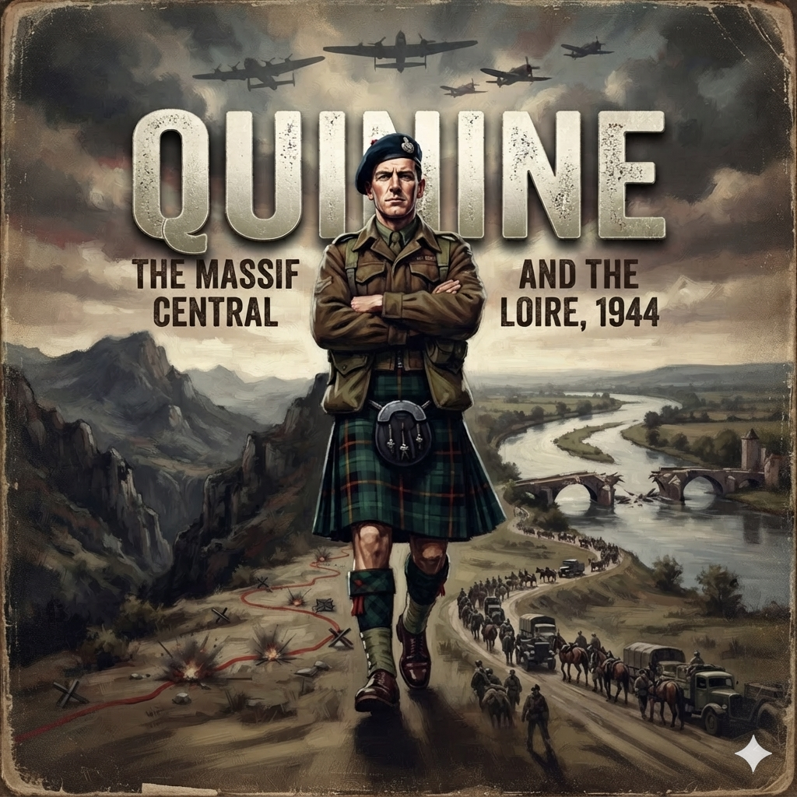

The damp had worked into the limestone of the south wing long before the War Office requisitioned the estate, but three years of military occupation had given it an institutional permanence. It clung to the high, dark wainscoting and gathered in the folds of the blacked-out velvet draperies, smelling of sulfur coal-smoke, wet serge, cold tea, and floor wax.
Across the parkland beyond the terrace, where Earl Fitzwilliam's tenant cattle had grazed before the war, three dozen men in denim fatigues were running the perimeter ditch in full marching order. Through the leaded panes of the library's tall casements, the rhythmic, gravelly crunch of their ammunition boots carried across the lawn, rising and falling with the gusts of an unseasonably cold Northamptonshire rain.
Inside, the room was quiet.
Major Tommy Macpherson stood with his back to the carved limestone hearth, his arms folded across the coarse wool of his service dress. He was twenty-three years old, six feet tall, built lean and wiry like an endurance runner, with high, angular cheekbones and a narrow blade of a nose that bore the crooked, thickened bridge of a healed fracture—the work of an Italian guard's rifle butt in Campo 78 at Sulmona three years earlier. His skin, naturally fair, still carried a faint, ingrained gray shadow beneath the jawline and across the knuckles: the stubborn residue of four days buried beneath thirty tons of anthracite coal in the bilge of a Swedish collier slipping through Gdynia on his third and final breakout to the Baltic.
He wore the dark green ribbons of the General Service Medal and the Military Cross on his breast. His hands were still, resting flat against his ribs. He had learned in the Italian isolation cells and the high-security blocks of Silesia that unnecessary movement was a waste of calories; he stood with the motionless, coiled patience of a predator waiting out a squall.
On the long mahogany library table, sprawling across five leaves of French walnut, lay Michelin Sheet 79, flanked by a patchwork of 1:250,000 War Office topographical sheets pinned together with brass drawing pins. The corners were weighted down against the draft by four empty 75-millimeter brass shell casings.
Across the table stood a lieutenant colonel from the Special Operations Executive French Section. He was a man in his late forties, wearing a service dress tunic stripped of regimental badges, carrying only the dull black horn buttons of the General List. In his right hand, the Colonel held a twelve-inch boxwood ruler, tapping its brass edge against the paper in a slow, hypnotic cadence.
Snap. Snap. Snap.
"Montauban," the Colonel said. He did not raise his voice. In the hushed room, the scratch of a fountain pen across an OSS requisition ledger three tables away sounded like a knife blade scraping across dry leather. "Here. North of Toulouse. It is the cantonment of the 2nd SS Panzer Division: Das Reich."
The Colonel leaned forward, resting both palms flat on the map, his thumbs bracketing the department of Tarn-et-Garonne.
"Seventeen thousand men," the Colonel continued, his voice flat and analytical. "Two hundred and fifty tanks and assault guns. Panthers, Mark Fours, heavy self-propelled artillery, eighty-wheeled armored cars. Two motorized panzergrenadier regiments: Der Führer and Deutschland. The divisional commander is an SS-Brigadeführer named Heinz Lammerding. An engineer by training. A veteran of the defensive battles around Kharkov and the Dnieper. Thorough, cold-blooded, and completely indifferent to civilian casualties."
The Colonel lifted the boxwood ruler, setting its brass tip onto a thick, carmine-ink line that split the belly of France from south to north.
"Route Nationale 20," the Colonel said. "The main arterial highway. Montauban, Cahors, Brive-la-Gaillarde, Limoges, Châteauroux, Vierzon. It crosses the Loire south of Orléans and runs directly into the Paris basin. If the French railway grid functions, the Reichsbahn can load Lammerding's tracked elements onto flatcars and have his panzers unloading on the Seine in forty-eight hours. If the rail junctions fail and they road-march, his wheeled reconnaissance battalions will do fifty miles a day. His tracked battalions will do thirty-five. That puts his forward battle groups into the Normandy lines within seventy-two to ninety-six hours of the initial Allied landings."
Macpherson stepped away from the hearth, his boots making no sound on the heavy Turkish rug. He leaned over the table, his gray eyes scanning the tight, brown contour lines that bunched together through the gorges of the Lot and the Dordogne.
He did not need the map to visualize the ground. For ten weeks at STS 54, he had studied the geological surveys of the Massif Central until he could sketch the river culverts, the limestone bluffs, and the rail viaducts from memory.
"The Normandy bridgehead will not hold them," Macpherson said. His voice was quiet, carrying the clipped, rhythmic cadence of Argyll, tempered by three years of Trinity College, Oxford. "Not on D-Plus-Three. The American divisions on the right flank will barely have cleared the dunes. If an intact SS panzer division hits the seam between the British and American sectors before the heavy anti-tank batteries and the Sherman reserves are ashore, they will roll the lodgement into the sea."
"Precisely," the Colonel said. He tapped the ruler against the paper. "Air power cannot seal an asphalt highway. The Eighth Air Force and Bomber Command will hammer the marshaling yards along the Rhône and drop the bridges across the Loire. But bombers cannot stop a motorized infantry column moving under the cover of chestnut woods and river mist. Lammerding will drive by night. If the stone bridges are dropped, his pioneers will throw pontoons. If his fuel tankers are strafed, he will requisition civilian alcohol and wood-gas."
The Colonel straightened up and fixed his eyes directly on Macpherson.
"The Allied armies cannot spare an airborne brigade for the southern corridor. The Supreme Headquarters has exactly three men to assign to the department of the Cantal and the approaches to Route Nationale 20."
Macpherson did not blink. "Team Quinine."
"Team Quinine," the Colonel agreed. "A British major commanding. A French lieutenant as second-in-command to manage the political factions in the field. A British wireless operator with a B2 suitcase set. You will drop blind into the high plateau of the Cantal. No support battalions. No heavy weapons. No air cover on demand."
"And the tactical objective?"
"Delay," the Colonel said. The word fell into the room like a lead sinker dropped into deep water. "You do not fight a pitched battle with Das Reich. A single company of their armored halftracks would butcher every partisan in the department before noon. You are to make the road unlivable. You are to crater the macadam, drop the stone overpasses into the defiles, fell the beech forests across the bends, blow the rail culverts, and kill their motorcycle scouts. If Lammerding stops to deploy his panzergrenadiers into the fields, you vanish into the scrub. When he climbs back into his staff car, you shoot his driver."
The Colonel dropped the ruler. It landed across Brive-la-Gaillarde with a dry, wooden slap.
"Every hour you hold them south of the Loire buys time for the Mulberry harbors to sink their concrete caissons into the surf. If Das Reich arrives in Normandy on D-Plus-Four, the invasion fails. If you hold them back until D-Plus-Fourteen, the line holds. Can your Frenchmen do it?"
Macpherson looked past the Colonel's shoulder, out through the leaded casements toward the wet lawns.
In the middle of the grass, three dozen men in denim overalls were kneeling in the rain around a mock-up of a double-track railway line. They were practicing the handling of Nobel 808 plastic explosive, their bare fingers kneading the yellow, marzipan-scented compound into flat charges against the web of the steel rails. Among them stood a tall, blond officer with the fine, sloping jaw of the French Bourbons—his sleeves rolled to his elbows, his hands blackened with graphite grease.
"They aren't my Frenchmen yet, Colonel," Macpherson replied evenly. "They are Gaullists who distrust the British, communists who hate the Church, and peasants who only want to protect their sheep. But by the time Lammerding hits the first ravine on Route Nationale 20, they will have to be an army."
"And if the communist commanders refuse to take orders from a British officer?"
Macpherson reached down, picked up his leather gloves from the corner of the table, and pulled them slowly over his knuckles.
"I don't intend to give them orders, Colonel," Macpherson said. "I intend to show them how to derail trains."
The deal table in the former groom's quarters smelled of linseed oil, dry battery acid, and soldering flux.
Sergeant Oswald Arthur Brown sat on a backless wooden stool, leaning low over the open chassis of a Type B Mk II wireless transceiver. The set sat in its brown vulcanized-fiber suitcase like a surveyor's leveling kit, its enameled front panel crowded with black bakelite dials, knurled brass binding posts, and the twin ceramic sockets for the quartz frequency crystals.
Brown worked with the mechanical, unhurried concentration of a man who had stripped magneto coils by tallow light in the shipyards of Wallsend before he was sixteen. He held a small camel-hair camel brush between his teeth while his right hand, blackened around the cuticles by graphite and transformer oil, guided a pair of long-nosed pliers into the power pack to tighten a rubber-seated terminal.
"Crystals are ground for five-point-three and seven-point-one megacycles, sir," Brown said. He spoke around the wooden handle of the brush, his flat Tyneside vowels barely disturbing the quiet of the room. "Three sets of silk one-time pads. Two sewn into the inner seam of my trousers behind the thigh pocket, one stitched flat into the false bottom of the battery satchel. Fifty yards of seven-strand copper aerial wire on the wooden winder. Lead-in insulator's tested. Hand generator's packed with low-temperature grease."
Tommy Macpherson stood by the open sash window, watching the rain drip from the slate gutters into an iron water butt below.
"And if the power mains in the Cantal are dead?" Macpherson asked.
"They will be dead, sir," Brown said, pulling the brush from his mouth and blowing a speck of dust from the glass envelope of a 6L6 output valve. "Once the heavy bombers finish cutting the transformer stations along the Dordogne, there won't be enough juice in the department to light a match. I've got the foot pedals and the folding frame. If the frame is bolted to a floorboard, I can turn twenty watts out of the armature with ten minutes of steady pedaling. It's hard on the calves, but it keeps the plates hot."
"And the German direction-finders?"
Brown didn't look up from the chassis. He picked up a spare glass valve, wrapped it in greaseproof waxed paper, nestled it into a bed of carded cotton wool, and slotted it into a spring-loaded steel clip inside the suitcase lid.
"If the Abwehr or the Ordnungspolizei are running an Adcock mobile direction-finding van on the valley road within three miles," Brown said, "they get a rough bearing off my first three-letter group. By the fourth minute, they've got a cross-bearing from their fixed stations at Lyon and Bordeaux. By the eighth minute, the van is turning into the lane."
"Your operational window?"
"Four minutes," Brown said flatly. "Five if the atmospheric static off the mountains is bad and London asks for an IMI repeat. I send thirty words a minute on the Morse key. I clear forty five-letter cipher groups, log the receipt, pull the aerial lead, and kill the generator. If boots hit the gravel outside before I finish the group, I smash the quartz crystals with the heel of my boot, heave the chassis through the glass, and go out the scullery window with the Colt."
Sitting on a rolled canvas palliasse against the far brick wall, methodically running an oiled flannel patch through the bore of an M1 carbine, was Lieutenant Prince Michel de Bourbon-Parme.
He was twenty years old, slender and long-limbed, with thick dark hair combed straight back and the distinctive, haughty bridge of the Bourbon nose. His great-grandfather had been Charles III, Duke of Parma; his grandfather had ruled the northern Italian duchy until the unification of Italy; his aunt had sat on the imperial throne of Austria-Hungary as the Empress Zita.
When the French front disintegrated in June 1940, Michel had been an adolescent student. Rather than submit to the Vichy regime, he had crossed the Pyrenees on foot through snowdrifts, been seized by Franco's Guardia Civil, and endured the filth, lice, and starvation of the Miranda de Ebro concentration camp before the British embassy secured his release. In 1943, he had arrived in Britain and volunteered immediately for service with the Free French infantry before the Bureau Central de Renseignements et d'Action (BCRA) funneled him into the Jedburgh project.
Michel pushed the brass cleaning rod through the muzzle until the white flannel emerged from the breech, inspected the clean weave, and laid the carbine across his knees.
"The communist command in the Cantal will not like the carbine, Tommy," Michel observed. His English was immaculate, spoken with the dry, aristocratic drawl common to European nobility educated by Swiss tutors, devoid of the guttural French cadence. "They will inspect the receiver. They will read Inland Division, General Motors. They believe the Americans intend to replace the German occupation with the Bank of Morgan. They prefer British Stens. Cheap, stamped iron. It smells of the factory floor. It smells of the barricades."
"They will take what falls out of the Halifax bomb bays and be grateful for the grease on the springs," Macpherson said without turning from the window.
He turned back to the room and walked to the trestle cot where his canvas valise lay open.
Macpherson began unpacking the standard equipment issued forty-eight hours earlier by the quartermaster at Baker Street: three pairs of thick, undyed gray wool socks; two tubes of Benzedrine sulfate tablets; an escape compass embedded inside a vulcanite uniform button; a silk map of central France printed with indelible waterproof inks; a Fairbairn-Sykes fighting knife with its double-edged blade blackened with gun blue; five hundred thousand French francs in mint, consecutive five-hundred-franc notes bound in brown paper; and a flat, airtight steel tin containing forty copper detonators and eight feet of slow-burning safety fuse.
Beside the ordnance lay the issue clothing: two sterile British army battle-dress blouses stripped of unit flashes, regimental titles, and division patches, alongside two pairs of rough brown corduroy trousers, a civilian cloth cap, and a heavy blue mechanic's boiler suit.
Macpherson pushed the civilian clothes aside. He reached to the bottom of the canvas valise and lifted out an expanse of heavy, dark, coarse-woven wool.
The fabric fell open under its own tremendous weight, unfolding across the blankets. It was eight yards of worsted wool, pleated with mathematical severity: the deep green and black checks slashed with bold scarlet and yellow lines—the tartan of the 79th Queen's Own Cameron Highlanders, the Cameron of Erracht.
Alongside it, Macpherson withdrew a dark blue wool Glengarry bonnet with its silk cockade and silver Cameron badge, a pair of diced red-and-white wool hose, scarlet garter flashes, and a black leather service sporran.
Michel stopped his rag over the carbine's receiver. Brown halted his screwdriver half an inch from the B2's tuning transformer.
For ten seconds, neither man spoke. The only sound in the groom's room was the rain rattling against the iron water butt outside.
Michel lowered the carbine to the blanket, his eyebrows arching until they touched his hairline. A faint, half-amused, half-incredulous smile touched his lips.
"Tommy," Michel said softly. "What in the world is that?"
"It is the uniform of my regiment," Macpherson said.
Michel rose from the palliasse, walked to the cot, and reached out with two fingers, feeling the coarse, oily thickness of the worsted wool.
"We are dropping forty miles behind the vanguard of the Second SS Panzer Division," Michel said, his voice dropping into the quiet, patient tone of an equerry explaining state protocol to a lunatic. "The operational orders from Baker Street were specific. Sterile British battle dress, devoid of rank markings or national titles, or civilian clothing worn under the jump-smock so we can bury our parachutes, discard our web gear, and walk into the nearest market town as agricultural clerks."
"If you wear civilian clothes," Macpherson said, his voice dropping into that quiet, terrifyingly reasonable register he used when dismantling staff folly, "and you are caught within five miles of a blown railway culvert with a wireless set in your rucksack, the Germans will treat you under the Nacht und Nebel decree. You are not a combatant. You are a terrorist. You will be taken to the Gestapo headquarters at the Hotel Terminus in Lyon or the cellars at Clermont-Ferrand. Your fingernails will be pulled out with mechanics' pliers, and you will be shot against a limestone quarry wall in your socks."
"And if you are caught in that?" Michel gestured at the eight yards of Erracht tartan.
"If I am taken in Highland uniform," Macpherson said, "I am an officer of the British Army operating in uniform behind enemy lines. Even the Wehrmacht General Staff has lawyers. Under the Hague and Geneva Conventions, they are required to lodge me in an Offizierslager. But that is the secondary consideration."
"And the primary?" Brown asked from the table, squinting through the grease at the scarlet lines of the tartan.
"Authority," Macpherson said.
He lifted the kilt, his fingers running over the heavy pleats, shaking out the folds.
"When we jump into the Cantal tonight," Macpherson said, looking directly at Michel, "we are dropping into a hornets' nest of men who have been hunted by the Milice for three years. Half of them are communists who think Charles de Gaulle is an imperialist reactionary. The other half are Catholic royalists and Gaullists who think the communists intend to execute the parish priests the moment the Germans retreat. They are armed with shotguns and ancient Lebels. They are nervous, they are suspicious, and they have spent four years shooting informers in the woods."
Macpherson stepped up to Michel, holding the heavy woolen tartan between them.
"If I drop into their clearing wearing a drab khaki battle-dress blouse without badges, or a greasy blue boiler suit like an electrician from Limoges, they will look at me and see an interloper. They will see an agent sent by London to use them as cannon fodder. They will argue over every bridge. They will hold a committee meeting before every culvert we tell them to blow."
He set the kilt down on the table, right beside the B2 wireless.
"A Scotsman in a kilt is not an interloper, Michel," Macpherson said, his gray eyes hard as flint. "He is an unmistakable, undeniable fact. He cannot be an informer. He cannot be a Vichy milicien in disguise. He cannot be an undercover Gestapo agent from Paris. He is a British officer dropped out of the sky by the King of England, and he has come to wage war."
Michel looked at the heavy woolen checks, then down at his own olive-drab jump trousers. He shook his head slowly, a quiet, helpless laugh escaping his chest.
"The German snipers will see you coming across a pasture from a thousand meters, Tommy."
"Splendid," Macpherson replied, folding the Cameron tartan with mechanical precision. "Then they won't waste any time wondering where to shoot."
From the stone corridor outside, the heavy crunch of hobnailed boots broke the conversation, followed by three sharp raps on the pine door.
A staff captain with a canvas map case under his arm pushed the door open. He looked around the room—at the Newcastle telegraphist wiping solder from his fingers, at the Bourbon prince holding an American carbine, and at the Scottish major smoothing the pleats of eight yards of clan wool across an SOE suitcase.
"Team Quinine?" the captain asked.
"Sir," Macpherson said, straightening his back.
"Staff car is at the east courtyard," the captain said, checking his clipboard. "The road to RAF Tempsford is clear. Transport departs at nineteen hundred hours sharp. Supreme Headquarters has confirmed the northern landings for the morning of the sixth. Your aircraft is scheduled for the night of the eighth."
The captain's eyes drifted to the kilt on the cot. His brow knitted. He opened his mouth, clearly searching his memory for a section of the King's Regulations or the Special Operations Executive field manual that prohibited Scottish highland dress on clandestine airborne insertions, caught Macpherson's unblinking, slate-gray stare, and thought better of it.
"Good luck, gentlemen," the captain said, and pulled the door shut.
The runway lights at Tempsford were nothing more than hooded paraffin goose-neck flares set into the damp turf, casting narrow pools of yellow soot-light across the pierced-steel planking of the taxiway.
From the dispersal bay beside Gibraltar Farm—the seventeenth-century brick barn where clandestine operatives were stripped of their civilian identity cards and issued their foreign currency—the black-painted Handley Page Halifax Mk V rumbled out into the darkness.
The aircraft carried no roundels on its upper wings, no squadron codes, and no white invasion stripes. Its belly and flanks had been sprayed with dead matte-black night-camouflage, streaked around the exhaust cowlings with pale gray plumes of leaded fuel ash.
Inside the stripped fuselage, the noise was absolute.
The four Bristol Hercules radial engines, each turning sixteen hundred horsepower at takeoff revolutions, set the bare duralumin deck plates vibrating with a violent, rhythmic shudder that traveled straight through the soles of Tommy Macpherson's boots and settled in his teeth. There were no passenger seats, no soundproofing, and no heat. To make room for the ventral drop hatch and the bomb-bay winches that carried twelve cylindrical CLE supply containers, the Tempsford ground crews had gutted the airframe down to its skeletal ribs and exposed control cables.
Macpherson sat on the port-side bench, his back braced against an aluminum bulkhead stiffener.
Over his service dress and Cameron of Erracht kilt, he wore a loose, olive-drab SOE camouflage jump-smock. Beneath the smock, the eight yards of heavy worsted tartan had been gathered tightly between his thighs and pinned flat against his woolen drawers with two three-inch steel blanket pins. If the heavy pleats caught the four-hundred-mile-an-hour propwash or fouled the static-line webbing as he cleared the hatch, the kilt would act as a drogue, spinning him head-down into the rigging before the silk could deploy.
Across his shoulders and chest, the thick, unyielding cotton webbing of the Type X static-line parachute harness pressed into his collarbones. There was no reserve parachute. Clandestine drops into the Massif Central were planned for five hundred feet above the terrain—too low for a chest-mounted reserve pack to develop before a man struck the basalt.
Opposite Macpherson, wedged into the angle where the wing-spar bridged the fuselage, sat Sergeant Arthur Brown.
The Newcastle signalman's face was the color of curdled milk in the dim, red glow of the blackout lamps. Strapped between his knees with broad canvas lashing was the padded, vulcanized container of the B2 wireless set and three secondary dry-cell packs, weighing sixty-four pounds of dead weight. Brown sat with his boots flat to the deck, his pigskin-gloved fingers clamped over the quick-release box on his chest, staring fixedly at the black square of the floor aperture.
Beside Brown, Michel de Bourbon-Parme leaned his head back against the fuselage skin, his eyes closed. His padded leather jump helmet was buckled tight under his chin. Slung along his right leg, tethered to his web harness by twenty feet of rolled parachute cord, hung a green canvas weapons valise containing his stripped M1 carbine and three loaded fifteen-round magazines.
At the rear of the cabin, crouching on his knees beside the open "Joe hole"—the circular three-foot aperture cut through the belly where the ventral turret had once been—was the RAF dispatcher. He was a flight sergeant with a broken nose, wearing a sheepskin flight jacket, thick sheepskin mittens, and a heavy canvas safety tether snapped to an overhead steel cable.
The Halifax shuddered violently as it lifted from the Bedfordshire clay, its tail wheel coming up, its engines screaming in low pitch as it climbed into the overcast above the Wash.
Through the perspex observation dome set into the roof above Macpherson's head, the black countryside of England tilted away. The aircraft banked southwest, skirting the London flak corridor, dropping to twelve hundred feet to slip beneath the German radar sweeps across the Pas-de-Calais.
Macpherson reached across the narrow aisle and tapped Michel's knee.
Michel opened his eyes. He leaned his head across the roar of the engines until his helmet touched Macpherson's ear.
"Normandy is forty miles to our starboard flank," Michel shouted against the deafening slipstream. "The Americans are fighting in the swamps behind Carentan! The British are pinned outside Caen!"
Macpherson leaned in close, shouting into the leather flap of Michel's helmet. "The BBC French Service transmitted the code phrases at twenty-one hundred! 'Les carottes sont cuites' and 'Le dauphin est mort'! Every maquisard between the Loire and the Pyrenees has been called to arms tonight! Lammerding will be issuing march orders from Montauban right now!"
For two hours, the black bomber bored south across the belly of France.
The temperature in the uninsulated fuselage fell past freezing. A brittle, fern-like crust of white frost began to crawl across the duralumin rivets and the steel tubing of the static-line rail. The draft roaring up through the Joe hole smelled of salt water, then damp French wheat, then the sharp, resinous tang of pine forests.
Macpherson flexed his toes inside his boots, fighting off the creeping numbness that threatened to freeze his calves. He checked the blanket pins through the wool of his kilt, feeling the cold steel through the fabric. Beside him, Brown pulled a small silver pocket crucifix from his tunic pocket, kissed the lead-soldered figure, and slipped it back into his woolen glove.
At 01:35 hours, the tone of the four Bristol Hercules radials abruptly shifted.
The high-pitched, straining drone settled into a hollow, throttling thrum as the pilot pulled back on the pitch controls. The nose of the Halifax tilted downward. The airframe began to lurch and drop in sickening, thirty-foot descents as the aircraft hit the turbulent thermal updrafts boiling off the volcanic ridges of the Massif Central.
The flight sergeant rose from his knees, his safety line taut behind him. He reached up with a gloved hand and wiped the frost from a small bulkhead mirror, checking the bomb-bay indicator lamps.
He turned to the three men of Team Quinine, his sheepskin-clad arm held high, five fingers extended into the red light.
"Five minutes!" the dispatcher roared.
Macpherson reached down, found the quick-release buckle on his canvas lap-strap, and turned the brass plate. The strap whipped free. He dragged himself to his feet on the icy floor, bracing one shoulder against the fuselage ribbing, and motioned to Brown and Michel.
Brown stood up with an agonizing, groaning effort, the sixty-four-pound deadweight of the wireless container strapped to his thighs pulling his shoulders forward. Michel stepped up directly behind the signalman, checking the snap-shackle of Brown's static line with both hands.
"Hook up!" the dispatcher bellowed.
Macpherson reached up, seized the heavy bronze snap-hook at the end of his olive-drab static-line webbing, and forced it onto the overhead steel cable running along the spine of the ceiling. The spring-loaded safety gate slammed shut with a sharp, metallic clink.
He shoved the split-pin home through the eyelet and bent the brass arms.
Michel checked Macpherson's pin. Brown checked Michel's. Macpherson reached over Brown's shoulder and yanked the signalman's hook with his full body weight to test the cable seat.
"Number One hooked!" Brown yelled.
"Number Two hooked!" Michel yelled.
"Number Three hooked!" Macpherson yelled.
The dispatcher reached down to the wooden bulkhead frame beside the open hole. Mounted to the rib were two circular electrical lamps: one crimson, one emerald green.
The crimson lamp snapped on.
A freezing gale of sub-zero mountain air rushed up through the circular floor opening, carrying the sharp, pungent scent of damp basalt, cold mountain heather, and wet juniper. Five hundred feet below the aircraft, the dark, corrugated landscape of the Cantal rushed past at one hundred and forty miles an hour—a black blur of volcanic ridges, dark pine hollows, and sheer basalt crags glittering faintly under the cloud-streaked starlight.
"Action stations!" the dispatcher screamed, his voice cracking against the wind.
Brown shuffled his boots across the frosted floor plates. He dropped onto his knees, then swung his legs into the void, sitting on the wooden lip of the hole with his ammunition boots dangling into empty space. His gloved knuckles clamped around the rim of the aperture until the leather stretched white.
Beneath the floor, forward of the Joe hole, the Halifax's hydraulic bomb-bay doors groaned open against the slipstream with a sharp, mechanical shriek.
A series of twelve heavy, dull, pneumatic thuds reverberated through the airframe as the twelve CLE supply containers dropped away into the dark on their colored silk canopies—sixty thousand rounds of nine-millimeter ammunition, eighty Sten submachine guns, twenty Lee-Enfield rifles, and six hundred pounds of Nobel 808 plastic explosive tumbling through the night.
Macpherson peered over Brown's woolen shoulder into the black pit.
Down in the valley, sheltered inside a high basalt amphitheater south of Saint-Flour, three tiny orange pinpricks of light flickered against the dark—a rough, inverted triangle of wood fires burning in an isolated pasture.
From the apex of the triangle, a fourth light was pulsing in a sharp, frantic staccato: a shielded torch clicking out Morse code.
Dot-dot-dash-dot. The letter F.
The green lamp snapped on.
The dispatcher's sheepskin mitten came down across Brown's shoulder with the force of an iron mallet.
"GO!"
Brown threw his hands forward, dropped through the floor, and was sucked instantly into the black roaring slipstream.
Michel stepped straight to the edge without breaking stride, crossed his arms tight over his harness, and plunged headfirst into the darkness.
Macpherson took one step. The propeller blast struck his face like a sheet of corrugated zinc, ripping the air from his mouth. He looked straight into the dark void beneath the fuselage, crossed his gloved hands over the brass box of his harness, tucked his chin into the coarse collar of his smock, and threw himself into the night.
The ground came up out of the darkness like a thrown stone.
Macpherson had barely four seconds under canopy. The Type X static line had cracked open above him with a dry, whip-like report that snapped his head forward against the chest webbing. Before his gloved fingers could reach the canvas risers to spill the air, the dark, jagged shoulder of the plateau rushed into his boots.
He struck a thirty-degree slope of loose volcanic basalt at twenty-five miles an hour.
His right heel drove into a bed of fractured scree, the ankle rolling violently on the stones. He took the impact across the outside of his right thigh, tucked his right shoulder into his ribs, and executed the commando break-fall across the shale. The heavy wool of the Cameron kilt, pinned tight between his legs, absorbed the initial scrape of the rock, though the sharp basalt edges tore through his diced wool hose, peeling a four-inch strip of skin from his shin.
The wind scouring the high crest of the Plomb du Cantal caught the white silk canopy, dragging him twenty yards across the rocks toward a dry-stone pasture wall.
Macpherson rolled onto his back, braced his heels against the shale, and struck the brass quick-release box on his breastbone with the heel of his hand. Turn and strike.
The harness sprang open. The risers whipped away into the juniper scrub, the twenty-eight-foot canopy collapsing across a low stone outcrop with a faint, sighing rustle.
Macpherson lay motionless for ten seconds, his lungs burning in the thin mountain air, his ears ringing in the abrupt, suffocating quiet.
Above him, the heavy, syncopated drone of the Halifax's four Bristol Hercules engines was already a fading vibration in the north, swallowed by the jagged basalt ridges toward the Puy de Dôme. From three hundred yards uphill came the faint, resinous smell of burning pine—the dying embers of the reception fires.
He dragged himself upright against the stones. Reaching down to his thighs, he unclipped the two three-inch steel blanket pins that had bound the kilt. The heavy green-and-black Erracht tartan fell open under its own weight, the coarse worsted pleats settling heavily against the tops of his hose.
From the map pocket of his jump-smock, he withdrew his blue Glengarry bonnet, shook the gray basalt dust from its silk ribbons, and set it square upon his head, the silver Cameron crest catching the faint starlight.
He drew his Colt .45 automatic, cleared the leather with a soft scrape, slid the safety catch down, and rose to a low crouch behind a basalt boulder.
Thirty paces to his left, boots crunched through the scree.
"Arthur?" Macpherson whispered.
"Aye, sir," came Brown's dry, clipped Tyneside murmur from the darkness.
The wireless operator emerged from a clump of mountain broom, hauling the padded B2 container with both hands. He was limping slightly, his jump-trousers caked in black peat mud, but his breathing was steady.
"Valves are intact, sir," Brown said quietly, setting the suitcase down behind the boulder. "Shock-mounts held on impact. Aerial winder's dry."
A shadow vaulted a low cattle wall twenty yards down the slope, moving with the fluid, silent grace of a hunter.
Michel de Bourbon-Parme approached at a low, crouching run, his canvas weapons valise open, his M1 carbine unslung and held diagonally across his chest. He dropped beside Macpherson, his leather jump helmet pushed back from his forehead, his face pale and sharp in the gloom.
"Twelve CLE containers down in the lower hollow," Michel reported in a low whisper. "Two parachutes hung up in the sweet chestnut trees along the gully. The reception fires were kicked out the moment we cleared the hatch. Someone is moving up the cattle track."
From the edge of the scrub fifty yards away came the sharp, dry, unmistakable metallic double-click of rifle bolts being worked.
Macpherson lowered himself onto his right knee behind the stone, his thumb resting on the Colt's serrated hammer.
Through the drifting mountain fog, a line of dark silhouettes moved across the shale in a ragged skirmish line. They wore no steel helmets and carried no uniform equipment. They were dressed in heavy sheepskin vests, worn corduroy work jackets, blue boiler suits, and broad Basque berets pulled low over their ears. Their boots were grease-blackened leather farm clogs or wooden-soled sabots that clicked awkwardly against the volcanic shale.
Across their chests hung an eclectic, desperate armory: ancient French Model 1886 Lebel rifles with long needle bayonets, 12-gauge double-barreled hunting shotguns bound with baling wire, and two weathered 9mm Sten guns dropped by the RAF during the spring moon.
A stocky, broad-shouldered man stepped out from the center of the line. He wore a greasy corduroy cap and an unbuttoned sheepskin coat. In his right hand, leveled dead at Macpherson's boulder, was a German Walther P38 automatic. In his left hand, he held a tin storm lantern, its glass cylinder hooded by a dirty linen cloth.
"Halte," the man barked in the thick, rolling, vowel-heavy dialect of the Auvergne. "Qui vive?"
Macpherson did not raise his hands. He holstered his Colt, stood up to his full six feet, and walked calmly out into the center of the open shale.
"La lune est pleine de sang," Macpherson said, his voice clear and resonant. The moon is full of blood. The BBC coded operational recognition phrase broadcast twelve hours earlier from London.
The stocky Frenchman lowered the Walther two inches. "Et la terre attend la pluie," he answered in a low, gravelly rasp. And the earth waits for the rain.
The man stepped forward and threw back the linen cloth from the storm lantern.
The raw yellow kerosene flame flared in the mountain wind, cutting through the swirling gray mist. The beam swept across Macpherson's heavy ammunition boots, traveled up the red-and-white diced wool hose, illuminated his bare, bleeding shin, and came to rest upon eight yards of heavy green-and-black Cameron of Erracht tartan, its deep pleats swaying gently in the sub-zero draft off the ridges.
The light moved higher, catching the polished brass buckle of the leather service sporran, the Military Cross ribbon pinned to the service dress tunic, and stopped at the silver Cameron of Erracht badge gleaming on the dark blue Glengarry.
The Frenchman's jaw went completely slack.
The lantern tilted in his hand, casting frantic, elongated yellow shadows across the basalt boulders behind him.
Along the skirmish line, six young partisans lowered their Lebels and hunting shotguns, their eyes wide as saucers, staring at the Scotsman's bare knees as though a mythological creature had fallen through the clouds into their pasture.
"Nom d'un chien," one of the young fighters muttered from the heather, his soot-blackened thumb unconsciously tracing the sign of the cross over his chest. "Qu'est-ce que c'est que ça?"
The French commander swallowed hard. He took three slow, heavy paces forward, raising the lantern until the heat of the glass was inches from Macpherson's tunic buttons, raking the beam across the heavy tartan once more.
"You are the British mission?" the man asked in rough, disbelieving French. "London sends us an officer in a woman's skirt?"
"I am Major Macpherson of the British Army," Tommy said in cold, flawless, aristocratic French, looking down at the man from his full height. "This is the uniform of the Cameron Highlanders. And unless your grandmothers have taken to carrying forty-five caliber service automatics and twenty pounds of plastic explosive in their skirts, Monsieur Cournil, I suggest you lower that lantern."
The stocky man blinked. The thick black mustache twitched over his mouth.
"You know my name?"
"Bernard Cournil," Macpherson said without a flicker of hesitation. "Commandant of the Secret Army for the Cantal sector. Headquarters established in the woods near Murat. We were briefed on your strength at Milton Hall four days ago. You have eighty men under arms, seventy rifles, forty rounds of ammunition per man, and zero anti-tank mines."
Macpherson stepped aside and gestured toward the shadows behind the boulder.
"This is Lieutenant Michel de Bourbon," Macpherson said. "My second-in-command."
Cournil swung the lantern beam toward Michel.
The young French officer stepped out into the clearing, carrying his M1 carbine at the low ready. He removed his jump gloves, tucking them beneath his left shoulder strap, and extended his right hand with the effortless, cool composure of an ambassador at Versailles.
"Bourbon?" Cournil repeated, his brow furrowing into deep, skeptical ridges beneath his cap. "Like... like the royal house?"
"Precisely like the royal house," Michel replied politely. "Though tonight I am merely an officer of the Free French Forces under General de Gaulle. And this is Sergeant Brown, our wireless operator."
Brown stepped up beside the B2 container, his Sten gun slung muzzle-down across his shoulder, his Newcastle cap pulled low over his brow. He gave Cournil a single, stiff nod of acknowledgment.
Cournil stood in the center of the basalt clearing, looking from the Bourbon prince to the Tyneside signalman, and finally back to the six-foot Highland major holding eight yards of clan wool against the mountain gale.
A slow, incredulous grin split the Frenchman's stubbled face beneath his mustache. He let out a low, wheezing laugh that ended in a cough, turned his head, and spat a dark stream of tobacco juice onto the volcanic shale.
He shoved his Walther P38 into the waistband of his corduroy trousers.
"A king, a mechanic, and a Scotsman in a skirt," Cournil muttered, shaking his head with a mixture of wonder and profane amusement. "If the Boche see you, Major, they will die of laughter before we can pull the triggers."
"If they laugh, Monsieur Cournil," Macpherson said, his gray eyes turning cold as slate as he looked south toward the distant valleys, "they will die laughing. Where are the containers?"
Cournil's face hardened, the brief moment of humor evaporating into the bitter reality of the occupation. He turned toward the juniper hollows and blew a sharp, low, two-tone whistle through his teeth.
From the dark scrub along the pasture wall, twenty more young men emerged at a dead run, carrying ropes, timber poles, and hand-axes, heading down toward the hollow where the colored supply parachutes lay tangled in the boulders.
"We have forty minutes before first light," Cournil said, pointing up toward the eastern skyline. "The Luftwaffe keeps two Fieseler Storch spotter planes stationed at the airfield in Clermont-Ferrand. At dawn, they fly the valley roads looking for parachute silk. We must haul the containers up to the limestone caves above Murat before the sun breaks."
"Forget the caves," Macpherson said.
Cournil turned on his heel, his brow furrowing again. "What?"
"We are not caching this ordnance in caves," Macpherson commanded, his voice ringing with absolute authority. "Unpack the containers here in the hollow. Crack the crates with the axes. Strip the grease-paper from the Stens, load the magazines, distribute the Mills bombs, and hand out the Nobel 808 to every man who has two hands and a belt."
Macpherson reached into his breast pocket, drew out his silk Michelin map, and snapped it open against the flat tin hood of Cournil's lantern.
"The 2nd SS Panzer Division left its barracks in Montauban twenty-four hours ago," Macpherson said, tapping the red line of Route Nationale 20 with his thumb. "Their reconnaissance battalion is already past Cahors. The railway line between Figeac and Aurillac is five miles to our south. We do not bury British weapons in holes in the ground, Monsieur Cournil. Tonight, we begin to cut their throat."
The camp smelled of wet leaf mold, boiled cabbage, rancid lard, and the acrid, stale stench of cheap Caporal tobacco.
Deep in a natural amphitheater of sweet chestnut and sessile oak, half a dozen low, sod-roofed charcoal-burners' huts were half-submerged in the damp earth. Sacks of requisitioned wheat flour were stacked beneath greasy tarpaulins lashed to birch trunks. Around the perimeter, two dozen young men stood guard—or what passed for guard among the Francs-Tireurs et Partisans.
They wore blue mechanic's overalls, patched corduroys, or threadbare railway workers' jackets. Every man had a strip of red flannel ribbon pinned to his left sleeve with a rusty safety pin. Their weapons—an uneven assortment of 1886 Lebels, rusted 12-gauge hunting shotguns, and two oily MP 40s taken from dead gendarmes—were pointed not toward the departmental highway two miles south, but directly at Bernard Cournil's five Secret Army guides who had escorted Team Quinine through the timber.
At the center of the clearing, seated on an overturned cider barrel beneath a dripping tarp, was Jacques Chapou.
In the clandestine directories of the Communist Resistance, Chapou was known by the nom de guerre "Kléber," though his fighters often called him "Gilles." He was thirty-five years old, wiry, hollow-cheeked, with dark, burning eyes behind round, nickel-rimmed spectacles tied behind his ears with waxed twine.
Before the collapse in 1940, he had been a professor of classical literature at the lycée in Cahors—a man who had spent his youth parsing the syntax of Cicero and teaching French verse to the sons of provincial merchants. Now, an unbuttoned black leather cycling jacket revealed a captured German MP 40 resting across his knees, its metal folding stock pitted with rust from the mountain rains.
Chapou did not stand when Macpherson entered the clearing.
He took a long, slow drag from a crushed Gauloise, allowing the blue smoke to drift into the gray mist, his eyes tracking deliberately down Macpherson's six-foot frame: past the khaki service dress tunic and the Military Cross ribbon, down the eight yards of heavy, pleated Cameron of Erracht tartan, to the bare knees and the red-and-white diced hose caked in dried volcanic mud.
His gaze flicked to Sergeant Arthur Brown, who stood ten paces back with the B2 wireless case resting against his shins, and finally settled on Michel de Bourbon-Parme.
"London sends us a circus," Chapou said in flat, cutting French, his voice carrying the dry, academic precision of the lecture hall stripped of all gentility. "We ask for five hundred submachine guns to arm the working class of the Corrèze, and Baker Street drops three men: a British imperialist in a woman's dress, a telegraph boy from the English slums, and a Bourbon."
Chapou let the cigarette ash drop onto his leather sleeve. He leaned forward over the submachine gun, his eyes locking onto Michel with pure, venomous class hatred.
"A Bourbon," Chapou spat softly. "The blood of Louis XVI. One hundred and fifty years after the Republic cleansed the soil of France with the guillotine, the English drop royalist vermin into our mountains to tell French workers how to die."
Michel took half a step forward, his jaw muscles knotting like iron beneath his pale skin, his pigskin-gloved hand dropping instinctively toward the hilt of his Fairbairn-Sykes knife.
Macpherson's left forearm shot out like a baulk of timber, catching Michel squarely across the chest.
"Steady, Michel," Macpherson said in quiet, measured English that did not carry beyond the three of them.
Macpherson stepped directly into the center of the circle of red-armbanded partisans. His ammunition boots sank two inches into the black forest loam, the heavy pleats of his Cameron kilt whispering against the wet ferns. He stopped two paces from Chapou's cider barrel, towering over the seated schoolteacher. The blue Glengarry bonnet was tilted forward over his right temple; his gray eyes were completely devoid of warmth.
"Sergeant Brown," Macpherson said, not turning his head.
"Sir," Brown called out from the edge of the clearing.
"Take the B2 set. Unhook the ground wire, stow the aerial, and return to the road. We are shifting our liaison post forty miles east to the Free French sector in the Haute-Loire."
Brown didn't blink. With the wooden, unhesitating discipline of the British Army, he swung the sixty-pound suitcase onto his shoulder by its web strap, clicked the safety on his slung Sten, turned on his heel, and started down the mud track.
Chapou's eyes narrowed behind his spectacles. The MP 40 on his knees shifted three inches, the muzzle rising toward Macpherson's waist. Along the perimeter, six young communist fighters raised their Lebels, their bolts clicking back into battery.
"You don't walk out of an FTP sector without my authorization, Major," Chapou said softly.
Macpherson leaned down until his face was twelve inches from Chapou's spectacles.
"Listen to me, schoolteacher," Macpherson said. His voice was barely above a whisper, but it carried the razor-sharp edge of cold steel drawn across a wet hone. "I do not care about your political party. I do not care about the French Revolution, and I do not give a fig about Karl Marx. But you will listen to what happened in Tulle yesterday morning."
Chapou flinched. The muscle in his left cheek twitched once beneath the stubble.
"We took Tulle," Chapou countered, though the bluster had gone thin in his throat. "The FTP attacked the garrison on the seventh. We liquidated the security police and cornered the German rearguard in the schoolhouse. The city was ours."
"And while you were celebrating your proletarian victory," Macpherson said, his words hitting like hammer blows, "Lammerding's reconnaissance battalion rolled into Tulle from the south with fifty armored half-tracks and heavy machine guns. They drove your brave boys out of the town in twenty minutes because you had no anti-tank mines, no plastic explosive, and thirty rounds of nine-millimeter per Sten."
Macpherson leaned closer, his voice dropping into a lethal, rhythmic cadence.
"And do you know what the SS did yesterday, Monsieur Chapou? While you were sitting on this barrel? They cordoned the town. They rounded up every male civilian between sixteen and sixty. And they hanged ninety-nine Frenchmen from the lampposts and the wrought-iron balconies along the river. They left them dangling in the sun while Lammerding's officers drank white wine on the cafe terraces of the Place de la Cathédrale."
The forest clearing was utterly silent. The drip of rainwater falling from the chestnut leaves onto the sodden tarpaulins sounded like lead shot hitting earth.
Cournil's Secret Army men held their breath, their fingers hooked into their weapon slings. The young communist partisans in their blue overalls stared at Macpherson, their faces draining of color as the news of the massacre penetrated the mountain camp.
Chapou's hand tightened around the receiver of his German submachine gun until his knuckles turned white, but he did not speak.
Macpherson straightened his spine, pointing a leather-gloved finger at Arthur Brown, who had halted twenty paces away on the dirt track, waiting.
"That wireless set," Macpherson said, "is the only link between this department and the Royal Air Force. Every supply container of Sten submachine guns, every crate of nine-millimeter ammunition, every coil of detonating cord, and every pound of Nobel 808 that falls out of an English airplane into the Massif Central drops where I tell them to drop. If I give Sergeant Brown three letters—Q-U-I—the drop zones shift to the Haute-Loire tonight. You can fight the Second SS Panzer Division with your double-barreled shotguns and your political manifestos. Let us see how many Tiger tanks Karl Marx can destroy."
Chapou stared down at his boots. The cigarette had burned down to the yellow paper, scorching his thumb before he dropped it into the wet moss.
The intellectual's mind—the mind that had dissected Thucydides and Roman military history in the classrooms of Cahors—cut through the ideological rhetoric. He looked at Macpherson's scarred face, saw the unyielding, total lack of fear in the gray eyes, and understood the absolute reality of the military ledger.
Without ammunition, his battalions in the Corrèze were dead men.
Slowly, deliberately, Chapou engaged the safety catch on his MP 40, lifted the weapon from his knees, and leaned it against the side of the cider barrel.
"How much plastic explosive dropped at Aubépine?" Chapou asked. His voice had lost its sneer, reduced to a dry, raspy demand.
"Six hundred pounds," Macpherson said. "Eighty Sten guns. Forty thousand rounds of ammunition. Two hundred Mills bombs. Fifty magnetic clam mines."
"How will it be divided?"
"Fifty percent to Cournil's Secret Army," Macpherson replied without hesitation. "Fifty percent to your FTP battalions. On one non-negotiable condition."
Chapou pushed his spectacles up the bridge of his nose. "What condition?"
"You take your operational direction on the road from me," Macpherson said. "No amateur, uncoordinated ambushes that achieve nothing except a burned village and ninety-nine men on lampposts. We do not fight pitched battles with their main columns. We fight Das Reich as a unified, coordinated force. We drop the railway overpasses. We sever the telephone trunk lines. We fell the beech forests across the defiles on Route Nationale 20. We mine their fuel tankers, we slaughter their scouts, and we pull back into the hills before their panzergrenadiers can deploy their heavy mortars."
Chapou stood up slowly from the barrel. He was several inches shorter than Macpherson, his frame wiry and gaunt from four years of living on mountain turnips and acorn coffee, but his eyes carried the stubborn, fanatical intensity of a true believer.
He turned his head toward Michel de Bourbon-Parme.
"And the prince?" Chapou asked, nodding toward Michel. "What does a Bourbon do in this war?"
Michel stepped forward, stopping shoulder-to-shoulder with Macpherson. He looked down at Chapou with cold, aristocratic precision.
"The Bourbon has spent the last three months at Milton Hall calculating the exact explosive charges required to drop steel-girder railway spans with half the standard formula of plastic," Michel said quietly. "And unlike your comrades who attacked Tulle without anti-tank weapons, Monsieur Chapou, I know where the primary demolition chambers are built into the masonry of the Souillac viaduct."
A thin, wry, bitter smile flickered beneath Chapou's mustache. He reached into his cycling jacket, pulled out another crumpled Gauloise, and struck a match against the iron hoop of the barrel.
"The Souillac viaduct," Chapou murmured, exhaling a plume of pungent smoke into the chestnut canopy. "If that span falls into the river, their heavy flatcars cannot reach Brive."
"The trains will never reach Brive," Macpherson said. He turned his head toward the dirt track. "Arthur! Bring the B2 set back into the shelter. We have operational orders to draft."
Brown pivoted on his heel, the vulcanized suitcase balanced effortlessly on his shoulder, and marched back into the clearing, his ammunition boots squelching rhythmically in the mud.
Chapou watched the signalman pass, then looked down at the heavy, dark folds of the Cameron of Erracht kilt hanging against Macpherson's shins.
"Tell me something, Major," the communist commander asked quietly, the match burning out between his fingers. "Does that skirt make you run faster when the SS open fire?"
Macpherson looked down at him, his face as flat and unyielding as a basalt ledge.
"I have no intention of running, Monsieur Chapou," Macpherson said. "And neither do you."
The vibration did not come through the morning air. It traveled through thirty feet of solid limestone.
Tommy Macpherson lay prone in the wild rosemary, his chest pressed flat against the pale, wind-scoured flint of the causse. Through the brass barrels of his 6x30 service binoculars, the narrow ribbon of Route Nationale 20 uncoiled through the bottom of the gorge four hundred feet below like a strip of damp linen tape.
Beside him, Michel de Bourbon-Parme had his field notebook propped open against a flat slab of shale, a silver pencil moving with mechanical speed across the gridded paper.
"Vanguard," Michel whispered, counting under his breath in French. "Lead echelon. Four eight-wheeled heavy armored cars—Sd.Kfz 231s. Fifty-yard intervals. Followed by three motorcycle combinations with sidecar-mounted MG 42s. Then the half-tracks."
A heavy, low-frequency hum resonated through the gorge—a deep, metallic thrum that set the loose gravel shivering against Macpherson's bare knees.
Out from behind the bluffs south of Cahors ground the point element of SS-Panzer-Aufklärungs-Abteilung 2, the armored reconnaissance battalion of Das Reich. Behind them stretched an unbroken, churning caterpillar of olive-drab canvas and three-tone camouflaged steel: Sd.Kfz 251 medium half-tracks carrying panzergrenadiers whose helmet covers were patterned in mottled green and brown; three-ton Opel Blitz supply lorries running on synthetic gasoline that coughed out acrid blue exhaust; heavy Henschel field ambulances; and open Kübelwagens carrying staff officers with map cases spread wide across their knees.
The dust kicked up by hundreds of heavy tires and tracks hung over the highway in a suffocating, pale yellow fog, smelling of scorched mineral oil, hot iron, and burning rubber brake linings.
"They are road-marching," Macpherson said, lowering the glasses an inch. "Lammerding has written off the railway."
A soft rustle of scrub oak announced the arrival of Bernard Cournil.
The Secret Army commander crawled on his elbows through the broom, his chest heaving, his Basque beret pulled low over his forehead. His heavy wool coat was soaked around the collar with sweat, and white limestone dust was caked in the stubble of his chin.
"The stationmaster at Montauban got a dispatch through the postal line at midnight," Cournil panted, sliding onto his belly beside Macpherson. "The RAF hammered the marshaling yards at Montauban before dawn. The locomotive roundhouse is a crater. The railway workers' union blew three culverts south of Cahors, and the track is blocked by derailed freight wagons. The Germans have flatcars for less than a third of their tracked armor. Lammerding cannot wait for the Reichsbahn. The division has been ordered to drive."
"Every mile on asphalt costs an armored column five miles of engine life," Michel observed without looking up from his ledger. "Track pins will shear on the camber. Rubber tires on the half-tracks will strip on the flint. They will burn fifty gallons of synthetic fuel for every five miles of gradient."
"They don't care about track pins, Lieutenant," Cournil muttered grimly, his knuckles clenching into the dirt. "You haven't seen what they are doing to the road."
Macpherson turned his head. "Report."
"Lammerding confirmed the Sperrle decree before leaving Montauban," Cournil said, his voice flat with suppressed fury. "Field Marshal Sperrle's standing order for the Western theater: for every German soldier wounded by irregulars, five French civilians will be executed. For every German killed, fifty will hang. Any village through which a shot is fired will be burned to the bedrock. South of Souillac yesterday evening, a reconnaissance car took three carbine rounds from an apple orchard. The panzergrenadiers didn't even search the trees. They cordoned the nearest farm, locked an old woman and two girls inside the barn, and set the timbers alight with gasoline. They didn't waste a cartridge."
Macpherson looked back through his binoculars.
On the highway below, a camouflaged Kübelwagen had halted at a crossroads where a stone crucifix stood beside a vineyard wall. An SS officer in an open tunic—his black collar tabs bearing the silver double runes—stood upright in the passenger seat. His leather gloves rested on the top of the folded windscreen as he swept the empty stone farmhouses with his field glasses. Behind his staff car, an armored half-track had already traversed its forward-mounted MG 42 toward a row of peasant cottages, the gunner tracking the shuttered windows in cold, mechanical arcs.
The column was not merely moving; it was daring the countryside to twitch.
"They are nervous," Macpherson said. His voice was completely steady, cold as slate. "They are two hundred miles south of the Loire, and five hundred miles from the Channel. The BBC French Service broadcast that American armor is breaking out of the dunes at Utah and the British are holding the line at Bayeux. Lammerding knows that every twenty-four hours he wastes in these gorges, the trap closes tighter around the German armies in the north."
"So how do we stop them?" Cournil asked, staring down at the endless procession of armored steel. "We have eighty Sten guns, fifty rifles, and four hundred pounds of plastic explosive. We cannot charge that highway, Major. They will cut our boys in half with machine guns."
"Of course we don't charge it," Macpherson said. He snapped the leather lens covers shut over the binoculars with a sharp click. "You don't fight a panzer division head-on with light infantry. You treat it like an elephant in a bog. You cut its hamstrings. You blind its eyes. You make every bend in the road look like an open grave."
He rolled onto his side and looked at Michel.
"Where is the next major bottleneck between Cahors and Brive?"
Michel turned two pages in his ledger, tapping a sketch map he had drawn from Michelin Sheet 79.
"Cressensac," Michel said instantly. "Ten miles south of Brive-la-Gaillarde. The highway drops through a sunken defile between two limestone cuts. On the eastern flank, the Paris-Toulouse mainline railway crosses Route Nationale 20 at grade. There is a heavy crossing barrier with an iron counterweight. If you drop that line, you sever both the rail artery and the road corridor in a single stroke."
Macpherson reached down and felt the reassuring weight of the Colt .45 resting against his hip. Beneath the waistband of his Cameron kilt, the worsted wool was damp with sweat, but his skin was cool.
"We don't just drop the barrier," Macpherson said. "We turn it into a dead stop."
He turned back to Cournil.
"Monsieur Cournil. Send two runners into the woods near Souillac. Find Jacques Chapou and his FTP detachment. Tell them to bring two crowbars, thirty feet of Cordtex detonating cord, and ten pounds of Nobel 808."
Cournil blinked. "And your wireless operator?"
"Sergeant Brown is two miles behind us in a shepherd's hut," Macpherson said, rising to a low crouch in the juniper scrub. "He is transmitting our first operational contact report to London. By noon, the Allied High Command will know Lammerding is committed to Route Nationale 20. And by dusk, Lammerding's forward scouts will discover that the road to Normandy has teeth."
The crossing keeper's stone cottage stood abandoned beside the tracks, its green wooden shutters hanging crooked on broken iron hinges. On the kitchen table inside, half a loaf of sourdough bread had hardened into green mold beside an open tin of sardines covered in black flies.
Outside, the midsummer heat hung over the steel rails like grease on an anvil.
Tommy Macpherson knelt in the tall nettles beside the massive, cast-iron stanchion of the level-crossing barrier. The barrier itself was a thirty-foot beam of solid French oak, reinforced along its length with riveted flat-strap iron, designed to keep cattle and carts off the mainline tracks. On the short end, anchored behind a heavy steel pivot pin, hung a six-hundred-pound cast-iron counterweight shaped like a blacksmith's block.
"Physics, Michel," Macpherson said, his voice quiet against the shrill drone of the cicadas. His sleeves were rolled past his elbows, his forearms smeared with dark graphite grease from the pivot cog. "It is entirely a matter of kinetic energy."
Michel de Bourbon-Parme was kneeling on the creosote-soaked ballast of the rail embankment, his M1 carbine propped against a concrete telegraph post. In his gloved hands, he held an orange spool of Cordtex detonating cord and a flat brass crimper.
"The gate is balanced on an equilibrium," Michel said, squinting up at the timber arm poised diagonally against the white sky. "The keeper turns the hand crank in the cabin, the gear teeth engage, and the counterweight allows the arm to descend gently across the tarmac. The steel cable on the drum maintains the tension."
"Quite," Macpherson said.
He took a two-pound slab of Nobel 808 from a canvas haversack. The plastic explosive had the warm, greasy feel of modeling clay, its heavy marzipan scent cutting through the sour smell of crushed weeds. With his thumbs, Macpherson kneaded the yellow compound into a narrow, dense ring, molding it directly around the high-tensile steel cable that anchored the barrier's counterweight to the winding drum.
He pressed a copper No. 27 detonator into the plastic, took the orange Cordtex lead from Michel, and crimped the sleeve with a firm, practiced pinch of his pliers.
"If one were to saw the timber, the cut would be visible to a scout car from fifty yards," Macpherson explained, his fingers running the detonating cord down the iron stanchion into the roadside ditch. "But if a half-pound of 808 severs the steel tension cable at the pivot, the counterweight swings free. The balance is murdered in a microsecond. Thirty feet of iron-strapped oak does not lower. It drops like a stone under gravity."
"A guillotine," Michel said softly.
"Calculated to strike forty-two inches above the crown of the road," Macpherson said, crawling backward through the nettles into the deep drainage ditch that paralleled the tarmac. "Exactly the height of the windshield posts on an open German staff car traveling at fifty miles an hour."
Across the road, two young FTP partisans from Jacques Chapou's Souillac network crouched behind a blackberry bramble, their faces pale beneath their cloth caps. They held their breath, their fingers white where they gripped the wooden stocks of ancient 12-gauge hunting shotguns loaded with lead buckshot.
"Vehicle!" one of the partisans hissed in French, pointing a trembling finger south toward the limestone curves of Route Nationale 20. "Coming fast! No heavy tracks!"
Macpherson settled into the ditch, the coarse green-and-black wool of his Cameron kilt absorbing the damp loam beneath him. He pulled the short safety fuse toward his palm. In his right hand, he held a fusee match; in his left, his Colt .45, cocked and locked.
"Michel," Macpherson whispered. "Take the motor outrider if he survives the drop."
"Understood," Michel murmured, sliding the safety of his carbine forward.
From down the limestone gorge, the sharp, angry whine of a high-revving internal combustion engine cut through the midsummer heat.
It was not a lumbering half-track. It was an open Adler 3Gd staff car, stripped of its canvas doors for speed, running flat out to scout the approaches to Brive for Lammerding's forward battle groups. Flanking the rear quarter of the car rode a heavy BMW R75 motorcycle combination, its sidecar mounting an MG 42 machine gun behind a small steel blast shield.
The car took the sweeping bend four hundred yards south on screaming tires, kicking up a rooster-tail of chalky white dust.
Through his service binoculars, Macpherson caught them: four men in the car. A driver in field-gray, his hands locked hard to the steering wheel; an SS officer in the passenger seat wearing a peaked officer's cap with silver skull insignia, his leather map case clutched against his knees; and two panzergrenadiers in the rear bucket seats with Kar98k rifles slung across their shoulders.
They were doing fifty-five miles an hour, confident that the terror of the Sperrle decree had swept the highway clean of irregulars.
Three hundred yards.
The roar of the Adler's engine grew deafening, the chrome chevrons of the radiator grille shimmering through the heat haze.
Two hundred yards.
The driver saw the level-crossing signs ahead—the white Saint Andrew's cross painted on the wooden post. He did not brake; he tapped the horn twice and accelerated to jump the grade.
One hundred yards.
Fifty yards.
Macpherson struck the fusee match against the striker box with a sharp flick of his thumbnail. The sulfur flared white-hot, spitting sparks against the nettles, touching the black powder core of the safety fuse.
The primer hissed.
A two-second powder burn raced through the copper casing.
Crack.
The half-pound slab of Nobel 808 detonated with the sharp, ear-splitting report of a heavy rifle shot. A puff of white cordite smoke burst from the iron pivot box of the crossing stanchion.
The steel tension cable sheared in two.
At the crossing, the mechanical balance died.
The six-hundred-pound iron counterweight swung violently upward into the sky. The thirty-foot, iron-reinforced oak barrier dropped out of the blue like a falling temple pillar, sweeping downward through its arc with a terrifying, aerodynamic roar.
The German driver saw the timber falling a split second before the strike. His hands flew off the wheel in an aborted reflex, his mouth tearing open in a scream that was swallowed by the engine.
The iron-strapped oak beam struck the windshield at fifty miles an hour.
The sound was not a thud. It was the explosive, violent crack of safety glass shattering into powder, followed immediately by the sickening, wet crunch of structural steel, bone, and iron meeting at maximum velocity.
The heavy timber sheared through the windshield posts as if they were copper wire. It smashed through the dashboard, struck the officer and the driver square in the chest and neck, and drove the steering column straight back through the driver's spine, folding the car's cowl backward like the lid of a tin can.
The rear-seat panzergrenadiers were pitched forward into the timber, their helmets torn away, their skulls cracking against the iron strapping.
The mangled staff car, carrying four dead and dying men beneath the pinned weight of the oak beam, skidded across the railway tracks on two wheels with an ear-splitting screech of shredded rubber and gouged steel. It jumped the ballast, struck a concrete telegraph post, spun three hundred and sixty degrees in a blinding cloud of radiator steam and road dust, and rolled into the opposite ditch, its front axle snapped in two.
Twenty paces behind, the motorcycle combination swerved violently to avoid the wreckage, its sidecar lifting three feet into the air.
Crack-crack-crack.
Michel's M1 carbine barked three times from the nettles.
The .30-caliber carbine slugs punched through the motorcycle driver's chest. The bike wobbled, lost its line, plowed nose-first into the railway ditch, and flipped end-over-end, throwing the machine gunner into a heap of fractured ballast.
The two FTP partisans rose from the blackberry bushes, their shotguns booming in ragged succession, peppering the ditch with heavy buckshot.
Then, absolute silence.
The cicadas resumed their shrill, rhythmic song in the midday heat. From the crushed radiator of the Adler, green ethylene-glycol coolant hissed violently against the red-hot exhaust manifold.
Macpherson rose from the ditch, his Cameron kilt brushing the dry nettles. He walked out onto the center of Route Nationale 20, his Colt .45 held low at his thigh.
Michel stepped onto the road beside him, his carbine raised, his eyes scanning the empty tarmac to the south.
"Clear," Michel said, his voice flat and controlled. "Nothing behind them for a mile."
Macpherson reached the smoking staff car. The German officer sat pinned behind the folded dashboard, his neck broken, his silver runes blackened with engine soot. Across his lap lay the heavy leather map case, soaked in fresh crimson.
Macpherson reached down with his gloved hand, unbuckled the brass catch, and pulled the case free from the dead man's fingers. He snapped the leather flap back.
Inside were three freshly inked, blue-penciled operational maps showing the assembly areas for Das Reich south of Brive, the division's projected fuel dumps, and the secondary bypass routes planned around blown bridges.
"Michel," Macpherson called out without looking up from the paper.
"Yes, Tommy?"
"Call the FTP boys up with the rest of the 808."
Macpherson tucked the blood-smeared map case beneath his arm and looked down at the railway lines where the heavy oak barrier lay shattered across the mainline tracks.
"Place four pounds of plastic on each rail," Macpherson ordered. "Cut the Paris-Toulouse mainline in two places. Blow the telegraph lines across the highway, and haul this motorcycle directly across the grade."
He turned his back on the wreck, checking the dial of his pocket watch.
"When Lammerding's lead tanks arrive," Macpherson said, "they can spend two hours clearing the corpses of their own scouts before they can move an inch."
The rain had come down without pause since noon—a thick, lukewarm drizzle that smelled of rotting leaves, wet slate, and stagnant ditch-water.
Inside a ruined limestone barn with half its roof slates caved in, Sergeant Arthur Brown had strung sixty feet of enameled copper aerial wire between two rusted hay forks in the rafters. The glass valves of the B2 transmitter cast a faint, amber luminescence across the damp stones. Beside the suitcase, Brown's grease pencil moved across a silk-backed cipher pad, recording five-letter groups arriving from London in short, rhythmic bursts of static.
At the far end of the barn, illuminated by a sputtering carbide lamp, a bicycle lay on its side in the straw, its front tire flat, the wheel rim caked in red clay.
Beside it sat a seventeen-year-old boy—a courier from the FTP network in the Haute-Vienne. His corduroy trousers were shredded at both knees, his hands caked in dried mud and grease. He held an enameled tin mug of chicory coffee Michel de Bourbon-Parme had handed him, his fingers trembling so violently that the black liquid slopped over his wrists.
"Six hundred and forty-three," the boy whispered in French. His voice was cracked, barely audible above the steady drum of rain on the remaining slates. "We counted the dead from the woods after the SS drove away. Every woman. Every child. They locked them in the church."
Jacques Chapou stood over the boy, motionless. The Communist commander's nickel-rimmed spectacles were fogged with condensation, but behind the glass, his dark eyes had turned into dead, black hollows.
"Which unit?" Chapou asked. The words came out in a dry, flat rasp.
"Diekmann," the courier muttered, staring at the stone floor between his clogs. "Adolf Diekmann. First Battalion, Der Führer Regiment. They cordoned the village at two in the afternoon. They announced a paper inspection in the square. They separated the men from the women and the babies."
The boy swallowed, his throat making a clicking sound.
"They took the men into six barns. They had MG 42s mounted on tripods at the open doors. They shot them in the legs first so they couldn't run. Then they covered the bodies with straw and brushwood and threw phosphorus grenades."
"And the church?" Michel asked quietly. His knuckles were white where his hands rested on the sling of his carbine.
"The mothers. The infants in their prams," the boy breathed, a tear cutting a clean white track through the soot on his cheek. "They placed an incendiary box on the altar. When the smoke filled the nave, the women tried to batter through the doors. The SS were waiting outside with machine guns and stick grenades. They fired through the oak panels until the screaming stopped. Then they torched the village. Oradour is gone. There is nothing left. Only chimneys and ash."
From the dark corner of the barn, outside the circle of the carbide lamp, came a sudden scuffle, followed by a harsh cry in German.
"Nicht schießen! Bitte, bitte!"
Two FTP partisans—young miners from the pitheads near Tulle, their faces streaked with coal dust and sweat—dragged a man through the muck of the threshold.
He was a Wehrmacht corporal from an army transport unit, captured two hours earlier when his three-ton Opel Blitz lorry had thrown a track in an anti-tank ditch near Uzerche. His field-gray tunic was torn at the shoulder, revealing a dirty undershirt. Blood dripped from a gash across his forehead where a rifle butt had struck him. His hands were bound behind his back with rusted telephone wire.
One of the miners, a nineteen-year-old whose older brother had been hanged from a wrought-iron balcony in Tulle five days before, shoved the German onto his knees in the straw. The German's forehead struck the stone floor with a dull thud.
The miner drew a heavy, rusted farm cleaver from his belt, his eyes wild with grief and fury.
"For Tulle," the youth spat, raising the cleaver with both hands. "For the ninety-nine on the lampposts. For Oradour."
"Halte!" Macpherson's voice cracked through the barn like a pistol shot.
The miner froze, the heavy steel blade hovering twelve inches above the German corporal's neck.
Macpherson stepped out of the shadow of the rafters. His Cameron of Erracht kilt was dark with rainwater, the heavy worsted wool hanging stiff around his shins. He had discarded his jump-smock; his khaki service dress tunic was buttoned to the throat, the Military Cross ribbon showing clear against the serge.
He walked across the barn, placed the heavy toe of his ammunition boot against the miner's chest, and shoved him back three paces.
"Put the cleaver away," Macpherson said in cold, measured French.
Chapou stepped forward, his leather cycling jacket creaking in the damp air.
"You don't protect them, Major," Chapou said, his hand dropping toward the MP 40 slung across his chest. "You heard what happened at Oradour. In Tulle, they left ninety-nine men swinging in the rain while their officers drank wine. At Oradour, they burned infants in their pews. And you want us to give this pig soup and a blanket?"
"I don't care about soup, Monsieur Chapou," Macpherson replied. He did not look at Chapou; his eyes remained fixed on the terrified German corporal trembling in the straw. "I care about military discipline."
"This is not an English parade ground!" Chapou snarled, stepping into Macpherson's face. The partisans around the barn raised their weapons, their faces hard with mutiny. "This is a war of extermination! They burn our villages! We will cut their throats in the ditches until every road in France runs with their blood!"
Macpherson stepped in until his tunic brushed Chapou's leather coat. He did not draw his weapon. He simply stood at his full six feet, looking down into Chapou's spectacles with the detachment of a surgeon holding a scalpel.
"If you butcher prisoners in cold blood, Monsieur Chapou, you are no longer an army," Macpherson said, his voice dropping into a lethal, quiet rhythm that cut through the tension in the room. "You become an unorganized rabble of murderers. And an unorganized rabble does not stop a panzer division. It gets hunted down by armored scout cars and slaughtered like cattle."
"They started it!" the youth with the cleaver screamed, tears of rage blinding him.
"And we will finish it," Macpherson countered instantly. "We will finish it not by murdering a frightened supply clerk in a barn, but by destroying their columns. By dropping their bridges. By leaving their tanks out of fuel on the open highway where the Royal Air Force can blow them into scrap iron."
Macpherson turned his head slightly.
"Michel."
"Yes, Tommy?"
"Cut the wire on this man's wrists. Hand him over to Cournil's men. He will be marched into the high cantons of the Cantal and held as a prisoner of war under armed guard. If a single man touches him before then, I will shoot that man myself for mutiny in the field."
Michel stepped forward with his Fairbairn-Sykes knife. The blackened steel severed the rusty wire with a single flick. The German collapsed forward into the straw, sobbing into his hands.
No one moved. The young partisans gripped their rifles, their breath coming in short, furious gasps, but looking at Macpherson's unblinking gray eyes and the iron stillness in his face, none dared raise a barrel.
Macpherson turned back to Chapou.
"Oradour was not an act of military strength, Monsieur Chapou," Macpherson said quietly. "It was an act of panic. Diekmann burned that village because Das Reich is terrified. They are bleeding on this road. They are losing their scouts. Their tracks are snapping. Every mile takes them longer, and they know the Americans are expanding the bridgehead in Normandy."
Behind them, the high-pitched squeal of Morse code ceased.
Arthur Brown tore a strip of paper from his cipher block, rose from the wooden bench, and walked across the barn.
"Priority dispatch from Baker Street, sir," Brown said quietly, handing the slip to Macpherson.
Macpherson held the paper close to the yellow flame of the carbide lamp.
Macpherson folded the paper into his tunic pocket and looked at Chapou.
"The German command has given up on running their reinforcements up Route Nationale 20," Macpherson said. "They are attempting to skirt our roadblocks by using the railway line through the mountains."
Chapou adjusted his spectacles. The fury in his face began to harden into tactical focus.
"The Figeac-Aurillac-Arvant line," Chapou said, swallowing dryly. "It passes directly through the volcanic ridge of the Cantal."
"Through the Le Lioran railway tunnel," Macpherson said. "Nearly a mile of solid basalt."
He turned and picked up his Sten gun from the table, checking the thirty-two-round magazine with a sharp slap of his palm.
"We don't need a cleaver, Monsieur Chapou," Macpherson said. "We need fifty pounds of Nobel 808. We are going to bury four hundred of them inside the mountain."
The tunnel portal was a black masonry horseshoe cut into the basal wall of the Plomb du Cantal, wet with seepage and smelling of stagnant coal soot. Above the dressed granite arch, nearly two thousand feet of fractured volcanic rock climbed into the mountain fog.
Inside the bore, the air was dead, cold, and heavy.
Tommy Macpherson knelt on the creosote-soaked timber ties thirty paces inside the entrance, the rough wool of his Cameron of Erracht kilt caked with wet cinder dust. In his mouth, he held a shielded pencil torch, directing its thin amber beam onto the web of the seventy-pound steel rail.
With his bare hands, Macpherson kneaded a three-pound slab of Nobel 808 into the contour of the iron, pressing the greasy, almond-scented plastic explosive flat against the metal to ensure maximum surface contact. Beside him, two local cheminots—railway workers from the depot at Aurillac affiliated with the resistance network Résistance-Fer—were using a heavy iron crowbar to lever up a section of the outer rail, opening a gap beneath the baseplate.
"A simple rail cut is useless, Major," the elder railwayman whispered in the dark. His name was Vaur, a veteran mechanic whose face was permanently lined with coal dust. "If you only blow the track, a German pioneer train from Saint-Flour will drop repair clamps and fishplates in twelve hours. By tomorrow evening, the line is open."
"We aren't blowing the track to delay them twelve hours, Monsieur Vaur," Macpherson said around the pencil torch. He took a wooden spool of Cordtex from Michel de Bourbon-Parme and ran the orange detonating lead along the flange. "We are dropping the mountain into the bore."
Michel was standing on an iron maintenance ledge bolted to the damp masonry wall, five feet above the ballast. With a long steel chisel and a two-pound sledge, he was clearing the mortar from a weep hole—a drainage aperture drilled through the stone lining into the fractured basalt behind the arch.
"The masonry is forty centimeters of dressed ashlar," Michel said quietly, pausing between hammer taps so the metallic ring would not echo out into the valley. "Behind the stone lining, the rock is fractured volcanic breccia. Centuries of winter frost have opened vertical fissures. If we tamp twenty pounds of plastic into the weep holes behind the keystone, the concussion will blow the stone ring into the ditch, and the hydrostatic pressure of the mountain will do the rest."
"How much explosive do we have?" Jacques Chapou's voice drifted from the black throat of the tunnel.
The Communist commander stood fifty feet deeper in the darkness, an unlit Gauloise between his lips, his hand resting on the receiver of his MP 40. Behind him, twelve FTP partisans from the Murat sector stood in the drainage ditch with canvas sandbags hauled up from the creek bed.
"Forty pounds of 808," Macpherson replied, rising from the ties. "Divided into three charges. Two cutting charges on the high rail along the approach curve to derail the engine, and thirty pounds tamped behind the arch masonry. When the locomotive jumps the grade, she will strike the collapsing arch at fifteen miles an hour."
"And the passengers?" Chapou asked.
"The Aurillac telegraph operator tracked the train through Vic-sur-Cère forty minutes ago," Michel said, stepping down from the iron ledge. "An SNCF 141-TA heavy mountain tank locomotive. Eight passenger coaches and four closed goods vans. Three hundred Wehrmacht infantry from the Toulouse transit camps, forty technical personnel from the Luftwaffe airfield at Blagnac, and eighty French Miliciens from the regional barracks at Saint-Flour. They know the roads are cut. They believe this tunnel is their open corridor to the Loire."
From down the valley, a low, rhythmic vibration hummed through the steel rails.
Macpherson crouched, pressing the flat of his hand against the cold iron flange. The steel was singing.
Two miles to the west, echoing through the beech forests of the Cere valley, came the labored, syncopated chuffing of a steam locomotive fighting the two-percent mountain gradient: chug-a-chug... chug-a-chug... chug-a-chug.
"Vaur," Macpherson said, his voice dropping into that quiet, absolute tone of command. "Get your men onto the high slope above the cutting. Michel, help me tamp the primary."
Working in the pitch darkness, their fingers moving by touch, Macpherson and Michel packed thirty pounds of Nobel 808 into the drainage cavity behind the stone keystone. They shoved three damp sandbags into the opening, ramming them home with the butt of an axe handle to tamp the blast against the rock face.
Macpherson ran the detonating cord down the wall, spliced it to a length of black safety fuse with a brass sleeve, and inserted a No. 27 detonator.
"Arthur's detachment is in position at the northern portal near Murat?" Michel asked, his breath misting in the cold draft.
"Sergeant Brown and Cournil have twenty pounds of ammonal laid across the tracks at the northern exit," Macpherson said. "If the engine driver tries to reverse out of the mountain after the crash, he finds the northern gate blocked with derailed ballast. The train stays inside."
A yellow beam of light swung across the wet beech trees outside the portal cutting.
The single, shielded headlamp of the 141-TA locomotive pierced the mountain drizzle, casting long, wavering shadows through the gorge. The high-pitched screech of iron brake shoes against wet steel echoed off the basalt bluffs as the driver engaged the mechanical brakes for the approach into the single-track bore.
Macpherson, Michel, and Chapou scrambled out of the tunnel mouth, climbing thirty feet up the steep shale embankment to the right of the portal. They threw themselves flat behind a low stone avalanche parapet half-choked with wild broom. Along the rim of the cutting, the FTP partisans lay in the wet ferns with their Stens cocked, their breath caught in their throats.
The black iron snout of the locomotive surged out of the mist.
Steam billowed from the cylinder cocks in dense white clouds, hissing against the damp stone walls. Inside the cab, illuminated by the crimson glare of the open firebox, the French driver—an older union man from Aurillac who had received the resistance warning thirty miles down the line—slammed the reverser bar, kicked open the cab door, and threw himself out into the embankment weeds, tumbling violently into the drainage ditch as the heavy machine rolled forward on its own momentum.
The locomotive crossed the threshold, plunging into the dark opening with a deafening roar of iron, grease, and exhaust.
The dark green passenger coaches rumbled behind it, their windows showing the silhouettes of German soldiers in field-gray and the dark berets of the French Milice.
The fourth carriage cleared the granite arch.
"Now," Macpherson whispered.
He struck a fusee match against the friction pad on his wrist. The white-hot flare sputtered into life, spitting blue-and-yellow sparks against the wet stone. Macpherson touched the flame to the split end of the safety fuse.
The black powder caught with a fierce, spitting hiss.
The orange spark raced down the rock face like a burning spider, vanishing into the mouth of the tunnel.
Seven seconds.
The concussion did not escape the portal as an ordinary explosion; it erupted out of the mountain like a solid piston of compressed air.
A hurricane of pulverized mortar, hot sulfur gas, and sharp fragments of granite blasted fifty yards into the valley, tearing the leaves from the beech trees and knocking two partisans flat into the shale. The entire basalt mass of the Plomb du Cantal seemed to lurch under their boots.
Inside the bore, the roar was cataclysmic.
The thirty-pound charge blew the stone arch apart from the inside out. The keystone fractured into powder, and two hundred tons of volcanic basalt and wet mountain shale cascaded downward into the cutting, burying the tracks under a solid wall of rock.
Simultaneously, the high rail sheared under the cutting charge.
The eighty-ton locomotive jumped the ballast at fifteen miles an hour. The iron wheels gouged deep into the timber ties, the boiler slamming violently into the collapsing masonry wall. The front coaches telescoped into the rear of the tender with a horrific, screeching crumple of structural steel, timber panels, and tearing iron.
Inside the mountain, a secondary, muffled thunder rolled through the bedrock—Arthur Brown's charges detonating at the northern exit.
Then, the mountain settled.
A thick, suffocating cloud of white dust and gray coal smoke drifted out of the choked portal, smelling of crushed limestone, scorched brake lining, and burned sulfur. From deep inside the bore came the frantic, metallic hammering of rifle butts pounding against the jammed steel doors of derailed passenger cars, accompanied by the high, continuous shriek of a severed steam line hissing into the dark.
Chapou rose slowly behind the stone parapet, wiping a crust of lime dust from his spectacles with trembling fingers. He looked down at the wall of boulders where the railway line had entered the mountain two minutes earlier.
"The line," Chapou breathed, his voice barely audible. "It is gone."
Michel stood up, brushing basalt grit from the receiver of his carbine. He looked at Macpherson.
"The railway from Toulouse to the Loire is closed, Major. They will need three steam shovels and two months of clear track to dig that tender out of the basalt."
Macpherson adjusted his Glengarry bonnet, checking the dial of his pocket watch in the pale dawn light filtering through the clouds.
"They don't have two months, Michel," Macpherson said, slinging his Sten across his chest. "And they don't have steam shovels. Lammerding is out of rail options. He has to drive every remaining vehicle up Route Nationale 20."
Tommy turned and looked down into the valley toward Aurillac.
"Now," he said quietly, "we go find ourselves an automobile."
The pine forest along the northern crest was burning with a high, resinous hiss that drowned the voices of the runners.
Every twenty seconds, the rhythmic, mechanical hammer of a German 20-millimeter FlaK 38 anti-aircraft cannon echoed up from the defile near Clavières: thump-thump-thump-thump. The high-explosive rounds detonated in the timber canopy sixty feet overhead, showering the shallow slit trenches with jagged steel fragments and foot-long wooden splinters that struck the earth like thrown bayonets.
Tommy Macpherson crouched behind the root ball of an uprooted Scots pine, his Cameron of Erracht kilt caked with gray mountain clay and scorched pine needles. Through the drifting blue smoke, four hundred yards down the slope, four-wheeled armored cars and camouflaged halftracks belonging to Brigade Jesser were methodically grinding their way up the forestry track in low gear.
Beside him in the dirt, Lieutenant Colonel Émile Coulaudon—known throughout the resistance networks of the Auvergne as "Colonel Gaspard"—was screaming into the dead horn of a field telephone.
Gaspard was thirty-six years old, a former electrical contractor from Clermont-Ferrand, wearing an officer's peaked cap from the 1940 mobilization and a tailored civilian trench coat soaked in mud. His eyes were bloodshot from three days without sleep, his mustache twitching with nervous exhaustion.
"Fourth Battalion is cut off in the ravine at Paulhac!" Gaspard shouted, slamming the Bakelite earpiece against the roots. "The line is severed! The Boche have eighty-millimeter mortar batteries on the opposing ridge!"
"Of course they have mortar batteries," Macpherson said. His voice was completely steady, cutting through the din of bursting shells. He did not raise his head above the root ball; his gray eyes were fixed on the tree line below, tracking the advance of the German infantry. "They have eighty-millimeter mortars, self-propelled guns, and two battalions of motorized infantry. What did you expect, Gaspard? You assembled three thousand men on an isolated mountaintop, dug trenches like it was the Battle of the Somme, hoisted a tricolor flag, and dared the Wehrmacht to find you."
"This is the Redoubt!" Gaspard yelled back, pointing a trembling hand toward the summit of Mont-Mouchet, where a torn French flag snapped against the gale. "The Free Territory of the Auvergne! We swore to the National Council of the Resistance that we would hold the Margeride to the last cartridge!"
"Then you will die here to the last cartridge," Michel de Bourbon-Parme said, his voice dropping below freezing.
Michel crawled up the reverse slope on his elbows, dragging two canvas satchels of nine-millimeter Sten ammunition. His jump jacket was torn at the shoulder, his face smeared with black soot from a mortar round that had struck ten yards down the ridge.
"Jesser's light infantry is flanking the western gully," Michel reported in rapid, clipped French. "They have three medium howitzers unlimbered near Pinols. They have already burned the village of Clavières to the bedrock. Every barn on the lower road is in flames. If you keep your battalions on this ridge for another two hours, the German artillery will register the timberline, and not one man will leave this mountain alive."
Gaspard stared at them, his chest heaving, his face drained of blood. "To retreat now is to admit defeat. It will destroy the morale of the Maquis!"
Macpherson reached out, grabbed the lapel of Gaspard's sodden trench coat with his gloved left hand, and hauled the French commander down into the dirt as another burst of 20-millimeter shells shaved the pine bark four feet overhead.
"Listen to me," Macpherson said, his face inches from Gaspard's. "Guerrillas do not defend redoubts. Guerrillas do not fight set-piece defensive battles against mechanized infantry. You have eighty rounds of ammunition per man, zero field artillery, and thirty wounded boys lying on straw in the cellar of the forestry lodge. You cannot hold ground against combined-arms battalions. You break formation. You divide into twenty-man sections. You scatter into the high beech forests of the Lozère, and you hit their supply lorries tonight when they try to haul petrol up the mountain road."
From the southern crest, running low through the bursting dirt and pine branches, came Arthur Brown.
The Newcastle signalman was carrying the vulcanized B2 case against his ribs like a football, his Sten gun slung muzzle-down across his chest, his boots sliding wildly on the greasy pine needles. He dropped into the hollow beside Macpherson, gasping for air, his face gray with fatigue.
"Message from London, sir," Brown wheezed, thrusting a damp, penciled cipher strip into Macpherson's hand. "Decoded it ten minutes ago behind the forestry shed before a mortar splinter took the aerial down."
Macpherson flattened the slip of paper against his knee.
Macpherson stared at the block letters.
Fourteen days.
SS-Brigadeführer Heinz Lammerding had boasted from his headquarters in Montauban that his panzergrenadiers would reach the Normandy beaches within seventy-two hours of the invasion.
Instead, Das Reich had spent over two weeks crawling through the defiles of the Lot and the Corrèze, their railway trains corked inside the basalt of the Le Lioran tunnel, their lead staff cars crushed at level crossings, their scouts sniped from apple orchards, and their road columns forced into endless detours along winding mountain tracks.
By the time the forward elements of Das Reich reached the bocage country of Normandy, the Allied armies had landed more than five hundred thousand men, eighty thousand vehicles, and millions of tons of heavy artillery. The Mulberry artificial harbors had set their concrete caissons into the surf at Arromanches. The seam between the British and American sectors was sealed with heavy anti-tank regiments.
The bridgehead could no longer be driven into the sea. The strategic mission given to Team Quinine in the library at Milton Hall was accomplished.
Macpherson folded the paper into his sporran and looked at Gaspard.
"The work is done," Macpherson said, the cold edge in his voice cutting through the thrum of the FlaK guns. "Lammerding arrived in the north too late. The beaches are safe."
A fresh salvo of 80-millimeter mortar shells crashed into the pine stand fifty yards to the left, tearing branches from the trunks and showering their backs with hot, sulfurous earth.
"Now," Macpherson said, rising to a crouch and racking the bolt of his Sten gun, "we save what is left of your army."
He turned to Michel.
"Michel. Take Cournil and the rearguard detachment. Go down to the forestry lodge and blow the reserve ammunition dump with five pounds of 808 so Jesser gets nothing. Gaspard, blow your whistle. Order your company commanders to disperse immediately. Groupement Five to the south toward the mountains of the Lozère; Groupement Two into the high timber toward Ruynes-en-Margeride."
"And you, Tommy?" Michel asked, his carbine ready.
"Arthur and I will hold the forestry track with the Bren until the stretchers clear the western gully," Macpherson said.
He looked down at the volcanic mud caked on his bare knees, then up through the burning pines at the German armored scout cars edging along the track below.
"We have spent two weeks walking through these mountains on foot, gentlemen," Macpherson said quietly. "Tomorrow, we get ourselves some wheels."
The garage smelled of carbide gas, rancid sheep fat, stale transmission oil, and old hay.
Behind a false partition of split chestnut boards, wedged between a disassembled threshing machine and three tiers of dry oak cordwood, sat a mound of gray canvas tarpaulins buried beneath two feet of loose rye straw.
Marcel Boussac, a fifty-year-old mechanic whose forearms bore the faded blue anchor tattoos of the 1918 colonial infantry, drove a four-tine pitchfork into the straw and dragged it clear. He seized the corner of the stiff, grease-impregnated canvas and heaved it back.
"The departmental inspector of the Vichy Milice in Aurillac bought her in the spring of thirty-nine," Boussac said, spitting a stream of black plug tobacco against the packed earthen floor. "When the requisition decrees came down from Vichy in forty-two, he drove her into the limestone quarries at Arpajon. He told the quarrymen he would need her to make a dash for the Swiss border if the Reich lost the war. We went into his estate three nights ago. Four of our boys held him in the kitchen larder while we pushed her through the iron gates with the engine cut."
Macpherson stepped out of the shadows of the forge, his ammunition boots crunching on iron shavings. He ran his leather glove along the curving sweep of the front fender.
It was a Citroën 15-Six—the legendary Traction Avant.
Her bodywork was finished in high-gloss black lacquer, dulled now by two years of quarry dust and dried straw, but her lines were menacing and predatory. She was low-slung, wide-tracked, and predatory: a long, louvred hood thrusting forward behind the massive, chromed double chevrons of the radiator grille.
Unlike the fragile rear-wheel-drive sedans that coughed along the French highways on charcoal gas generators, the 15-Six was a mechanical leviathan. Beneath the dual-hinged hood sat a 2.8-liter, inline six-cylinder engine generating seventy-seven horsepower, coupled directly to a front-wheel-drive transaxle.
Michel de Bourbon-Parme walked slowly around the car, his fingertips tracing the flared wheel arches with the practiced eye of a young nobleman whose family stables had housed Hispano-Suizas and Bugattis before the war.
"Front-wheel drive," Michel murmured, bending to inspect the heavy torsion-bar suspension linkages behind the front brake drums. "Independent front suspension. Rack-and-pinion steering. Low center of gravity because the drive shaft does not run beneath the passenger compartment. She will take mountain switchbacks at seventy kilometers an hour without lifting a tire. The French police call her La Reine de la Route."
"The Milice call her an escape carriage," Macpherson said.
He leaned through the open driver's window. The interior was lined in thick gray velour, smelling faintly of lavender water, mothballs, and the stale cologne of the departed Vichy official.
"The velour comes out," Macpherson commanded.
Boussac paused, the pitchfork resting against his knee. "Pardon, Major?"
"Strip the interior," Macpherson said, turning to the mechanic. "Rear bench seat, door cards, floor carpets, soundproofing felt. Rip it out to the bare steel. We need dead flat floorboards. Arthur!"
Sergeant Arthur Brown stepped out from behind a belt-driven drill press, carrying a heavy, olive-drab wooden chest stenciled with yellow War Department lettering: GUN, MACHINE, LIGHT, BREN, .303-IN.
"Sir?"
"Can you mount her to the floor pan?"
Brown set the chest down on the workbench, pried the latches open with a cold chisel, and lifted the Bren gun out of its oiled felt cradles. The gun-metal receiver gleamed beneath a protective film of cosmoline.
"Aye," Brown said, his eyes already calculating the geometry of the rear floor. "If we tear the rear cushions out, there's a boxed structural cross-member running between the rear torsion-bar anchor plates. If Monsieur Boussac has a three-foot length of two-inch steam pipe, four steel gusset plates, and an oxyacetylene torch, I can weld a vertical pintle straight through the floor pan into the frame. Universal pivot on top. Gunner stands behind the front bucket seats. Thirty-round curved magazines racked in the door wells. Three hundred and sixty degrees of clear traverse over the roof."
"Get it done," Macpherson said.
Boussac wiped his oily hands on his leather apron, looking nervously from the British light machine gun to the gleaming black roof of the sedan.
"Major," the mechanic muttered in a low, conspiratorial whisper. "If the Milice or the German security police see this car on Route Nationale 122, they will recognize it instantly. There are only four six-cylinder Tractions in the entire department of the Cantal. You will have to camouflage it. We have green tractor enamel, or we can plaster the black paint with red clay and tie beech branches to the roof."
"No," Macpherson said.
Michel paused, a socket wrench in his hand, looking across the car's hood at Tommy. "No camouflage, Tommy?"
"We are not couriers crawling under loads of hay, Michel," Macpherson said.
He walked over to Boussac's workbench, where three half-empty one-liter tins of industrial enamel paint sat on a shelf among the rusted files: crimson red, marine blue, and zinc white. He picked up the three tins and set them down on the hood of the Citroën with three sharp, metallic clangs.
"A Union Jack on the right front wing," Macpherson ordered, tapping the black lacquer of the offside fender. "Ten inches across. Straight, clean lines. On the left front wing, the French Tricolour with the Cross of Lorraine in the center of the white field. And across the chrome chevrons of the radiator grille, a three-inch vertical stripe of red, white, and blue."
Boussac's jaw dropped. "You want to paint national battle flags on a car driving through German-occupied territory?"
"I want every German sentry between Aurillac and the Loire to see this automobile coming from a thousand yards away," Macpherson replied. His voice was cold, measured, and absolute. "I want them to know that the British Army is driving on their roads in broad daylight. I want them to look in their rear-view mirrors, see the Union Jack, and realize that their rear areas are no longer secure."
Michel looked at the paint tins, then at the aggressive, low-slung prow of the Citroën. A slow, reckless smile spread across his face.
"A calling card," Michel said.
"A declaration of sovereignty," Macpherson corrected. He picked up a stiff horsehair brush from the bench and pressed it into the Prince of Bourbon's hand. "Paint the Cross of Lorraine first, Michel. Make certain the double bars are symmetrical. We have an operational reconnaissance to run along Route Nationale 122 tomorrow morning, and I do not intend to arrive in disguise."
The straight-six engine beneath the louvred hood of the Citroën 15-Six did not cough; it roared with the deep, resonant drone of an aircraft engine on a takeoff run.
Michel de Bourbon-Parme had both hands locked at ten and two on the black Bakelite steering wheel. His sleeves were rolled past his elbows, his chin thrust forward in a line of hard concentration as he guided the heavy sedan down the camber of Route Nationale 122 at sixty miles an hour.
The front-wheel drive dragged the long chassis through the gravel-strewn curves of the Cère valley as if running on steel rails, the heavy Michelin tires protesting with a sharp, rhythmic squeal against the hot asphalt. On the offside front fender, the hand-painted Union Jack flapped stiffly in the hundred-kilometer-an-hour gale; on the nearside, the French Tricolour and the red Cross of Lorraine caught the blazing midday sun.
Beside Michel, Tommy Macpherson sat upright in the passenger seat, his left hand resting easily on the doorframe.
The slipstream whipped through the open window, catching the dark silk cockade of his blue Glengarry bonnet and pressing the coarse, heavy folds of the Cameron of Erracht kilt against his bare knees. Across his chest, slung on a shortened web strap, hung his Sten Mk II, its thirty-two-round magazine loaded with nine-millimeter ball, the bolt forward on an empty chamber.
In the stripped rear compartment, Sergeant Arthur Brown stood with his ammunition boots braced against the boxed structural cross-member welded across the floor pan. In front of him, mounted to the vertical two-inch steam pipe, the .303 Bren gun tracked the empty horizon over the black steel roof, a curved thirty-round magazine locked home on the top receiver.
"Village square dead ahead," Michel shouted over the deafening rush of wind. "Laroquebrou. Two kilometers. No German roadblocks reported on the outer approaches."
"Ease off the throttle, Michel," Macpherson said, his voice quiet, carrying effortlessly over the exhaust. "We are not raiding a depot. We are making an official call."
The Citroën slowed, her engine tone dropping from a high-pitched snarl to a deep, guttural thrum.
The heavy black sedan rolled over the iron bridge spanning the Cère, her chrome chevrons glittering in the noon light, and entered the cobblestone square of Laroquebrou.
The town was paralyzed in the midday heat. Under the dusty plane trees lining the square, a dozen old men in blue smocks sat on stone benches outside the Café de la Poste.
When the long, black limousine entered the square, its twin pennants fluttering on the fenders, the old men scrambled to their feet, their eyes wide with terror. To the provincial eye, a black six-cylinder Traction Avant tearing into a market town meant only one thing: the Sicherheitspolizei out of Clermont-Ferrand, or an inspection team of the Vichy Milice arriving to round up hostages.
Then the car rolled to an immaculate halt beside the fountain.
The engine died. In the sudden, dead silence of the square, the cooling exhaust manifold ticked like a clock.
Macpherson pushed the passenger door open, stepped down onto the cobblestones, and stood at his full six feet. He smoothed down the heavy worsted pleats of the Cameron kilt, adjusted the leather sporran against his groin, and placed his Glengarry bonnet square upon his head, the silver clan badge gleaming.
He did not draw his Sten. He walked with a slow, measured, parade-ground pace toward the wrought-iron tables of the café terrace.
The elderly patrons stared in utter disbelief. One old peasant in wooden sabots dropped his clay pipe, the stem shattering on the stones. Their eyes traveled from Macpherson's ammunition boots, up the red-and-white diced wool hose, past the bare, sunburnt knees, to the khaki service tunic, the Military Cross ribbon, and the lean, unsmiling face of a British major.
From the municipal hall across the street, a man in a dark three-piece civilian suit and a tricolor sash emerged onto the steps, his face pale with dread: the village mayor.
Macpherson halted two paces from the café terrace, clicked his heels together with a dry, sharp snap, and bowed slightly from the waist.
"Monsieur le Maire," Macpherson said in cold, flawless French. "I am Major Macpherson of the British Army. Plenipotentiary of the Allied Expeditionary Force."
The mayor blinked, his hands trembling as he touched the silk sash across his chest. "A... a British officer? Here? In the Cantal?"
"The Cantal is sovereign territory of the French Republic," Macpherson said, his voice carrying clearly to every shuttered window in the square. "The German garrison in Aurillac is locked behind the stone walls of Caserne Delzons. They no longer command this department. And to demonstrate that fact, Monsieur le Maire, I would be honored if you would join me for a glass of wine."
Macpherson pulled out an iron chair, unslung his Sten gun, laid it flat across the table, and sat down.
The mayor hesitated for five agonizing seconds, looked at the black Citroën with its painted battle flags, looked at Michel de Bourbon-Parme leaning against the car's hood in his Free French uniform, and slowly stepped onto the terrace.
The café owner, an older man whose hands were shaking so violently that the bottle chimed against the glassware, set two tumblers of rough red Cahors wine on the iron table.
Macpherson raised his glass, looking into the mayor's eyes.
"À la France," Macpherson said.
"À la Libération," the mayor whispered, his throat tight, and drank.
For ten minutes, while the villagers began to peer through the half-open wooden shutters, the Scottish major sat openly in the sun, drinking his wine and inquiring about the grain harvests and the condition of the mountain bridges with the relaxed, unhurried composure of a country gentleman on a holiday tour.
It was calculated insolence—a deliberate, psychological display designed to strip the German occupation of its aura of invincibility. If an unarmed British officer could sit in broad daylight in a village square and drink wine with the municipal authorities, the Third Reich had lost the war in the Massif Central.
The peace broke with a distant, two-tone whistle from the high ridge road above the river.
From the eastern approach to the village, half a mile out along the valley road, a young partisan on a bicycle was pedaling toward the square, his chest pumping frantically, shouting into the wind:
"Une automitrailleuse! Les Boche! Une automitrailleuse!"
Macpherson did not jump from his chair. He took a final, measured sip of his wine, set the glass on the table, and pulled a fifty-franc note from his breast pocket, placing it under the bottle.
He picked up his Sten gun, rose to his full height, and smiled faintly at the trembling mayor.
"A pleasure, Monsieur le Maire," Macpherson said. "My compliments to your cellar."
He turned and strode back to the black Citroën.
"Michel," Macpherson commanded, his voice hardening into tactical gear. "Start the engine. Arthur, stand to the Bren."
Michel punched the starter button. The 2.8-liter six-cylinder caught with an aggressive snarl. Macpherson vaulted into the front seat, slamming the passenger door shut.
"Where are they?" Michel asked, shifting into first.
"A four-wheeled light reconnaissance car," Macpherson said, glancing through his binoculars toward the eastern road. "Sd.Kfz 222 out of the Aurillac security detachment. Flanked by an open infantry truck. They're coming down the defile."
"Do we fight in the square?"
"Never fight in a square," Macpherson snapped. "We have no anti-tank guns. Take the mountain road toward the gorge. Draw them onto the switchbacks."
Michel released the clutch, and the 15-Six leaped forward, her tires clawing at the ancient cobblestones, leaving two black ribbons of rubber across the square as she accelerated up the narrow departmental road leading into the basalt gorges above the river.
Behind them, the German armored car entered the square at thirty miles an hour, its 20-millimeter autocannon traversing toward the café terrace, but finding only empty iron chairs and an abandoned bottle of wine. Seeing the black Citroën climbing the switchbacks above, the German commander ordered an immediate pursuit.
The mountain road was a single lane of loose gravel blasted into the cliff face, flanked on the right by a two-hundred-foot vertical drop into the churning waters of the Cère.
Michel drove with cold, mathematical precision. The front-wheel drive dragged the Citroën through the narrow hairpins, clipping the rock face, the rear end drifting outward toward the abyss before finding traction. Behind them, the German Sd.Kfz 222—tall, heavy, and top-heavy on its four-wheel chassis—struggled to maintain the pace, its tires churning loose shale as it lumbered around the bends.
Two miles up the pass, the road crossed a narrow, single-arch stone bridge spanning a sixty-foot volcanic ravine—the Pont du Diable.
"Stop here!" Macpherson shouted.
Michel slammed on the hydraulic brakes. The Citroën broke into a four-wheel slide, stopping thirty paces beyond the northern abutment of the bridge, shielded by a massive shoulder of black basalt.
Macpherson jumped from the car, carrying a two-pound canvas bag of Nobel 808 and an all-ways action No. 69 Bakelite concussion grenade.
"Michel! Take the Bren off the car. Lay it across the stone parapet!"
Michel scrambled to the rear, unpinned the machine gun from its pipe mount, and dragged the weapon to the lip of the ravine, dropping the steel bipod onto the gravel.
Beneath the bridge arch, Macpherson slid down the steep shale bank on his heels, the Cameron kilt swinging around his knees. He jammed two slabs of plastic explosive into the drainage weep-hole at the crown of the masonry span, inserted a five-second safety fuse, and scrambled back to the roadbed.
From around the lower hairpin, seventy yards below, the German armored car appeared, its four-cylinder engine screaming in second gear, its 20-millimeter FlaK barrel traversing toward the bridge.
Crack-crack-crack-crack!
The German gunner opened fire. High-explosive 20-millimeter rounds tore into the rock face above Macpherson's head, showering the gravel with sharp basalt chips.
Macpherson did not duck. He crouched behind a boulder at the bridge abutment, pulled the friction pin from the No. 69 grenade, stepped out into the open, and heaved the bomb down the slope.
The grenade arced through the bright mountain air, dropping straight into the open-topped mesh turret of the Sd.Kfz 222.
Boom.
The concussion bomb detonated inside the steel crew compartment with a hollow, ringing thud.
Dense black smoke poured from the turret grilles. The German driver was killed instantly; the armored car lurched off the road, its front wheels mounting the outer stone wall of the switchback, hanging precariously over the two-hundred-foot drop, its engine dying in a hiss of steam and burning oil.
"The fuse, Tommy!" Michel yelled from the parapet.
Macpherson struck a fusee match against his wrist, touched the flame to the safety fuse, and ran.
Five seconds.
The Nobel 808 detonated with the sharp, ear-splitting crack of a lightning strike.
The masonry arch of the bridge fractured down its centerline. A split second later, the thirty-foot stone span collapsed into the gorge, cascading downward in an avalanche of pulverized mortar and granite blocks, crashing into the torrent sixty feet below.
Silence returned to the gorge, broken only by the crackle of burning paint on the disabled armored car down the slope and the rushing of the river below.
Macpherson walked back to the Citroën, brushing gray stone dust from his service tunic.
Behind them, the road from Aurillac into the western canton was permanently severed. The German infantry truck, stranded on the far side of the chasm, was already throwing its transmission into reverse, retreating down the mountain in panicked haste.
Arthur Brown looked across the chasm at the burning wreck of the armored car, then down at Macpherson's bare knees.
"Radiator's holding temperature, sir," Brown said, his Tyneside voice bone-dry. "And the mayor knows who owns the town."
Macpherson climbed back into the front seat, adjusting his Glengarry bonnet.
"Drive on, Michel," Tommy said, pointing the Citroën's chrome chevrons toward the high plateau. "Let us see how much the Gestapo is willing to pay for this uniform."
The afternoon heat hung over the valley like wet wool, smelling of horse manure, dry limestone dust, and scorched engine oil.
In the deep shade of a plane tree, the black Citroën 15-Six sat with its dual-hinged hood propped open, its straight-six block ticking softly as the iron manifold cooled. The twin-tone pneumatic horns behind the chevron grille were choked with pale yellow dust from the mountain switchbacks, and along the lower sheet metal of the driver's door, three parallel gray furrows marked where a burst of 7.92-millimeter fire from an MG 34 had grazed the black lacquer during a running fight on the road out of Figeac three days before.
Sergeant Arthur Brown sat on an upturned wooden wash-tub against the rectory wall, his web belt unbuckled, the Bakelite headphones of the B2 set clamped over his ears. His pencil moved in a slow, rhythmic cadence across a silk-backed cipher pad, logging three-letter groups received from London.
Beside the Citroën, Michel de Bourbon-Parme leaned against the stone lip of an empty well, methodically running an oily flannel patch through the receiver housing of his M1 carbine. The clean, mechanical click-clack of the operating slide was the only sound breaking the drone of the midsummer horseflies.
Macpherson sat on the presbytery steps. He had taken off his leather service sporran, setting it beside his ammunition boots. Across his bare knees lay the heavy woolen expanse of the Cameron of Erracht kilt; with a curved sailmaker's needle and a spool of black waxed linen thread, he was carefully restitching a four-inch tear in an outer pleat where a strand of barbed wire had caught the fabric during a night ambush outside Saint-Céré.
The heavy oak gates of the presbytery courtyard swung back with a long, dry groan of ungreased iron.
Bernard Cournil walked in from the dust of the road, accompanied by Jean de Roquemaurel, the military chief of the Secret Army for the Cantal. Both men were gray with road dust, their eyes sunken from days of constant maneuver through the causses.
The mood between them was somber. Ten days earlier, word had reached the mountain networks that Jacques Chapou—who had fought alongside them on Route Nationale 20 and at the Le Lioran tunnel in June—had been cornered by a motorized column of Brigade Jesser near Bourganeuf in the Creuse. Chapou had emptied his submachine gun into the advancing troops and used his final cartridge to take his own life rather than be taken alive to the Gestapo cellars. The loss had hardened the resistance across the south-central departments; the war of ambushes had stripped away the last romantic illusions of the spring.
In his right hand, Cournil carried a large sheet of thick, gray pulp paper. The top edge was torn and jagged, and the back of the sheet was still damp with yellow flour paste that smelled of sour starch.
"The printing office of the Sicherheitspolizei in Clermont-Ferrand has been working overtime," Cournil said, his voice flat and raspy with fatigue.
He walked over to the hood of the Citroën and slapped the wet poster down across the painted Union Jack, smoothing the corners with his grease-blackened thumbs.
"They posted three hundred of them across the department this morning," Cournil continued. "On the iron gates of the prefecture in Aurillac, on the doors of the railway station at Figeac, outside the post offices, and on every church door between here and Saint-Flour."
Macpherson did not put his needle down. He finished the knot on the linen thread, pulled the stitch taut, and severed the excess with the edge of his thumbnail. He slid the needle into the lapel of his khaki service tunic, rose to his full height, and walked over to the car, his ammunition boots crunching on the gravel.
Michel leaned over the fender, his eyes tracking down the bold gothic lines of the proclamation, whistling softly through his teeth.
The poster was set in condensed, heavy type: German Fraktur on the left, an official French administrative translation on the right. Across the top, stamped in dull purple indelible ink, was the circular seal of the Kommandeur der Sicherheitspolizei und des SD for the Auvergne:
Michel looked up from the paper, his aristocratic eyebrows arching high.
"Three hundred thousand francs, Tommy," Michel said, a slow, wry smile touching the corners of his mouth. "At the current black market rate for gold sovereigns, that is forty prime dairy cows, fifteen hectares of fertile pasture along the Lot, or three stone houses in the center of Aurillac. You are becoming an exceptionally expensive commodity."
"It's an insult, sir," Arthur Brown said from the washtub, not breaking the rhythmic movement of his pencil on the cipher pad. "A good riveter in the Tyne shipyards earns three pounds ten a week. Three hundred thousand French francs is barely fifteen hundred quid at the official exchange rate. The wretched Germans are being cheap."
"They aren't being cheap, Arthur," Macpherson said quietly.
He leaned over the fender, his fingers tracing the coarse fibers of the pulp paper where the purple ink of the Gestapo stamp had bled into the grain.
"They are desperate," Tommy said.
Cournil pulled a crushed Gauloise from his shirt pocket, struck a match against the Citroën's headlamp glass, and exhaled a thin plume of blue smoke into the heat. He looked at Macpherson's unsmiling face, his dark eyes measuring the Scotsman's stillness.
"The population has a name for you now, Major," Cournil said quietly. "In the bistros of Saint-Céré, in the forge at Vic-sur-Cère, and across the pastures of the causse, they don't call you the British officer. They call you Le Diable Écossais. The Scottish Devil. The curés in the hill parishes are telling the peasants that God dropped a phantom in a woman's skirt out of the sky to settle the score with the Milice. When your black automobile drove through Saint-Illide yesterday afternoon, the women were throwing garden flowers onto the running boards."
"I don't need flowers, Monsieur Cournil," Macpherson said, his voice dropping into that cool, clipped register. "And I have no time for peasant folklore. Tell me what this poster reveals about the German garrison in Aurillac."
Roquemaurel stepped closer to the car, his brow furrowing as he studied the proclamation. The military logic of the document began to register.
"It reveals that they have lost the roads," Roquemaurel said slowly. "A regular army does not offer cash bounties to civilians if its motorized patrols can move through the cantons. A professional garrison does not beg farmers for information if its scouts are doing their job. It means the garrison commander in Aurillac—Major von Wachter—is locked inside his barracks. His supply lorries are being ambushed every time they try to reach the departmental border. His couriers are being shot from the hedgerows. He is blind."
"Precisely," Macpherson said. He tapped the damp paper with his knuckles. "For seven weeks, we have fought on their terms: blowing rail culverts, ambushing reconnaissance scout cars in the ravines, dropping bridges, and fading back into the chestnut woods. We held the 2nd SS Panzer Division on Route Nationale 20 until the Normandy bridgehead solidified. But Das Reich has moved north into the fighting around Saint-Lô, and the force left behind in the Cantal is five hundred frightened infantrymen of the 95th Security Regiment, sixty customs guards, and two hundred French Miliciens who know what the population will do to them when the Reich collapses."
Michel looked at the bullet furrows along the Citroën's door. "You want to take Aurillac?"
"We don't take it by assault," Macpherson said. "We have no heavy siege artillery to crack the stone walls of Caserne Delzons, and I have no desire to see a French provincial town leveled by mortar fire if it can be avoided. We isolate them. We sever the water pipes coming down from the hills into the caserne. We drop the telegraph lines along the road to Clermont-Ferrand. We mine every approach road with Nobel 808. We squeeze the town until Major von Wachter cannot send a motorcycle out for fresh meat without losing the rider."
Macpherson reached down, took a corner of the wet poster between his thumb and forefinger, and peeled the paper cleanly off the black enamel of the Citroën's hood.
He folded the proclamation into four precise, sharp squares, smoothing the creases with his thumb. He walked over to the presbytery steps, picked up his leather service sporran, slid the folded poster inside beside his spare Colt magazines and his silk escape map, and snapped the brass catch shut.
"A souvenir for Baker Street," Macpherson said.
Cournil stepped up to the steps, his hand resting on the butt of his holstered Walther. "And if an informer in the valley decides three hundred thousand francs is worth a denunciation, Major? There are families in these hills whose sons were deported to the labor camps in Silesia. People are hungry. People are frightened."
Macpherson turned his head, his gray eyes fixing Cournil with an absolute, unyielding chill.
"If someone comes for the three hundred thousand francs, Monsieur Cournil," Macpherson said, "tell them to bring their own shovel. The volcanic basalt in the Cantal is hard, and I have no intention of digging their grave for them."
He turned back toward the wash-tub.
"Arthur."
"Sir?"
"Finish your transmission. Signal London that Team Quinine is shifting its field headquarters to the western heights overlooking Aurillac. Request an immediate container drop on DZ 'Aubépine': six supply containers of three-inch mortar bombs, twenty thousand rounds of nine-millimeter ammunition, and thirty boxes of Nobel 808."
Brown tapped the final acknowledgment group on the key, pulled the headphones from his ears, and snapped the master knife-switch on the power pack.
"Signal cleared, sir."
Macpherson picked up his blue Glengarry bonnet from the step, adjusted the silver Cameron crest until it sat square above his right temple, and buckled his sporran around his waist.
"Michel," Tommy said, nodding toward the open courtyard gates. "Start the six-cylinder. Let us go pay our respects to Major von Wachter."
The morning mist rising off the gravel shallows of the Jordanne river carried the bitter, oily stench of burning paper.
Inside the perimeter of Caserne Delzons—the sprawling nineteenth-century stone infantry barracks that anchored the northern approach to Aurillac—the German garrison was burning five years of occupation records in the motor pool courtyard. Dense black flakes of scorched requisition ledgers, postal censorship logs, and informant dossiers drifted across the slate rooftops of the town like charred crows, settling in the stone gutters of the Rue des Carmes.
From the bell tower of the Church of Notre-Dame-aux-Neiges, four hundred yards to the south, an FFI sniper fired a single round from a Mauser 98k. The 7.92-millimeter bullet chipped a sharp spray of yellow limestone from the parapet above the main iron gates of the barracks, the crack echoing down the empty boulevard.
Tommy Macpherson stood beside the offside front wing of the Citroën 15-Six, parked across the mouth of the Boulevard du Pont-d'Alauzet.
The car's six-cylinder engine was idling with a low, rhythmic purr, its chrome radiator chevrons spattered with dry mud from the overnight run down from the heights of Vic-sur-Cère. On the pavement beside the Citroën, bedded into sandbags filled with river silt, stood three British three-inch mortar tubes, dropped by parachute onto the plateau of Saint-Simon forty-eight hours earlier.
Around the perimeter of the square, crouched behind low garden walls, iron railings, and butcher shop doorways, were two hundred partisans of the Secret Army and the local Francs-Tireurs et Partisans under Commandant Thomas. They were armed with fresh British Sten guns, their cloth caps and Basque berets pinned with white linen armbands stenciled in black ink: FFI.
Bernard Cournil stepped out of the shadow of a plane tree, accompanied by Jean de Roquemaurel. Cournil had an unlit cigarette clamped between his teeth and a captured MP 40 slung barrel-down across his chest.
"The garrison has concentrated in the central stone pavilion," Cournil said, squinting through the river fog at the thick masonry walls. "Four hundred men of the 95th Security Regiment. Sixty customs border guards. And seventy French Miliciens who broke into the caserne when our boys took the railway depot at midnight. If we storm the courtyard across the open gravel, their MG 42s will cut forty of our boys to pieces before they reach the main steps."
"No one is storming the gravel, Monsieur Cournil," Macpherson said.
He turned to Sergeant Arthur Brown, who was kneeling on the pavement with the vulcanized B2 case balanced open on the trunk of the Citroën.
"Arthur."
"Sir?"
"Is the Special Duties link to Baker Street open?"
"Aye, sir. Clear channel until zero-six-hundred."
"Send to London in clear cipher: Aurillac invested. Garrison trapped in Caserne Delzons. Request flight of Hawker Typhoons to orbit the valley at zero-eight-hundred. Target is the departmental barracks. Heavy ordnance."
Roquemaurel stepped forward, his eyes wide in disbelief. "The Royal Air Force will drop five-hundred-pound bombs into the center of Aurillac?"
"They will if I give the coordinates," Macpherson lied without a flicker in his gray eyes.
In reality, every available ground-attack squadron of the Second Tactical Air Force was committed two hundred miles to the north, hammering the retreating German columns in the Falaise Pocket. But the German radio intercept station at Clermont-Ferrand had no way of knowing that.
Macpherson reached into the passenger seat of the Citroën, picked up a clean white linen tablecloth requisitioned from the dining room of the Hôtel Saint-Pierre, and tied it securely to the steel cleaning rod of a Bren gun.
He turned to Michel de Bourbon-Parme.
"Michel. Do you have the terms?"
Michel tapped his breast pocket. "Five copies. Typed on the prefecture's machine in French and German."
"Let us go speak with the Kommandant."
Cournil caught Macpherson's left sleeve, his fingers digging into the coarse serge of the tunic. "You are walking into the barracks? With seventy Miliciens inside? They know they will be shot when the town falls, Major. They have no future. They will shoot you through the viewing slits before you clear the boulevard."
Macpherson looked down at Cournil's hand until the Frenchman slowly released his grip.
"They will not shoot, Monsieur Cournil," Macpherson said quietly. "Because if they shoot, they die in thirty minutes. If they parley, they might live until noon."
Macpherson hoisted the Bren cleaning rod in his left hand, the white linen flag fluttering in the morning breeze. In his right hand, he carried nothing. His Sten gun remained slung behind his shoulder, its bolt forward.
His blue Glengarry bonnet was set square on his head; the eight yards of the Cameron of Erracht kilt swung with rhythmic precision against his shins, the red-and-white diced hose brilliant against the gray cobblestones.
Beside him, Michel drew his shoulders back, his Free French officer's cap tilted at an aristocratic angle, his pigskin gloves folded beneath his left shoulder strap.
Together, the Scottish major and the Bourbon prince walked out into the center of the wide, empty boulevard.
Their ammunition boots rang out with a sharp, synchronized cadence that echoed off the shuttered stone houses. The valley was dead silent except for the fluttering of the white linen and the distant, muffled crackle of burning files inside the garrison walls.
At sixty paces from the gate, the narrow steel blast slit in the massive oak timbers slid back with a dry screech. A German voice, strained and high-pitched with terror, barked from the darkness:
"Halt! Wer da? Sofort stehenbleiben!"
Macpherson did not break his stride. He walked until he was ten feet from the iron-studded gates, planted the steel butt of the cleaning rod between two cobblestones, and looked directly into the viewing slit.
"Ich bin Major Macpherson von der britischen Armee," he said in clear, commanding German, his voice carrying the effortless authority of an empire. "I am here to speak with Major von Wachter. Open the wicket door."
Inside the gate, boots scrambled frantically across the gravel. Whispered arguments broke out in rapid German, mixed with high-pitched, hysterical French curses from the Miliciens inside the courtyard.
After ninety seconds of agonizing silence, a heavy iron bolt slid back with a resonant thud. The small wicket door set into the right timber of the gate swung inward four inches.
A German staff captain, his uniform tunic stained with soot and his eyes sunken with three days of sleepless terror, stepped into the opening. Behind him, two young Wehrmacht corporals held MP 40s leveled dead at Macpherson's ribs, their hands trembling visibly on the receivers.
In the open courtyard beyond, huddled beside the garage bays, stood thirty French Miliciens in dark blue civilian clothes, their faces twisted with sheer animal panic.
The German captain looked Macpherson up and down. His gaze traveled down the khaki tunic, caught the scarlet ribbon of the Military Cross, and dropped to the eight yards of heavy green-and-black wool, the bare knees, and the diced hose.
"Der Schotte," the captain whispered under his breath. The Scottish Devil from the Gestapo proclamations.
"Major von Wachter," Macpherson said in cold German, ignoring the two submachine gun muzzles five feet from his chest. "Is he inside, or has he already taken a staff car to Clermont-Ferrand?"
"The Major is at his post," the captain snapped, trying to summon military stiffness. "What are your demands?"
Michel stepped forward and extended a single typed sheet through the wicket.
"These are your terms of evacuation," Michel said in immaculate, aristocratic German. "You have ninety minutes. You will form your march column on the road to Murat. You will surrender all heavy mortars, anti-tank guns, machine guns, and vehicle fuel reserves intact. You will leave the municipal water and electrical grids unmined. You may retain your light personal sidearms for withdrawal toward the regional assembly point at Clermont-Ferrand."
The captain stared at the sheet, then looked past Macpherson's shoulder at the empty boulevard, where the muzzles of three British mortar tubes were aimed directly at the barracks roof.
"And if we refuse?" the captain asked, his voice shaking. "We have heavy machine-gun pillboxes covering the gates. We have three hundred thousand rounds of small-arms ammunition. We can defend this caserne for a week."
Macpherson reached into his breast pocket, drew out his gold pocket watch, clicked the lid open, and checked the second hand.
"In ninety minutes, Monsieur le Capitaine," Macpherson said, his voice dropping into that lethal, quiet register, "a flight of Royal Air Force fighter-bombers will drop four five-hundred-pound high-explosive bombs through the slate roof of your central pavilion. When the masonry collapses, I will step aside. And I will allow Monsieur Cournil and four hundred armed partisans from the Cantal and the Corrèze to enter this courtyard."
The German captain's eyes flickered involuntarily toward the Miliciens huddled by the garages. He knew what the Maquis did to the Milice. He had seen the bodies of French collaborators pulled from the river with their throats cut.
"The RAF does not operate ground-attack flights in the Cantal," the captain muttered, his voice lacking conviction.
"Ask the stationmaster at Montauban," Macpherson replied softly. "Ask the driver of the staff car at Cressensac. Or ask the four hundred men still sealed inside the basalt of the Le Lioran tunnel. If you are still inside these walls at zero-seven-hundred hours, Captain, there will be no prisoners taken. By anyone."
The German swallowed hard. The muscle in his jaw twitched once, twice.
"And the French auxiliaries?" the captain asked, nodding toward the Miliciens. "The terms must cover them."
"The terms apply solely to the armed forces of the German Reich," Michel said, his voice dropping below zero. "The citizens of France who took up weapons against their own countrymen will answer to the laws of the French Republic."
The captain looked at the typed paper in his fist. He looked out at the black Citroën idling at the end of the boulevard, the Union Jack fluttering on its wing in the morning sun.
"One hour," the captain whispered. "We will need one hour to prepare the hospital lorries."
"You have until zero-seven-hundred," Macpherson said. "Not one minute more."
The captain stepped back. The heavy wicket door swung shut, and the iron bolt slammed home with a final, echoing crash.
Macpherson turned on his heel, his kilt swinging with parade-ground precision, and walked back down the boulevard beside Michel.
"Will they run, Tommy?" Michel asked in a low murmur.
"They are loading their lorries right now," Macpherson said.
At 06:45 hours, the iron-studded gates of Caserne Delzons swung wide open.
A convoy of twenty-two German three-ton lorries, packed with four hundred silent, defeated soldiers, rolled out of the barracks and took the northern road toward Murat, abandoning their heavy machine guns, their field kitchens, and their ammunition depots.
Left standing in the center of the empty gravel parade ground, disarmed and weeping into their hands, were seventy-four French Miliciens.
From every alleyway, every stone doorway, and every cellar window, the population of Aurillac poured into the streets.
The bells of Notre-Dame-aux-Neiges began to peal in wild, deafening jubilation, joined within minutes by the carillons of the cathedral and the parish churches across the valley. Partisans fired their Stens into the clouds. Women rushed the black Citroën, weeping and throwing summer dahlias across the hood, while young men scrambled up the facade of the Hôtel de Ville to tear down the Vichy banner with its Francisque axe and hoist the Tricolour of the Republic.
Cournil stood on the stone steps of the barracks, his face hard as flint, watching his partisans herd the trembling Miliciens against the stable wall.
Macpherson stood beside the black car, watching the delirious crowds cheer, his face unreadable.
Michel walked up, holding a glass of rough red wine handed to him by a weeping baker's wife.
"The Cantal is liberated, Tommy," Michel said, offering the glass. "The Germans have fled to the north. We hold the capital."
Macpherson did not take the wine. He was looking north, toward the hazy line of the northern horizon where the Loire valley lay a hundred miles away.
"The Cantal is an island, Michel," Macpherson said quietly. "The Wehrmacht is not disappearing into thin air. They are concentrating. Every German garrison from the Pyrenees to the Atlantic is pulling back toward the northeast. When they come together, they will not be four hundred frightened clerks in a barracks."
He turned to Arthur Brown, who was packing the aerial wire into the trunk of the Citroën.
"Arthur. Signal London. Aurillac is liberated. Ask for the strategic picture south of the Loire."
Within thirty minutes, the answer came back from Baker Street—a transmission that would change the course of their war.
Through the tall casement windows of the prefecture, the thin, brassy notes of the Marseillaise drifted up from the Place du Square, played out of tempo by the municipal fire brigade band.
In the sunlit streets below, the celebration had reached its third day. Tricolour rosettes were pinned to every lapel, church bells chimed on the quarter-hour, and a queue of citizens snaked outside the iron gates of the courtyard, clutching handwritten denunciations against neighbors who had sold butter to the German garrison or identified local youths for the forced labor drafts.
Inside the mahogany-paneled office of the departed Vichy prefect, there was no celebration.
Sergeant Arthur Brown sat on a gilded Empire armchair, his ammunition boots resting on an Aubusson carpet. The vulcanized B2 wireless set was balanced on a Louis XV writing desk, its headphones pressed hard against his right ear. His grease pencil moved across a fresh sheet of cipher paper, the sharp scratch-scratch-scratch keeping pace with a rapid burst of high-speed Morse from London.
Tommy Macpherson stood over the desk, unbuttoning his service tunic. The mid-August heat in the valley was stifling, baking the basalt masonry of the town until the air inside the office felt like the draft from a baker's kiln. He wore his Cameron of Erracht kilt, clean now, the volcanic shale brushed from the pleats, and a fresh khaki shirt supplied by an SOE parachute drop three nights before.
Michel de Bourbon-Parme was leaning over a six-foot War Office wall map of metropolitan France, pinned to the silk wallpaper with four captured German bayonets.
Brown ripped the cipher strip from the pad, set his pencil down, and looked up, blinking through red-rimmed eyes.
"It is not just Normandy, sir," Brown said. "The south is wide open."
Macpherson took the paper.
Michel stepped to the map, his finger tracing the Mediterranean coastline from Saint-Tropez to the delta of the Rhône.
"De Lattre and the Americans," Michel murmured, his voice tight with excitement. "A second front in the south. That means Johannes Blaskowitz is caught in the vise."
"Not just caught," Macpherson said, walking to the wall. He tapped the city of Toulouse, then swept his finger west toward Bordeaux, Bayonne, and the Atlantic coast. "Look at the order of battle for Army Group G. Blaskowitz has two armies: the Nineteenth along the Mediterranean, and the First holding the Atlantic Wall and the southwest."
Macpherson's finger moved up the Rhône valley toward Lyon.
"The Nineteenth Army is fighting for its life against the Americans, falling back through Montélimar and Valence toward the Belfort Gap. But what happens to the First Army? What happens to the forty thousand Germans sitting in Bordeaux, in the submarine pens at La Pallice, in the Luftwaffe bases at Mérignac, and the garrisons in Poitiers, Angoulême, and Périgueux?"
Michel studied the vast, empty quadrant of southwestern France—a territory the size of England, now completely cut off from the Reich by the Allied drive up the Rhône to the east and the Normandy breakout to the north.
"They cannot retreat south," Michel said, analyzing the geography. "The Pyrenees and the Spanish border are behind them. Franco will not give them passage. They cannot retreat east through the Massif Central because we hold the mountains, the railways are blown, and the roads are deathtraps."
"Which leaves only one route," Macpherson said.
His finger moved north from Bordeaux, cutting across the rolling plains of the Charente and the Poitou, straight toward the long, blue horizontal ribbon of the Loire River.
"They have to move northeast," Tommy said. "Up through Angoulême, Poitiers, Châteauroux, and Issoudun. They have to cross the Loire between Tours and Orléans to reach the open plains of Burgundy, and from there slip through the Belfort Gap to the German frontier."
The double oak doors of the prefect's office swung open with a heavy thud.
Bernard Cournil walked in, accompanied by Jean de Roquemaurel. Both men wore official tricolor armbands marking them as leaders of the Departmental Liberation Committee. Behind them, two young partisans carried wooden crates filled with confiscated Vichy police dossiers.
"The Departmental Committee is in session downstairs, Major," Cournil said, wiping sweat from his forehead with a blue handkerchief. "The municipal administration is confirmed. The Milice collaborators are under heavy guard in the departmental prison. We are establishing the provisional courts and requisitioning flour for the communes."
Cournil paused, looking from the giant wall map to the three men of Team Quinine.
"You look like you are planning a funeral, Major," Cournil remarked. "The Cantal is liberated. The Germans have fled our borders. The department belongs to France."
"You have won the town hall, Monsieur Cournil," Macpherson said, turning slowly. "The war is moving two hundred miles north."
Roquemaurel stepped forward, his brow furrowing. "What are you talking about? The BBC said the Americans are already on the Seine."
"Look at the map," Macpherson commanded.
He drew his Fairbairn-Sykes fighting knife from his belt and touched the blackened steel tip to the Atlantic coast.
"Every German garrison in the southwest has been given the order to evacuate by Generaloberst Blaskowitz," Macpherson said. "They are not running in squads of ten; they are forming a unified march column. Nearly twenty thousand men. Rearguard security infantry, naval coastal artillery crews from the Gironde, Luftwaffe ground personnel, and customs battalions. They are massing right now on the roads between Bordeaux and Poitiers."
Cournil's brow knitted as he looked at the red lines. "Twenty thousand? Commanded by whom?"
"A Wehrmacht major general named Botho Henning Elster," Macpherson said. "Feldkommandantur 541. An experienced Prussian officer. Methodical. He is gathering everything with wheels, hooves, or boots and marching them toward the Loire."
"Let them march," Cournil said with a shrug. "They are leaving our soil. Good riddance. We hold the Cantal. We have enough work here restoring the Republic."
Macpherson stepped away from the wall, his gray eyes hardening into flint.
"If Elster's twenty thousand men reach the German frontier intact," Macpherson said, "they will be re-equipped with heavy armor and thrown into the Siegfried Line to kill Allied soldiers this winter. But worse than that—between Poitiers and the Loire, there is only one regular Allied unit."
Michel looked up, his brow furrowing. "Who?"
"The American Eighty-Third Infantry Division," Macpherson said. "Commanded by Major General Robert Macon. They have just been pulled out of the hedgerow fighting in Normandy. They have a single division holding a defensive screen along the north bank of the Loire—a front nearly two hundred miles long. They are stretched thin as tissue paper. If Elster hits them with twenty thousand desperate men trying to force a crossing, he will puncture the American flank and roll up Patton's rear supply lines."
Macpherson walked to the desk and picked up his blue Glengarry bonnet.
"The Cantal does not need Team Quinine anymore, Monsieur Cournil," Macpherson said. "You have your town. You have your committee. You have your speeches."
He looked at Michel and Brown.
"Arthur. Pack the B2 set into the suitcase. Michel. Go down to Boussac's garage. Tell him to fill the Citroën's tank to the brim with aviation fuel, and wire four five-gallon jerrycans to the rear bumper."
Michel did not hesitate. "Where are we going, Tommy?"
Macpherson placed the bonnet on his head, adjusting the silver Cameron badge until it sat square above his temple.
"We are going to the Loire," Macpherson said. "General Elster has twenty thousand men and a two-day head start. I want to be waiting for him when he reaches the river."
The dust did not settle; it baked into the coarse field-gray wool of twenty thousand uniforms.
Along the white ribbon of Route Nationale 10, stretching as far south as the eye could see toward the vineyards of the Gironde, crawled the retreat of an army. It was twenty-five miles long—a groaning, clattering, exhausted serpent of men, draft beasts, and iron crawling through the August heat toward the northeast.
It possessed none of the mechanical symmetry of the blitzkrieg that had rolled across these same plains four summers earlier.
In the center files shuffled three-ton Opel Blitz lorries running on charcoal gas generators that coughed out acrid white smoke from their sheet-metal hoppers; requisitioned Parisian butcher vans; high-wheeled French farm wagons hauled by pairs of sweating Norman workhorses; open field caissons loaded with flour sacks, spare tires, and stolen wine casks; and thousands of infantrymen marching four abreast, their ammunition boots wrapped in sacking where the leather soles had worn through to the socks.
Standing on the steel running board of an open Horch 830 staff car parked beneath an oak copse was Generalmajor Botho Henning Elster.
He was fifty years old, a veteran of the Western Front in 1914, with the narrow, severe jaw of the old Prussian military caste and thick, silvering hair cut high above his ears. The 1914 Iron Cross First Class hung from his left breast pocket, pinned above thirty years of service ribbons. His field-gray tunic was caked with white chalk dust from the Charente, but his high leather riding boots were clean, and his silver-braided general's shoulder boards caught the copper glare of the setting sun.
Beside the car, his chief of operations, Major Ernst, had an ordnance map spread across the hood, held down against the rising evening wind by four spent 20-millimeter shell casings.
"The consolidated muster from the Poitiers forward echelon is complete, Herr General," Ernst said, rubbing eyes that were red from three days of scouring dust. "Total strength across all march columns is nineteen thousand, eight hundred and fifty-four men."
Elster did not look at the ledger. He was watching a file of two hundred men in dark blue naval uniforms trudging past the Horch. They were Kriegsmarine coastal artillerymen from the Gironde estuary and dock mechanics from the Bordeaux submarine pens, carrying French carbines and Belgian pistols they barely knew how to strip.
"Nineteen thousand men," Elster said in his gravelly voice. "And how many of them are combat infantry, Ernst?"
"Two battalions of the 95th Security Regiment, Herr General," Ernst replied, consulting his notes. "One battalion of customs border police—Zollgrenzschutz. The rest are rear-echelon personnel. Luftwaffe airfield ground crews from Mérignac, naval shore battalions, railway administration clerks, postal detachments, and two hundred Georgian auxiliaries from the Ost-Truppen."
"A traveling circus," Elster muttered. "Armed with four different calibers of ammunition, hauled by horses that haven't had their shoes turned in six months. And the vehicle fuel?"
"Two days' supply for the wheeled transport," Ernst said quietly. "If we idle the generators at night to charge the radio batteries, forty-eight hours. Then the three-tonners must be pushed into the ditches."
From two miles down the column, the sharp, dry tear of an MG 42 burst echoed across the sunflower fields, followed immediately by three ragged rifle shots.
A young lieutenant on a requisitioned Gnome-Rhône motorcycle slid to a halt beside the staff car, spraying gravel across Ernst's boots. The lieutenant's face was blackened with exhaust soot, his left arm bound in a dirty sling.
"Partisans at the crossroads outside Ruffec, Herr General!" the lieutenant gasped, saluting with his good hand. "Terrorists firing from the orchard walls! They dropped a culvert beneath the lead ammunition lorry! Three dead, five wounded!"
Elster's eyes turned cold. "Did the rearguard deploy?"
"Captain Weber sent a platoon of security police into the trees, sir," the lieutenant reported. "The terrorists had already vanished on bicycles. But Weber caught the farmer who owned the adjoining barn. He had a hunting carbine hidden in the hayloft."
"And?" Elster asked.
"Weber shot him behind the stable and set fire to the outbuildings," the lieutenant said. "As per the standing security order."
Elster closed his eyes for a fraction of a second. When he opened them, the weariness in his face seemed to age him ten years.
"Fools," the General spat softly. "Blind, arrogant fools."
Major Ernst frowned, looking up from the map. "Herr General? Field Marshal Sperrle's directive is explicit. Terrorists and their accomplices must be eliminated without hesitation to secure the line of march."
"The Sperrle order was written when we had six panzer divisions between Paris and the English Channel, Ernst!" Elster said, leaning down from the running board until his voice was a harsh whisper. "Now we have nothing. We are three hundred miles behind the Allied front lines. The Americans have broken out of the bocage. They have taken Chartres; their armored spearheads are across the Seine. Behind us, the French and Americans have landed on the Mediterranean coast and are driving up the Rhône toward Lyon."
Elster pointed his gloved finger at the dust-covered column shuffling past the oak trees.
"Look at them! They are exhausted, they are terrified, and they are surrounded by an armed civilian population that wants our blood. For four years, we ruled this country with firing squads and deportations. Now the French have weapons dropped by the British from every airplane in the night sky. If this column breaks formation—if these men panic and scatter into the woods—the partisans will hunt them down in the ditches like rabid dogs. Not a single man will ever see the Rhine."
Major Ernst swallowed hard, the paper rattling slightly in his hands. "What are the latest orders from Armeegruppe G, sir?"
"Generaloberst Blaskowitz has ordered all forces in the southwest to withdraw through the Burgundy gate," Elster said. He reached down and traced a finger along the map, bypassing the open plains of the west, heading straight for the blue horizontal line of the Loire River.
"We cannot cross at Tours—the Americans are too close. We cannot cross at Orléans—the bridge is in ruins. We must push for the central crossings between Blois and Beaugency."
"The bridges there are reported intact, Herr General," Ernst said.
"They won't be intact for long," Elster replied grimly. "The British air force will drop them, or the terrorists will blow them with plastic explosive. We have one hundred and twenty miles of open agricultural country to cross before we reach the river. If we move by day, the American Jabos—the Thunderbolts—will strafe our horse lines until the roads are blocked with carcasses. If we move only by night, our synthetic fuel will run out before we reach Châteauroux."
He stepped down from the running board, his boots striking the road with firm, Prussian discipline.
"Form the column into three parallel march echelons," Elster commanded. "Place the 95th Security Regiment and the 20-millimeter flak guns on the flanks and at the rear. The naval and administrative personnel will march in the center. Strict road discipline. No foraging. No undisciplined reprisals. Every shot fired into a French village only buys us fifty more partisans in the next forest."
The General adjusted his peaked officer's cap, looking up into the pale, empty blue sky where the faint, high-altitude contrail of an Allied reconnaissance plane traced a white line toward the Loire.
"Send an urgent wireless to Armeegruppe G," Elster ordered Ernst. "Inform them that Marschgruppe Elster is underway. Destination: the Loire bridges. And tell them that if they do not provide fuel and fighter cover over the crossing points, they can write off twenty thousand men from the order of battle."
He turned back toward his staff car, muttering under his breath as the endless column of gray uniforms shuffled past into the dust:
"Gott mit uns. Because nobody else is."
The mountains were gone.
For nearly three months, the jagged volcanic basalt, narrow ravines, and dense sweet-chestnut forests of the Cantal and Corrèze had been Team Quinine's fortress. Now, as the black Citroën 15-Six crested the rolling limestone ridges of the southern Indre, the country flattened out into the vast, sun-bleached agricultural plains of the Berry—miles of pale wheat stubble, parched sunflower fields, and long, ruler-straight avenues of Lombardy poplars bisecting the heat shimmer.
It was tank country. Open ground where a man with a Sten gun could be spotted from three miles away.
Michel de Bourbon-Parme leaned forward over the steering wheel, his goggles pushed up onto his dark hair, his eyes red from the scouring wind and the fine chalk dust drifting through the floorboards. He drove flat out, the 2.8-liter straight-six screaming at thirty-two hundred revolutions in top gear, the speedometer needle shivering against the eighty-mile-an-hour peg.
On the rear bumper, four twenty-liter steel jerrycans of high-octane aviation fuel—siphoned from an abandoned Luftwaffe dump outside the airfield at Aurillac—sloshed rhythmically with every jolt of the front torsion bars.
Beside him, Tommy Macpherson stood propped against the door pillar, his left hand clamped over the roof gutter, the hundred-kilometer-an-hour gale whipping the dark green ribbons of his Glengarry bonnet against his jaw.
His Cameron of Erracht kilt was coated in a fine layer of white Berry dust, turning the deep green and black wool into a pale, ghostly gray. In his lap rested a fresh 1:100,000 Michelin sheet of the Department of Indre. Across his knees lay his Sten gun, its bolt cocked back into the safety notch.
In the stripped rear compartment, Sergeant Arthur Brown stood braced behind the pintle-mounted Bren, his thumbs resting lightly on the wooden spade grips, the blued barrel tracking the empty blue dome above.
"Keep your eyes on the sun, Arthur!" Macpherson shouted over the roar of the manifold.
"Clear for now, sir!" Brown yelled back, squinting through round amber dust-goggles into the blinding glare. "No Jabos yet! But if an American P-47 Thunderbolt drops out of the cloud base, the pilot won't bother reading the Union Jack on the wing before he unloads eight fifty-calibers through the roof!"
"That is why Michel is doing eighty!" Macpherson shouted.
Ahead, where the asphalt crossed a stone three-arch bridge spanning a tributary of the Creuse, a barricade of overturned farm carts, rusted harrowing teeth, and felled poplars blocked both lanes. Above the timber, a crude tricolor banner fluttered from a stripped birch sapling.
Three men in blue denim smocks, black Basque berets, and red armbands stepped out from behind the iron threshing teeth, leveling British-dropped Lee-Enfield rifles at the approaching radiator.
Michel did not touch the brakes until sixty yards out, then stood with his full weight on the hydraulic pedal.
The Citroën broke into a howling, four-wheel slide, rubber smoking as the Michelin tires clawed at the chalk-dusted asphalt, stopping six feet from the felled poplars in a blinding blizzard of white dust.
The French partisans scrambled backward into the ditch, tripping over their sabots, their rifles wavering.
Before the dust had settled over the radiator chevrons, Macpherson kicked the passenger door open and stepped down onto the road. He stood at his full six feet, adjusted his leather service sporran, and placed both hands on his hips, looking down at the three partisans with the cool, unhurried authority of an inspecting officer.
The partisans froze. Their jaws dropped.
The eldest of them—a gray-haired blacksmith with a red handkerchief knotted around his throat—lowered his Lee-Enfield, his eyes tracking down Macpherson's service dress tunic, past the Military Cross ribbon, down the eight yards of chalk-stained Cameron tartan, to the diced wool hose and bare, sunburnt knees.
"Ça alors," the blacksmith breathed, his soot-stained thumb crossing himself. "C'est lui. Le Diable Écossais."
"Major Macpherson, British Army," Tommy said in crisp, effortless French. "This is Lieutenant de Bourbon of the Free French Forces. Clear the timber."
A younger partisan with a dirty bandage wrapped around his brow stepped forward, his eyes bright with excitement.
"Major! Word reached the canton from Aurillac two days ago! They said you had four armored cars and a battalion of parachutists!"
"I have a wireless set, a French prince, and a very irritable sergeant from Newcastle," Macpherson replied. "Where is your sector headquarters?"
"Colonel Chêne's command post is in Argenton," the blacksmith said, pointing up the road. "Eight kilometers north. But you cannot take Route Nationale 20 into Châteauroux, Major!"
Michel stepped out from the driver's side, wiping road grit from his mouth. "Why not?"
"The Boche!" the blacksmith exclaimed, his hands gesturing frantically toward the western horizon. "The whole western plain is crawling with them! They crossed the Vienne two days ago. Thousands of them! Lorries, horse-drawn cannons, requisitioned Parisian buses. They are driving through Le Blanc, pushing toward Châteauroux. They are burning every farm where a shot is fired. They executed fifty-six hostages in Argenton in June, and they will shoot fifty more if the road is cut!"
Macpherson reached down and spread his Michelin map across the Citroën's warm hood, his fingers pinning the paper against the wind. He tapped the town of Le Blanc, then traced the secondary departmental roads leading northeast across the Indre toward the Loire.
"Elster," Macpherson said, looking at Michel. "His lead columns have already cleared the river. He is moving forty miles faster than London estimated."
"He has to," Michel said, leaning over the map. "He knows the Americans have broken out of the Seine bridgeheads. Every twenty-four hours he lingers south of the Loire, the escape corridor closes."
Macpherson looked up at the blacksmith. "Are the stone bridges over the Creuse intact?"
"Only the small ones," the blacksmith said. "The railway viaduct is broken. The American bombers dropped the center span of the main road bridge at Argenton two weeks ago. The river is low enough to wade a horse, but you cannot cross a three-ton lorry."
"Clear the barricade," Macpherson commanded.
The three partisans threw their shoulders against the overturned farm carts, dragging the iron-rimmed wheels through the gravel until a gap opened wide enough for the Citroën's wide track.
Macpherson climbed back into the front seat, pulling the heavy steel door shut with a solid, mechanical latch.
"Arthur," Tommy called over his shoulder.
"Sir?"
"Get on the B2 set the moment we reach Argenton. I want London's latest operational grid for the American Eighty-Third Infantry Division. I need to know which American regiment is holding the north bank of the Loire, and I need the crystals tuned to the frequency of their forward reconnaissance net."
"Right away, sir."
Michel let the clutch out.
The 15-Six leaped forward through the gap in the timber, her front tires spitting limestone gravel against the wooden carts, her long, louvred hood pointing dead north toward Châteauroux.
Macpherson looked out the passenger window across the vast, sun-baked plains of the Berry.
To the west, fifteen miles away across the flat horizon, a long, low, suffocating wall of pale yellow dust and brown smoke hung suspended in the noon sky—a twenty-mile scar marking the passage of twenty thousand men, thousands of draft horses, and hundreds of groaning lorries crawling toward the river.
The giant had arrived in the Indre.
"He is heading straight for the Loire bridges, Tommy," Michel said, his hands tightening on the Bakelite wheel as the speedometer climbed back toward seventy. "What happens when he finds out the spans are dropped?"
Macpherson drew his silver pocket watch from his tunic, checked the second hand, and snapped the lid shut.
"When a wounded bear discovers he is trapped against a river, Michel," Tommy said, his voice cold as slate, "he either charges the hunter, or he dies."
He reached out and checked the action of his Sten gun, sliding the bolt back half an inch to verify the brass nine-millimeter round sitting in the chamber.
"Our job," Tommy added, "is to make General Elster believe the hunter has teeth."
The ballroom of the requisitioned eighteenth-century château smelled of damp upholstery, wet canvas, grease pencils, and stale Chesterfields.
Where crystal chandeliers had once illuminated the nobility of the Orléanais, black field-telephone wires now sagged from gilded plaster cherubs, tacked into the boiserie panels with insulated staples. On the gravel terrace outside the tall French windows, the twin heavy generators of an SCR-399 mobile radio truck droned in a monotonous, vibrating baritone that set the high sash panes shivering in their frames.
Major General Robert C. Macon, commanding the 83rd "Thunderbolt" Infantry Division, stood with both hands resting flat upon the walnut expanse of a formal dining table. He was fifty-four years old, a Virginian with a weathered, leathery face and deep-set, hooded eyes that had seen his regiments torn to pieces in the hedgerow slaughter of Carentan and Sainteny two months before.
On the table lay a six-foot War Department topographical map of central France, its surface covered in red and blue grease-pencil tracks.
A single, continuous blue line followed the northern bank of the Loire River, stretching from the outskirts of Angers in the west, through Tours, Amboise, and Blois, past Beaugency, and terminating east of Orléans.
"Two hundred miles," Macon said. His voice was a dry, gravelly rasp. "Two hundred miles of riverfront, gentlemen. A standard triangular infantry division is designed by doctrine to defend six miles of active front. We are holding thirty-three times our doctrinal maximum."
Standing across the table was his division intelligence officer, Lieutenant Colonel James, and a square-jawed, twenty-five-year-old first lieutenant wearing dust-caked jump boots and a canvas M1941 field jacket stained with machine oil. The lieutenant was Samuel W. Magill, commander of the 83rd Division's Intelligence and Reconnaissance Platoon.
"General," Colonel James said, tapping a red chinagraph pencil against the south bank of the Loire, "Patton's Third Army is crossing the Meuse. First Army is driving into Belgium. Bradley has stripped our corps of every medium tank battalion to feed fuel to the spearheads in the east. We have three infantry regiments—the 329th, 330th, and 331st—spread so thin between Nantes and Orléans that my company commanders are posting sentry squads five miles apart."
James slid an aerial reconnaissance summary across the table toward Macon.
"And now Ninth Air Force reconnaissance confirms the movement. We have a German march group coming straight up from the southwest. They cleared Poitiers three days ago. Their forward echelons are entering Châteauroux right now."
Macon pulled a crumpled pack of Luckies from his pocket, shook one free, and struck a brass Zippo.
"Strength?" Macon asked through a plume of blue smoke.
"Between nineteen and twenty-one thousand men," James replied flatly. "Generalmajor Botho Henning Elster. Feldkommandantur 541. A consolidated withdrawal force: 64th Army Corps rear echelons, two battalions of the 95th Security Regiment, Luftwaffe airfield battalions from Mérignac, and the entire naval garrison from Bordeaux and the Gironde."
Macon blew smoke toward the high ceiling, his jaw working. "Armor?"
"No Panthers or Tigers reported," James said. "A handful of four-wheeled armored cars, fifty or sixty 20-millimeter flak guns mounted on halftracks, and light anti-tank guns. But they have thousands of horses, hundreds of motor transport lorries, and every man carries a Mauser or an MP 40."
Macon leaned over the map, his hands curling into fists against the walnut.
"If Elster concentrates twenty thousand men and hits one crossing—say, the bridge at Beaugency or Blois—he will roll right through our outposts before we can bring up a single reserve company. He punches a hole into our rear, severs Patton's southern supply lines, and links up with the German forces falling back from Paris."
"He doesn't have the fuel to link up with Paris, General," Lieutenant Magill spoke up.
Macon looked up from the grease-pencil lines, his eyes narrowing at the young reconnaissance officer. "Explain, Sam."
Magill stepped to the table, pulling a folded silk grid map from his jacket.
Magill was an Ohio National Guardsman who spoke fluent German and French, commanding a handpicked thirty-man scout unit known across the corps as "Platoon International"—a multilingual detachment of combat veterans, sons of German immigrants from Wisconsin, Polish miners from Pennsylvania, and French resistance guides mounted in stripped-down, .50-caliber-armed Willys jeeps.
"I took a four-jeep patrol across the river at Blois yesterday evening, sir," Magill said. "We made contact with the local FFI south of the Cher. Elster is not on an offensive march. His men are starving. His trucks are running on charcoal gas and alcohol. The French partisans have blown the culverts, felled poplars across the roads, and they are sniping his flanks day and night. Elster is retreating because if he stays south of the Loire, the French will massacre him."
"Can the French stop him?" Macon asked.
"No way, sir," Magill said frankly. "The FFI has courage, shotguns, and Sten guns, but they don't have heavy ordnance. When Elster's 20-millimeter flak guns open up, the partisans have to scatter for the woods. But there is another factor operating down there."
Macon tapped the ash from his cigarette onto a porcelain saucer. "What factor?"
"The British," Magill said. "Special Operations Executive. A Jedburgh team operating in the Indre. The French call the team leader Le Diable Écossais."
Colonel James let out a short, skeptical bark. "The Scottish Devil? What kind of circus routine is that?"
"He is a regular British major," Magill replied, unsmiling. "Named Tommy Macpherson. Cameron Highlanders. Fought with the commandos in North Africa, escaped from three German prison camps, dropped into the Cantal two days after D-Day. The guy drives around in a black police Citroën with a Bren gun welded to the floorboards and a Union Jack painted on the fender, wearing a full Scottish kilt."
Macon stared at Magill for five seconds, the cigarette burning down to his knuckles.
"A kilt?" Macon repeated.
"Yes, sir. Full Highland uniform. The French reports say he held up the 2nd SS Panzer Division on Route Nationale 20 for two weeks, blew a railway tunnel with four hundred Germans inside, and bluffed the garrison out of Aurillac with three mortar tubes."
Macon looked back down at the map, his finger tracing the winding course of the Loire from Blois to Beaugency. The silence in the ballroom stretched until only the clatter of the radio generator outside filled the room.
"Sam," Macon said softly.
"Sir?"
"Take your platoon across the Loire. Take four jeeps with twin thirties and the fifty-calibers. Cross at Meung-sur-Loire or wherever the stone spans aren't completely dropped into the mud."
Macon fixed Magill with a cold, piercing stare.
"Find this Scottish major. Find out if he has real tactical intelligence on Elster's column. And then find General Elster."
"And if we make contact with Elster, General?" Magill asked. "What are my rules of engagement?"
"If he wants to fight, we use every 105 and 155-millimeter battery in the 83rd Division artillery and call in the Ninth Air Force to turn the south bank of the Loire into a charcoal pit," Macon said. "But if he wants to live, tell him the United States Army is prepared to accept his unconditional surrender. But tell him he surrenders to me, and he surrenders north of the river."
Macon crushed his cigarette butt into the porcelain saucer.
"Go find the man in the skirt, Sam. Let us see if he can pull off one more miracle before this entire flank comes apart."
The river was three hundred yards wide, a shallow, braided ribbon of gray-green water cutting through pale sandbars and willow shallows. Dawn broke through the river mist in cold, pastel streaks of slate and pearl.
Tommy Macpherson stood with his back pressed against the peeling trunk of a black poplar, sixty paces from the southern abutment of the Pont de Beaugency.
Through his 6x30 service binoculars, he studied the crossing. The medieval stone bridge had once spanned the Loire on fourteen elegant masonry arches. Now, arches four, five, and six were missing. In their place, broken slabs of dressed ashlar limestone lay tumbled into the swirling current like giant shattered dominoes, with twisted strands of steel tramway rail dangling into the white foam.
The Royal Air Force had bombed the center spans in July; a demolition team from the local Armée Secrète had finished the piers with two hundred pounds of Nobel 808 three nights ago.
Beside Macpherson, concealed beneath a camouflage net woven with willow branches, sat the black Citroën 15-Six. Michel de Bourbon-Parme was leaning across the hood, checking the focus of a brass spotting telescope mounted on a folding wooden surveyor's tripod.
"Amboise is down," Michel murmured, his eye glued to the lens. "Blois has four center spans dropped into the silt. The suspension bridge at Meung-sur-Loire was dropped by the Wehrmacht's own rearguard last week. There is not a single bridge capable of bearing a three-ton lorry intact between Tours and Orléans."
Macpherson shifted his binoculars twenty degrees to the west, panning across the southern approach road.
"And here comes the vanguard," Tommy said.
Through the morning mist, a four-wheeled German light reconnaissance car—an Sd.Kfz 222—crept along the river levee, its four-cylinder engine sputtering on degraded, alcohol-cut fuel. Behind it came an open Kübelwagen and two motorcycle couriers.
The small convoy halted fifty paces from the shattered bridgehead.
A German pioneer captain in a field-gray tunic and high riding boots climbed down from the Kübelwagen. He carried an engineer's measuring wheel and a roll of blueprints under his arm. He walked slowly to the edge of the jagged masonry drop-off, where arch number four sheared off into the river, and stared down into the sixty-foot gap of churning water.
The German captain did not measure anything. He dropped the blueprints onto the stones, pulled off his peaked officer's cap, and wiped his brow with a filthy gray handkerchief.
From the passenger seat of the Horch staff car behind him, an older colonel with the red collar patches of the General Staff climbed out, supported by a walking stick. The colonel took one look at the sheared stone piers, turned his back to the river, and kicked a loose piece of limestone into the ditch.
"They have no bridging train," Michel noted, watching through the brass telescope. "No pontoon lorries. No heavy trestles. To bridge that span under fire, they would need two pioneer battalions, three days of uninterrupted work, and five thousand board-feet of heavy timber."
"They don't have three days," Macpherson said. "And they don't have timber."
From five miles to the south, beyond the low, forested ridges of the Sologne, a dull, rolling thunder shook the ground: cr-r-rump... cr-r-rump.
A few seconds later, the high, supercharged howl of Pratt & Whitney radial engines tore through the morning sky.
Three American P-47 Thunderbolts from the IX Tactical Air Command dropped out of the low cloud base over the southern woods, their broad elliptical wings gleaming in the early sun. The fighters banked hard on their wingtips, diving like falcons toward the road leading from Châteauroux to Romorantin.
Bzzzzzzzt.
The distant roar of eight .50-caliber Browning machine guns per aircraft sounded like giant sheets of canvas being ripped in two. A thick pillar of greasy black smoke surged above the pine canopy, followed by the muffled, secondary explosion of a fuel bowser detonating.
In the stripped rear compartment of the Citroën, Arthur Brown pressed his Bakelite headset tight against his ears, listening to the crackling German wireless net.
"Group Elster's radio traffic is in absolute chaos, sir," Brown called out, squinting over the B2 set's frequency dials. "Headquarters company is halted near Issoudun. The rearguard at Châteauroux is under constant mortar fire from the FFI. Supply trucks are abandoning the roads and hiding in the woods. Elster's quartermaster just transmitted an emergency signal to Armeegruppe G: Zero petrol reserves remaining for heavy transport. Horse forage exhausted. Air attack continuous."
Brown paused, listening to a high, urgent burst of Morse.
"Elster just sent a direct signal to the German military governor in Paris," Brown added. "He is requesting authority to halt the march and fortify Issoudun."
"Paris will not answer," Macpherson said, lowering his binoculars. "Paris was liberated two weeks ago. Dietrich von Choltitz is sitting in a British interrogation cage at Trent Park."
Michel stood up from the tripod, brushing willow leaves from his tunic.
"Twenty thousand men, Tommy," Michel said, his eyes scanning the southern plain where five separate columns of black smoke were now rising into the sky. "Trapped between the Loire and the Cher. If they cannot cross the river, they have only two choices. They can turn west and try to break through the American line, or they can dig into the orchards and fight to the last bullet."
"They will not dig in," Macpherson said. He walked over to the driver's door of the Citroën, resting his hand on the black sheet metal. "A soldier only digs in when he believes someone is coming to relieve him. Elster knows no one is coming. There are no panzer reserves in Burgundy. There are no supply trains coming from Germany."
Macpherson looked across the wide, impassable gray waters of the Loire, toward the north bank where the outposts of the American 83rd Division were dug in behind the levees.
"Elster is an old Prussian," Tommy said quietly. "He remembers 1918. He knows what happens to an army that gets trapped against a water obstacle with its ammunition spent and its horses dying of colic. He does not want to die for a dead corporal in Berlin."
"So what does he want?" Michel asked.
"An honorable way out," Macpherson said. "He wants an Allied general to take his sword so he does not have to surrender to French partisans with pitchforks."
Macpherson opened the passenger door, reaching for his Glengarry bonnet.
"Michel. Start the car. We are going to find Lieutenant Magill and his Americans. It is time to set the stage for General Elster's exit."
The American jeeps came down the sandy track through the Sologne pines in a dispersed tactical wedge, moving with the quiet, aggressive rhythm of men who operated on the knife-edge of reconnaissance.
There were four Willys MBs, stripped of windshields, canvas tops, and bumper brackets, their olive-drab sheet metal caked with the white dust of the Loire valley. Welded to the passenger dashboard of each vehicle was a dual-mount for .30-caliber Browning machine guns; in the rear bed of the lead jeep, an M2 .50-caliber heavy machine gun was bolted to an aircraft pedestal mount, its olive-drab ammunition belt draped into a zinc feeder tray like a segmented brass serpent.
First Lieutenant Samuel W. Magill sat in the front passenger seat of the lead vehicle, an M1 carbine resting between his knees, his jump boots propped on the cowl.
His unit, the 83rd Division's Intelligence and Reconnaissance Platoon, was known across the European theater as "Platoon International." The thirty men riding behind him were a collection of multilingual scouts, combat veterans, and escapees: German-speaking farm boys from Wisconsin, Polish coal miners from Wilkes-Barre, and two escaped French cavalry officers in American uniforms who knew every unpaved cart track between Tours and Bourges.
The lead jeep ground to a halt thirty paces from a half-timbered forester's cottage hidden in the sweet chestnuts.
Standing in the clearing, his arm resting against a split-rail fence, was a tall British officer in standard khaki battle dress wearing the maroon beret of the airborne forces: Captain Arthur Cox, commander of Jedburgh Team IAN. Beside him stood his French second-in-command, Lieutenant Robert Galley, a future cabinet minister of the Republic, his Sten gun slung barrel-down across his shoulder.
Magill climbed down from the jeep, his jump boots crunching in the dry pine needles. He pulled a crumpled pack of Chesterfields from his field jacket, offered one to Cox, and struck a match against the bumper.
"Captain Cox?" Magill asked, his Ohio vowels flat and nasal. "Lieutenant Magill, Eighty-Third I-and-R. General Macon sent us across the river to see what kind of hornets' nest you have stirred up down here."
Cox took the cigarette, nodding his thanks. "Hornets' nest is an understatement, Lieutenant. Group Elster has backed into a cul-de-sac. They are choking the roads between Châteauroux and Issoudun. Twenty miles of stalled three-tonners, dead artillery horses, and nearly twenty thousand very well-armed, very frightened Germans."
"Can the French handle them?" Magill asked, exhaling smoke into the hot pine air.
Robert Galley gave a short, bitter laugh. "The local FFI has four thousand men within twenty kilometers, Lieutenant. They have courage, and they have British submachine guns. But Elster has forty 20-millimeter flak guns and two veteran battalions of security infantry. If the partisans attempt a frontal assault across the open wheat stubble of the Berry, the Wehrmacht will cut them to pieces like hay before a sickle. But the partisans do not care. They want blood for Oradour. They want blood for Argenton. They are preparing to attack the German outer pickets at first light."
"Which is why General Macon wants this resolved before the entire south bank turns into a slaughterhouse," Magill said. "The Eighty-Third cannot cross the river in force. If Elster decides to dig in and fight, we will have to level every market town between here and Bourges with corps artillery."
From a mile down the southern forest track, the deep, mechanical growl of a heavy six-cylinder engine broke the afternoon silence.
Magill's rear machine gunner instantly pivoted the .50-caliber on its pedestal, the heavy bronze bolt racking back with a double metallic clack-clack.
"Hold your fire," Cox said, raising a gloved hand. "That will be Team Quinine."
A black Citroën 15-Six burst through the birch trees, taking the sandy bend at fifty miles an hour. It fishtailed slightly in the loose gravel, then slid to an immaculate stop beside Magill's jeeps, its front-wheel-drive tires spraying pine needles against the American olive-drab fenders.
Magill froze, his Chesterfield suspended half an inch from his lips.
On the front offside wing of the Citroën, a hand-painted Union Jack gleamed in the sunlight; on the nearside, the French Tricolour and the Cross of Lorraine. In the stripped rear compartment, behind a pintle-mounted .303 Bren gun, stood a British sergeant in grease-blackened denim. Behind the Bakelite steering wheel sat a young Frenchman with the cold, aristocratic profile of an oil painting.
And stepping down from the passenger door was Major Tommy Macpherson.
Magill stared. The thirty American scouts in the jeeps stared. One of the machine gunners from Milwaukee let out a low, incredulous whistle.
Macpherson stepped onto the sand. He wore his blue Glengarry bonnet tilted with parade-ground arrogance, his khaki service dress tunic bearing the scarlet ribbon of the Military Cross, and eight yards of Cameron of Erracht tartan swaying around his bare, sunburnt knees. He walked toward Magill with the easy, measured stride of a highland gentleman inspecting a grouse moor, carrying an ordnance map board under his arm.
"Lieutenant Magill, I presume," Macpherson said in crisp, cultivated English. He extended a leather-gloved hand. "Macpherson. Team Quinine."
Magill took the hand, his eyes involuntarily drifting down to the red-and-white diced wool hose and the bare shins.
"Major," Magill said slowly, finding his voice. "My division commander told me to look for a British officer in a skirt. I thought the old man was losing his mind."
"The skirt has its tactical utility, Lieutenant," Macpherson replied without a smile. "It prevents the Germans from mistaking me for an American quartermaster."
Michel de Bourbon-Parme stepped up beside Tommy, offering a polite nod to the American scouts. "Lieutenant Michel de Bourbon."
Magill's eyebrows rose. "Bourbon? As in the royal family?"
"As in the royal family," Michel said pleasantly. "Though today we are specializing in German logistical collapse."
Macpherson unbuckled the canvas strap of his map board and laid it flat across the hood of Magill's lead jeep, brushing aside a zinc box of .50-caliber ammunition to clear the paper.
"Here is the tactical ledger, gentlemen," Macpherson said, tapping the crossroads town of Issoudun, twenty-five miles to the south. "General Elster's headquarters is established in the municipal schoolhouse at Issoudun. His forward echelons are jammed along the south bank of the Cher; his rearguard is still attempting to clear Châteauroux. He cannot cross the Loire. His synthetic fuel is spent. His draft horses are dying of colic. He has nineteen thousand, eight hundred and fifty-four men, and he knows that if he attempts to force a crossing at Beaugency or Blois, your Ninth Air Force will turn his column into an abattoir on the levees."
Magill leaned over the map, his practical soldier's mind locking onto the tactical points.
"General Macon gave me authority to open communications," Magill said. "The Eighty-Third Division wants an unconditional surrender. But Elster will not surrender to irregulars. He will not even speak to the FFI."
"Of course he will not," Macpherson said. "Under the laws of war, the Wehrmacht views the FFI as francs-tireurs—armed bandits without legal combatant status. If Elster surrenders his division to an irregular, he faces an automatic court-martial for treason in Berlin, and he knows his men will be lynched in the vineyards before they reach the prisoner-of-war holding pens."
"So how do we get to him?" Magill asked. "His perimeter around Issoudun is sealed tight. Two security battalions, machine-gun nests, 75-millimeter anti-tank guns. If I drive an American jeep down Route Nationale 20, they will put a high-explosive shell through my radiator before I can unfurl a white towel."
Macpherson looked down at his Cameron tartan, then across at the black Citroën.
"You do not drive an American jeep into Issoudun, Lieutenant," Macpherson said.
Magill frowned. "Then what do you propose?"
"We find a vehicle they will not fire upon," Macpherson said, his gray eyes narrowing with calculated audacity. "A German staff car. Or an ambulance. We mount two Geneva Red Cross flags to the fenders, place a German medical officer on board under a flag of truce, and I will ride in the front seat in full Highland uniform."
Magill looked at him as if he had lost his senses. "You are going to walk into the headquarters of twenty thousand armed Germans with a white bedsheet and a kilt?"
"I am," Macpherson said. "Because General Elster does not need an army to convince him to surrender. He needs an excuse."
Macpherson tapped the town of Issoudun on the map board.
"He needs to believe that he is entirely surrounded by three Allied divisions, that heavy corps artillery is already registered on his schoolhouse, and that six wings of Royal Air Force fighter-bombers are circling the overcast waiting for my wireless signal to wipe his twenty thousand boys off the face of the earth."
Tommy looked up at Magill, his voice dropping into a razor-sharp whisper.
"I am going to provide that excuse, Lieutenant. And you will be there to accept the surrender on behalf of the United States Army."
The dead artillery horse in the roadside drainage ditch had swollen in the late-summer heat until its belly resembled a drum of tight, gray canvas, vibrating with a shimmering carpet of metallic green blowflies.
Ten yards farther down the ditch lay two German soldiers from a Luftwaffe airfield construction battalion. They were boys of eighteen, dressed in threadbare blue-gray wool tunics stripped of buttons, belt buckles, and shoulder straps. Their boots had been slashed from their feet; their wrists were bound behind their backs with rusted telegraph wire; each had a blackened, powder-burned entry wound behind the left ear.
Standing in the rows of ripening Pinot Noir grapes twenty paces away, two young FFI partisans from the Indre-Nord battalion leaned on their British-dropped Sten guns, chewing on hard green pears.
One of them wore a German leather equipment belt whose brass buckle had been ground flat on a blacksmith's emery wheel to remove the swastika and the motto Gott mit uns. When a low, dying groan drifted up from a wounded German transport driver pinned beneath the dashboard of an abandoned Opel Blitz fifty yards up the road, neither partisan turned his head.
"Leave him," the youth with the belt muttered in French, spitting a seed into the dust. "The flies have to eat."
Eight miles to the northeast, inside the stone courtyard of the municipal boys' school in Issoudun, the war smelled of gangrene, wet chalk, carbolic acid, and scorched synthetic rubber.
Generalmajor Botho Henning Elster stood at the tall second-floor window of the headmaster's study, looking down into the yard. Where schoolboys had played tag four weeks earlier, eighty stretchers now lay lined up on the crushed limestone gravel. There were no sheets, only grease-stained Wehrmacht shelter-halves thrown over men missing arms and legs, their paper bandages soaked through with yellow plasma.
Beside Elster stood Stabsarzt Dr. Hassel, the senior medical officer of Feldkommandantur 541. Hassel's white linen surgical apron was stiff with dried, dark brown arterial blood, his shirtsleeves rolled past hairy, soot-blackened forearms.
"We exhausted our last ampoules of ether at noon yesterday, Herr General," Dr. Hassel said. His voice was trembling with fatigue; his fingers twitched rhythmically against his thighs. "We are performing amputations with local novocaine injections and French cognac. Five men died of surgical shock before midnight. If I cannot secure clean well water, sulfur tablets, and morphine within twenty-four hours, fifty more will be dead by sunset."
Elster did not turn from the window. "And the medical convoy from Châteauroux?"
"Ambushed two hours ago near Levroux," the doctor said, his voice cracking with bitter rage. "Three three-ton ambulances clearly marked with the Geneva Red Cross on their canvas roofs. Terrorists fired from the vineyard walls with automatic weapons. They shot the front tires out, dragged the driver into the ditch, and put a bullet through his neck. They took the dressings, the morphine, and the wool blankets. They left twelve abdominal cases to bleed out on their stretchers in the sun."
Major Ernst stepped through the study door, his riding boots dragging on the bare oak floorboards. In his hand, he carried a sheaf of field messages written on yellow carbon paper.
"Report, Ernst," Elster commanded quietly.
"The rearguard has completely dissolved between Argenton and Châteauroux, Herr General," Ernst said. "Captain Weber's security company was surrounded in a brickworks outside the rail yards. They fought until their rifle clips were dry. When they ran a white towel out the window, the communist partisans threw petrol bombs through the cellar gratings. There are no survivors."
Ernst stepped to the headmaster's desk, dropping the yellow slips beside a half-empty bottle of mineral water.
"Consolidated muster is down to nineteen thousand, two hundred men," Ernst continued. "We have zero liters of synthetic fuel remaining for the heavy transport. The flak halftracks are bone-dry. We have abandoned seventy-four lorries between the Creuse and the Cher. The men are marching on foot, sixteen hours a day, eating raw sugar beets pulled from the furrows. Dysentery has broken out in the naval battalions."
Elster turned around slowly. The silver-braided general's shoulder boards on his tunic caught the pale morning light, but beneath them, his shoulders were bowed as if carrying an iron rail.
"And the crossings over the Loire?" Elster asked.
"Impassable," Ernst replied flatly. "Reconnaissance confirms the stone bridges at Blois, Amboise, and Beaugency are down. The center arches are dropped into the current. The Americans have deployed medium artillery on the northern levees. Ninth Air Force fighter-bombers are orbiting the river from dawn to dusk. If we attempt to ferry men across in rubber assault rafts or wooden farm punts, the Jabos will turn the river into an open slaughterhouse."
Ernst leaned across the desk, lowering his voice until it was a conspiratorial whisper.
"Herr General. Some of the younger officers—the Luftwaffe flak captains and the SS security police from Poitiers—are demanding we make a stand. They want to concentrate our remaining 20-millimeter guns in the center of Issoudun, fortify the brick houses, and fight to the last cartridge. They say the Führer expects us to die in place to tie down the American forces south of the Loire."
Elster's mouth tightened into a thin, bloodless line. He walked to the desk, picked up the 1914 Iron Cross pinned to his tunic, and let it fall against the coarse cloth.
"A dead corporal in a concrete bunker in Berlin expects us to die," Elster whispered, his voice vibrating with suppressed fury. "A man who has never held a dying boy in his arms while the gangrene rots his belly. If we fortify this town, Ernst, the Americans will not even bother to send infantry through the streets. They will sit five miles away with their heavy 155-millimeter howitzers and pound Issoudun into pulverized brick and mortar. And whatever is left crawling out of the rubble will be torn apart by the French with pitchforks."
Elster turned his gaze fully upon Dr. Hassel.
"Doctor."
"Herr General?"
"Under the provisions of the Geneva Convention, a medical officer is permitted to approach the enemy outposts under a flag of truce to negotiate the evacuation and protection of the wounded."
Dr. Hassel blinked, his exhausted face going gray. "Herr General? You want me to approach the terrorists?"
"Not the terrorists," Elster snapped, his Prussian dignity cutting through the despair. "I will never yield a single German soldier to bandits who shoot ambulance drivers in ditches. We will deal with regular soldiers. The Americans on the Loire. Or the British."
Elster looked back at Major Ernst.
"We have reports from the gendarmerie in Châteauroux," the General said. "They say a regular British officer—a major—is operating south of the river. They say he wears the uniform of a Scottish highland regiment, and that an American reconnaissance detachment has crossed the Loire to link up with him."
Ernst looked skeptical. "A Scotsman? In occupied France? Herr General, it may be a partisan rumor. A phantom created by the BBC."
"Then it is a phantom we must verify," Elster said. He looked down through the window at the courtyard, where two orderlies were carrying another stretcher toward the dead-house behind the school gymnasium.
"Take our last operational staff car," Elster ordered Hassel. "Tie a white bedsheet across the hood. Mount two Geneva Red Cross flags to the front wings. Drive north toward the Cher along Route Nationale 20 until you encounter the Allied outposts."
Elster leaned down, his eyes locking onto the doctor's.
"Tell the British major that General Botho Elster is prepared to discuss the disposition of nineteen thousand men. But tell him this: if the Allies demand that we surrender to the French Maquis, we will fight until our last cartridge is spent and burn every village between here and the Loire. We surrender to regular soldiers. Not to butchers."
The roadblock was held by fifty FFI partisans from the Indre-Nord battalion, crouched in the roadside ditch behind three tiers of felled telephone poles and heavy creosoted railway sleepers. Every weapon was cocked: British Lee-Enfields, four Bren guns rested on dirt parapets, and an uneven assortment of captured German Kar98ks trained down the white glare of the asphalt.
Creeping around the bend half a mile south, traveling at barely fifteen miles an hour, was an open German Adler staff car.
Tied across its gray sheet-metal hood was a torn white linen bedsheet, whipping violently in the slipstream. From the passenger-side front wing flapped a square cotton pennant bearing the red cross of the Geneva Convention. In the front passenger seat sat a German medical officer, his white linen surgical tunic stark against the dark upholstery, his hands held high above his head, palms pressed flat against the glass of the windshield.
Behind the telephone poles, three young French partisans leaped to their feet, their fingers white on their triggers.
"Boche! Tirez!" one of them screamed, his face contorted with hysterical excitement, raising a Sten gun to his hip.
Macpherson moved like a strike of lightning.
He stepped forward from the shadow of a road-mender's stone hut, his gloved left hand clamping down over the perforated heat-jacket of the Sten, shoving the muzzle violently down into the gravel with enough force to spin the young Frenchman into the briars.
"Hold your fire!" Macpherson barked in French, his voice ringing off the roadside poplars with the force of an iron bar. "Anyone who fires on a flag of truce will be shot by me on the spot."
The partisan scrambled to his knees in the weeds, clutching a bruised shoulder, muttering curses under his breath, but looking up into Macpherson's cold, slate-gray eyes, he let the weapon fall slack against his thigh.
Behind Macpherson stood Lieutenant Samuel Magill, his Colt .45 drawn and held down against the seam of his trousers. Thirty yards back in the pine copse, Platoon International's four Willys jeeps sat idling in the underbrush, their twin .30-caliber mounts and heavy .50-calibers trained steadily on the approaching vehicle.
The Adler rolled to a halt twenty paces from the felled logs.
The German driver, a corporal whose hands were shaking so violently he could barely disengage the clutch, turned the ignition key. The four-cylinder engine gave a dying shudder and fell silent.
The medical officer climbed out slowly. It was Stabsarzt Dr. Hassel. His field-gray trousers were stiff with dried, dark blood, his eyes sunken and ringed with purple hollows. He walked toward the roadblock with heavy, dragging steps, his hands held empty at his sides, his gaze fixed on Macpherson.
Hassel stopped five paces from the logs. His eyes traveled from Tommy's blue Glengarry bonnet, down past the Military Cross ribbon, to the green-and-black wool of the Cameron of Erracht kilt and the diced hose.
"Der Schotte," Hassel whispered in German, his throat dry.
"I am Major Macpherson of the British Army," Tommy said in clear, effortless German. He stepped over the felled telephone pole and stood in the middle of the road. "And this is Lieutenant Magill of the United States Eighty-Third Infantry Division. You are under the protection of a flag of truce, Doctor. State your business."
Dr. Hassel drew himself up, bringing his heels together with the ingrained reflex of twenty years in the Prussian military service.
"I carry a direct verbal dispatch from Generalmajor Botho Henning Elster, commander of Feldkommandantur 541," Hassel said, his voice regaining its professional posture. "The General wishes to negotiate the terms of capitulation for the nineteen thousand officers and men of Marschgruppe Elster."
Magill stepped up beside Macpherson, sliding his Colt back into its canvas holster.
"Tell Elster to form his battalions and march north to the Loire," Magill said in German. "General Macon will accept their surrender at the bridge at Beaugency. Unconditional."
Hassel shook his head slowly.
"General Elster will not move his column another kilometer toward the river, Lieutenant," Hassel replied firmly. "His men are at the absolute end of their physical endurance. His synthetic fuel is exhausted. His motor transport is paralyzed. But more importantly—the General will not negotiate through couriers, and he will not move his army into what his officers believe is an Allied trap."
Hassel looked Macpherson directly in the eye.
"General Elster will treat only in person, with fully accredited Allied officers, at his divisional headquarters in the schoolhouse at Issoudun. If you wish to accept the surrender of twenty thousand men, you must come to him."
Magill frowned, his hand returning instinctively to his pistol belt. "Issoudun is fifteen miles deep inside your lines. You have two security battalions, forty flak guns, and three hundred French Miliciens between here and that schoolhouse. You are asking us to drive into an armed fortress."
"I am offering you the only terms the General will accept," Hassel said quietly. "If you do not come, the hardliners on Elster's staff—the Luftwaffe flak commanders and the SS security captains—will seize command of the division. They will fortify Issoudun and order the march columns to fight to the last round. They will burn the towns. They will butcher their prisoners. And your air force will have to kill twenty thousand men with bombs."
Magill turned to Macpherson, lowering his voice. "Tommy, it smells like an ambush. If we drive into Issoudun, we are hostages. Macon will have no way of knowing whether we are negotiating or hanging from meat hooks in a cellar."
Macpherson checked his silver pocket watch. It was 11:48 hours.
"Sam," Macpherson said, looking down the empty, sun-bleached stretch of Route Nationale 20 leading south into the German lines. "If General Macon waits for three divisions of American infantry to cross the Loire, it will take forty-eight hours. By then, the FFI will attack Elster's supply wagons, the Germans will retaliate with 20-millimeter flak, and this entire department will drown in blood."
Macpherson turned back to Dr. Hassel.
"Doctor. Is your staff car capable of fifteen miles?"
Hassel blinked. "Yes. We have four liters of petrol in the tank."
"Then you and I are going for a drive," Macpherson said.
Magill caught Macpherson's shoulder. "Tommy, are you insane? You are going into their divisional command post alone? In that uniform?"
"Especially in this uniform, Sam," Macpherson said.
He walked over to where Michel de Bourbon-Parme and Arthur Brown stood beside the black Citroën.
"Michel. Arthur. Stay here at the roadblock with Lieutenant Magill. Keep the B2 set open. If I am not back by fourteen hundred hours, transmit Caledonia to London. Tell them that General Elster has refused terms, and have IX TAC drop every five-hundred-pound bomb they have onto the coordinates of the Issoudun schoolhouse."
"Understood, Tommy," Michel said quietly, his hand resting on the receiver of his carbine. His face was grave, but he knew the Scotsman well enough not to waste breath arguing.
Macpherson walked over to the German Adler. He checked that the white bedsheet on the hood was tied down tight against the latch. He drew his Sten gun from behind his shoulder, cleared the chamber, locked the bolt forward on an empty breech, and laid the weapon openly across his lap as he climbed into the front passenger seat.
He looked over at Dr. Hassel, who was climbing behind the steering wheel beside him.
"Doctor," Macpherson said, his voice completely level. "Your sentries on the outer pickets at Levroux—are they nervous?"
"They have been under sniper fire for three days, Major," Hassel admitted, his knuckles turning white as he reached for the ignition key. "They will shoot at anything that moves."
"Splendid," Macpherson said, adjusting his blue Glengarry bonnet until the silver Cameron badge caught the midday glare. "Then drive right down the center of the road. And do not, under any circumstances, touch the brakes."
The Adler's engine sputtered to life.
With the white bedsheet whipping across the hood and the Geneva Red Cross flag fluttering from the wing, the German staff car accelerated past the fanned logs of the French roadblock, rolling out onto the empty, silent asphalt of Route Nationale 20, straight into the muzzle of twenty thousand waiting guns.
The open Adler staff car rattled over the stone cobbles of the outer bridge, its radiator spitting steam around the frayed corners of the tied-down bedsheet.
At the northern entrance to the town, where the poplar-lined highway narrowed into the Rue de la République, the Germans had thrown an anti-tank barrier across both lanes using two overturned steam threshers, three farm harrows, and four felled lime trees. Behind the iron boiler of the lead thresher, half-concealed beneath a brown burlap camouflage net, the long, tapered barrel of a 75-millimeter PaK 40 anti-tank gun pointed dead down the center of the asphalt.
Flanking the gun, six Wehrmacht sentries from the 95th Security Regiment lay prone behind double rows of sandbags, their MG 42 resting on its bipod, the feed belt of brass cartridges gleaming in the midday glare.
Dr. Hassel leaned over the steering wheel, his left hand waving a white handkerchief outside the doorframe, his horn blaring a single, frantic note: beep... beep... beep...
"Stabsarzt Hassel!" the doctor screamed in German through the open windshield. "Parlamentär! Nicht schießen!"
The sentries did not lower their weapons.
An Oberfeldwebel with a grease-smeared face and a splinter-pattern camouflage smock rose from behind the sandbags, his Kar98k leveled at the Adler's front tires. Behind him, the machine gunner's finger hovered over the trigger of the MG 42, the bolt held back on full cock.
The staff car skidded to a halt six feet from the felled lime trees.
The German sergeant stepped around the barrier, his rifle bayonet fixed. He opened his mouth to bark an order at Hassel, then froze mid-breath.
His eyes traveled across the front bench of the staff car.
Sitting in the passenger seat, relaxed, with his right elbow resting casually against the rolled-down window frame, was Tommy Macpherson. He held his Sten gun flat across his knees, the barrel pointed politely away from the German. His blue Glengarry bonnet was tilted forward over his right temple, the silver Cameron crest catching the sun. Below his khaki tunic, eight yards of green-and-black Cameron of Erracht tartan hung over the leather seat cushion, the red flashes on his wool hose stark against his scarred, bare knees.
The German sergeant's jaw dropped. The rifle in his hands drifted two inches off target.
Behind the sandbags, three sentries stood up in their trench, their steel helmets knocking against the camouflage netting. One of them muttered a prayer; another stared at Macpherson's bare legs with the unblinking, horrified fascination of a child looking at an exotic beast in a menagerie.
"Was... was ist das?" the Oberfeldwebel stammered, looking from Hassel to Macpherson. "Herr Stabsarzt... was haben Sie da gebracht?"
"A British officer," Hassel said, his voice flat with exhaustion. "Direct verbal orders from General Elster. Clear the road."
Macpherson turned his head, looking down at the German sergeant. He spoke in fluent, commanding German, his tone carrying the cold, effortless superiority of an inspecting general on an autumn parade.
"Put that rifle down, Sergeant," Macpherson said. "And move those logs before my staff car boils over. I have an appointment with your commanding officer, and I have no desire to walk through your town in this heat."
The Oberfeldwebel stood paralyzed for three seconds, his brain struggling to reconcile the impossible reality of an enemy officer in a skirt giving him orders fifteen miles behind the German front lines. Then, the conditioned reflex of ten years of Prussian military discipline took over.
He snapped his heels together, lowered his rifle, and barked at his men:
"Barriere öffnen! Sofort!"
The sentries scrambled to haul the smaller logs aside, dragging the lime branches through the chalk dust until a gap opened wide enough for the Adler's tires.
The car crawled through the checkpoint and entered the main streets of Issoudun.
The town was an armed purgatory.
Every sidewalk, every alley, and every stone porch was choked with the wreckage of an army. Thousands of soldiers in tattered field-gray, dark naval wool, and Luftwaffe blue sat slumped against the shopfronts. Some were barefoot, their feet wrapped in bloodstained rags; others lay asleep on piles of dirty straw, their rifles stacked in uneven pyramids along the stone gutters.
Dozens of horse-drawn artillery caissons stood abandoned in the squares, the draft horses standing with lowered heads, ribs protruding through their caked hides, chewing on paper garbage.
Through this sea of gray wool and dust, the white-sheeted Adler rolled at five miles an hour.
As the car passed, the silence spread through the streets like a wave.
Soldiers stopped eating their turnip soup. Officers standing on the steps of the municipal pharmacy lowered their coffee mugs. Kriegsmarine sailors from Bordeaux scrambled to their feet, elbowing each other, pointing shaking fingers at the open staff car.
"Ein Schotte!" the whisper ran along the pavements, jumping from stoop to stoop like a brushfire. "Ein englischer Major! Der Schotte aus den Bergen!"
Behind the closed wooden shutters of the stone houses, French faces appeared, peering through the slats. Old women crossed themselves; young boys pressed their noses to the glass, their eyes wide with disbelief as they watched Le Diable Écossais ride through the middle of their occupied town as if he were reviewing a garrison parade in Edinburgh.
Macpherson did not acknowledge them. He sat bolt upright, his chin held high, his gray eyes looking straight ahead through the windshield, his gloved left hand resting on the brass buckle of his sporran.
The Adler turned a sharp corner into the Place du Marché and ground to a halt in front of the municipal boys' school.
The schoolhouse courtyard was packed with Wehrmacht motor transport: four radio halftracks with tall whip aerials, three Horch staff cars, and a dozen motorcycles. At the iron gates stood two Feldgendarmerie military policemen, their heavy semicircular steel gorgets—the "chained dogs" plates—gleaming against their chests, their MP 40s held across their ribs.
As the Adler stopped, a dozen staff officers emerged from the double doors of the school, their faces pale with shock.
At their head walked Major Ernst. The chief of operations stopped at the foot of the school steps, his hand resting on the holster of his Walther P38, his eyes narrowing as he took in the kilt, the Glengarry, and the Sten gun resting on Macpherson's lap.
Dr. Hassel stepped out of the driver's seat, saluting Ernst. "Major Ernst. I have brought the British parliamentary."
Macpherson pushed the passenger door open. He stood up on the steel running board, stepped down onto the gravel with a firm, resounding crunch of his ammunition boots, and smoothed the pleats of his kilt. He slung his Sten gun behind his shoulder, adjusted his Military Cross ribbon, and took three long, confident strides toward the school steps.
Two Feldgendarmerie corporals stepped forward, their MP 40s raised, their hands reaching out to seize Macpherson's weapon.
Macpherson stopped. He did not step back. He slapped the nearest corporal's arm away with a sharp, stinging crack of his leather glove.
"Hände weg!" Macpherson's voice exploded across the courtyard like a grenade. "Hands off!"
The corporal recoiled, his face flushing red, his submachine gun wavering.
Macpherson fixed Major Ernst with a gaze that could have frozen mercury.
"I am Major Macpherson of the British Army," Tommy said in German, his voice ringing off the stone walls of the schoolhouse. "I am here under a flag of truce as the plenipotentiary of the Allied Expeditionary Force. If a single man touches my weapon, or my person, the negotiations are terminated. And your General will have to explain to the High Command why he allowed his headquarters to be pulverized by heavy artillery before he could surrender."
Major Ernst stared at the Scotsman. He saw the scarred bridge of the nose, the cold certainty in the gray eyes, and the total lack of hesitation.
Ernst swallowed hard, withdrew his hand from his pistol holster, and clicked his heels together with stiff, Prussian formality.
"The General is waiting inside, Major," Ernst said quietly.
Macpherson adjusted his Glengarry bonnet, turned his back on the armed sentries, and walked up the stone steps into the schoolhouse, his kilt swinging in time with his boots.
The headmaster's study smelled of dry chalk, wet wool, liniment, and stale pipe tobacco.
Behind the wide oak desk, pinned directly over a blackboard that still bore the faint, ghost-like chalk outlines of third-year Latin declensions, hung a 1:200,000 War Department map of the Department of Indre. Concentric rings of blue grease pencil converged around the rail junction at Issoudun like the iron hoops of a barrel.
Generalmajor Botho Henning Elster stood beneath the blackboard. He had not removed his service cap. His silver-braided general's collar patches gleamed against the coarse field-gray of his tunic, and his hands were clasped firmly behind the small of his back in the classic posture of the Prussian officer corps.
Flanking him were three officers: Major Ernst, his chief of operations; Stabsarzt Dr. Hassel; and a young Luftwaffe captain wearing the silver pilot's badge and the ribbon of the Eastern Front Medal, his mouth set in a thin line of aristocratic disdain.
The oak door swung open with a dry screech of rusted iron hinges.
Tommy Macpherson walked into the room.
He did not remove his blue Glengarry bonnet. He took three measured paces across the scarred parquet floor, halted in the center of the room, and brought the heels of his ammunition boots together with a crisp, sharp clack. His Cameron of Erracht kilt settled in heavy, symmetrical folds against his shins. His Sten gun remained slung behind his right shoulder, its canvas strap crossing the scarlet ribbon of his Military Cross.
For ten seconds, the only sound in the room was the heavy, rhythmic ticking of an octagonal school clock mounted above the lintel.
Elster did not blink. His eyes moved down Macpherson's uniform with clinical, unhurried precision: the blue bonnet, the scarred bridge of the nose, the silver clan badge, the bare knees, the red-and-white diced wool hose, and the black leather service sporran.
A faint, bitter twitch moved the corner of the General's gray mustache.
"I expected an American general officer, Major," Elster said in slow, gravelly German. His voice was low, carrying the dry, clipped cadence of the Berlin garrison. "Or at the very least, a full colonel of the British General Staff. Instead, they send me a captain of irregulars dressed for a costume ball."
Macpherson did not flinch. His expression was as blank and unyielding as basalt.
"I am Major Macpherson of the British Army, Herr General," Tommy replied in fluent, effortless German, the diction flawless, bearing the cultivated tone of an Oxford scholar. "Plenipotentiary representative of the Supreme Headquarters Allied Expeditionary Force, acting in direct coordination with Major General Robert Macon of the United States Eighty-Third Infantry Division."
The young Luftwaffe captain took half a step forward from the window, his jaw working with injured pride.
"A major?" the captain snapped, his voice sharp and aggressive. "You presume to treat with a General of the German Wehrmacht commanding an entire army corps? Where are your credentials?"
Macpherson turned his head three inches, fixing the Luftwaffe officer with a gaze so cold that the younger man's mouth snapped shut mid-breath.
"My credentials, Captain," Macpherson said quietly, "are two hundred miles of liberated French territory behind me, the wreck of the 2nd SS Panzer Division on Route Nationale 20, and three battalions of American artillery currently unlimbering along the north bank of the Loire."
He looked back at Elster.
"We can debate military etiquette in a prisoner-of-war camp in England, Herr General. Or we can discuss the survival of the nineteen thousand men currently eating turnip soup on the sidewalks of your town."
Major Ernst stepped to the desk, tapping the grease-penciled map with the back of his fingers.
"We are not prisoners yet, Herr Major," Ernst said, his voice hard. "Do not mistake our willingness to parley for weakness. Marschgruppe Elster remains a coherent military formation. We have two veteran security battalions. We have forty-two 20-millimeter flak guns. We have sixteen anti-tank guns and over twelve million rounds of small-arms ammunition. If we concentrate our armor and push for the river at Blois, we can breach any thin cavalry screen your Americans have posted."
Macpherson gave a soft, dry chuckle—a sound completely devoid of warmth.
"You can breach nothing, Major Ernst," Macpherson said. He stepped forward to the edge of the desk, uninvited, and laid both gloved hands flat on the oak surface.
"You have nineteen thousand men," Macpherson said, enumerating the points with brutal, surgical precision. "Of whom fourteen thousand are Luftwaffe airfield mechanics, naval dock hands from Bordeaux, and customs guards who have never fired a rifle in anger. You have zero liters of synthetic fuel. Your three-ton lorries are being pushed by hand into the ditches. Your artillery horses are dying of colic because there is no forage between here and Châteauroux."
He pointed a gloved finger at Dr. Hassel.
"Your chief medical officer has eighty men dying on stretchers in your courtyard because he has no ether, no sulfur, and no clean well water. Dysentery is running through your naval battalions. If you attempt to march twenty miles toward Blois, five thousand of your men will collapse along the roadside from sheer dehydration."
The room was dead silent. Dr. Hassel looked down at his bloodstained riding boots, unable to meet Elster's gaze.
"And if your vanguard reaches the Loire?" Macpherson continued, his voice dropping into a lethal, quiet rhythm. "The bridges are down. Every stone span between Tours and Orléans has been blown into the current. You have no bridging equipment. You have no rubber assault boats. The river is three hundred yards wide, and on the northern levees, General Macon has three infantry regiments dug in with three-inch anti-tank guns and four battalions of 105 and 155-millimeter howitzers."
Elster's face remained a mask of Prussian stone, but his hands behind his back tightened, the knuckles whitening beneath the skin.
"The German soldier knows how to die, Major," Elster said softly.
"The German soldier knows how to die when there is an operational objective, General," Macpherson countered instantly. "When he is defending his homeland. When he is holding a defensive line for reinforcements. But you have no objective. Paris has fallen. Brussels has fallen. General Patton's Third Army is already across the Meuse. No one is coming to relieve you. Generaloberst Blaskowitz has written your columns off as a lost rearguard."
Tommy leaned in closer, his gray eyes boring into the aging General's.
"You are not marching toward the Rhine, Herr General. You are marching toward an open slaughterhouse."
Major Ernst stepped to the window, his voice trembling with frustrated fury. "We can defend Issoudun! We can turn every stone cellar into a strongpoint! We will tie down two American divisions for a month!"
Macpherson straightened to his full height, his kilt shifting with the movement.
"You will not defend Issoudun for an hour, Major Ernst," Macpherson said, the chill in his voice filling every corner of the study.
He reached up to the lapel of his service tunic, his fingers resting lightly on the silver Cameron badge pinned to his Glengarry bonnet.
"Because if you do not sign the instruments of unconditional surrender within thirty minutes, I will walk out of this schoolhouse, step into my staff car, and unleash an annihilation from which none of you will ever walk away."
The ticking of the octagonal school clock sounded like a dry branch snapping underfoot.
Major Ernst took half a step back from the desk, his eyes darting to the leather holster at his hip, then to the unreadable face of his General. The young Luftwaffe captain let out a short, contemptuous laugh, though his knuckles were white where he gripped his gloves.
"You are bluffing, Major," the captain said, his voice pitched high and tight. "You drove into this garrison in a skirt, with a medical orderly and a white bedsheet. You have no armor. You have no artillery. You have nothing but a handful of communist bandits hiding in the blackberry bushes."
Macpherson did not look at the captain. He kept his gray eyes locked on General Botho Elster, who remained rigid beneath his silver shoulder boards, watching the Scotsman with the weary, calculating gaze of a chess player three moves from checkmate.
"Ask yourself three questions, Herr General," Macpherson said, his voice as smooth and lethal as cold oil. "And consider them carefully, because the survival of nineteen thousand men depends upon whether you believe me."
Macpherson raised his right gloved hand, extending his index finger.
"First: Air power."
He turned his head slightly toward the open window that looked north across the schoolyard toward the Loire.
"Three miles from this room, sitting in an apple orchard, is my wireless operator, Sergeant Brown. He has the B2 set tuned to the tactical operations frequency of the Royal Air Force Second Tactical Air Force and the Ninth US Army Air Corps. Orbiting above the cloud base right now, between Châteauroux and the Loire, are four squadrons of Hawker Typhoons from Eighty-Three Group, armed with sixty-pound high-explosive rocket projectiles. With them are two groups of American P-47 Thunderbolts, each carrying two five-hundred-pound fragmentation bombs."
Macpherson looked back at Elster.
"The operational code word is Caledonia. If Sergeant Brown transmits those nine letters, the first flight will be over Issoudun in six minutes. They will not drop leaflets. They will walk five-hundred-pound bombs down the Rue de la République. They will put eight rockets through the roof of this schoolhouse. They will strafe every horse-drawn caisson, every fuel bowser, and every open lorry parked along your twenty miles of road until nothing remains in the Department of Indre except burning grease and charred flesh."
The Luftwaffe captain swallowed hard, his throat clicking. He had seen what Typhoons did to armored columns in the Falaise Pocket. Everyone in the room had heard the reports from the Seine.
In truth, Macpherson had no direct tactical air link. The B2 wireless set was a low-frequency agent transceiver designed to pass cipher groups to Baker Street on scheduled transmission windows; it could not contact an airborne fighter on VHF. As Macpherson later noted with dry Highland understatement, the only thing he could whistle up was Dixie.
But General Elster had no way of knowing that.
Macpherson raised a second finger.
"Second: Artillery and armor."
He leaned forward over the desk, tapping the blue line of the Loire on Elster's map.
"You believe General Macon is holding the river with a thin screen of infantry. You are mistaken. While your column was crawling through the mud of the Creuse, the United States Fourth Armored Division pushed two combat commands across the Loire at Gien. Their Shermans are forty miles to your east, closing the corridor toward Bourges. Behind them, three battalions of corps-level 155-millimeter Long Tom howitzers are already registered on the road junctions south of this town."
Macpherson leaned closer, until his face was eight inches from Elster's.
"If you attempt to march east toward the Burgundy gate, you will run headfirst into two hundred Sherman tanks firing high-explosive across flat wheat stubble. You have sixteen anti-tank guns and eighty rounds per gun. Your battalions will be crushed into the dirt before they can deploy a single skirmish line."
The room was suffocatingly quiet. Dr. Hassel wiped cold sweat from his upper lip with the back of his bloodstained hand. Major Ernst stared at the grease-pencil marks on the map as if the blue rings were turning into open mass graves.
Macpherson raised his third finger.
"And third: The French."
The word fell into the headmaster's study like a slab of iron.
"You have burned their farmsteads. You have shot their fathers against stable walls. In Tulle, your comrades hanged ninety-nine young men from lampposts. At Oradour, they burned six hundred women and children alive in the house of God. At Argenton, fifty-six hostages were executed in the street. For four years, you have taught the people of this country that war is waged without mercy."
Macpherson's voice dropped into a dark, unyielding whisper that carried to every corner of the room.
"There are twenty-five thousand armed French partisans surrounding this pocket right now. Francs-Tireurs et Partisans. The Secret Army. Men who have lost their sons to the deportation trains to Silesia. Men who have spent three years watching their daughters starve on your occupation rations. They do not want your surrender. They do not want prisoners. They want to cut your throats in the dark."
Macpherson pointed his gloved hand directly at Elster's Iron Cross.
"The United States Army and I are the only thing standing between your nineteen thousand soldiers and twenty thousand Frenchmen with pitchforks, billhooks, and British submachine guns. If I walk out of this schoolhouse without your signature on an instrument of surrender, I will withdraw Allied authority. I will order Lieutenant Magill's Americans back across the Loire. I will instruct the RAF to bomb your transport. And I will step aside and tell the Maquis that the Department of Indre is open for vengeance."
Tommy paused. The silence in the room stretched until even the ticking of the octagonal clock seemed to slow.
"They will not take you to prisoner-of-war camps, General," Macpherson said quietly. "They will drag your officers into the ditches of the Cher. They will strip your boots. They will pour petrol over your eighty wounded boys in the courtyard below, and they will burn you alive. Just as your comrades did at Oradour."
Major Ernst took a ragged, trembling breath. "Herr General... this is madness. He is exaggerating..."
"Silence, Ernst!" Elster barked.
The General's voice was cracked and hoarse, but it carried the sudden, violent snap of absolute Prussian authority.
Elster did not look at his chief of operations. He did not look at the map. He kept his pale, hooded eyes locked onto Tommy Macpherson's face, searching the young officer's expression for the slightest tremor of hesitation, the faintest flicker of doubt, the smallest tell that betrayed an invented bluff.
He found nothing. Macpherson stood with his chin held high, his blue Glengarry bonnet tilted with parade-ground arrogance, his hands resting easily on his leather sporran—as calm, cold, and immovable as Highland granite.
Macpherson reached into his breast pocket with two fingers, withdrew his silver pocket watch, clicked the lid open with a clean snick, and laid it face-up on the oak desk between them.
The second hand swept forward with mechanical indifference.
"It is thirteen-fifteen hours, Herr General," Macpherson said, his voice flat as slate. "At thirteen-thirty, my staff car departs for the American lines. If you have not agreed to surrender unconditionally to the United States Army by that time, I will transmit Caledonia from the running board."
Elster looked down at the watch.
Fourteen minutes.
The General reached up with trembling fingers, unhooked the top horn button of his field-gray tunic, and let out a long, ragged breath that sounded like the collapse of an empire.
"Major Macpherson," Elster whispered, his Prussian stiffness crumbling into raw, human grief. "What are your terms?"
The second hand on Tommy Macpherson's silver pocket watch swept past the Roman numeral four. Fourteen minutes remained before his invented deadline expired, and forty-four minutes remained before Arthur Brown, waiting by the orchard at Vatan, was under orders to transmit Caledonia to Baker Street.
Macpherson reached down to the desk with two fingers, clicked the watch's silver hunter case shut with a sharp, metallic snick, and slid it back into his breast pocket. He did not button the flap.
"Terms, General," Macpherson said. His German was quiet, unhurried, and as cold as an iron stanchion. "First and foremost: the capitulation is unconditional, and it is made to the regular armed forces of the Western Allies—specifically to Major General Robert C. Macon, commanding the United States Eighty-Third Infantry Division."
General Botho Henning Elster did not raise his eyes from the scarred oak of the desk immediately. His hands remained resting heavily upon the carved back of the headmaster's chair, the knuckles gray beneath the skin. When he finally looked up, the Prussian stiffness had returned to his jaw, but his eyes were sunken, hollowed by the knowledge of what his signature would set in motion.
"A soldier of forty years does not offer his army like cattle to a slaughterhouse, Major," Elster said, his gravelly voice dropping into a slow, formal cadence. "If this capitulation is to proceed, it must proceed under the recognized laws of land warfare. I will not hand nineteen thousand men over to bandits."
The young Luftwaffe captain stepped forward from the window, his riding boots clicking sharply on the floorboards. "Herr General! You cannot treat with this man! It is an outrage to the uniform—"
"Maul halten, Hauptmann," Elster cut him off without turning his head. Shut your mouth. The General's voice was barely louder than a rasp, but it carried the brutal weight of thirty years of seniority. "You have never held a division command, and you have never walked a wounded column thirty miles through an ambush. Be silent."
Elster turned his full gaze back upon Macpherson.
"My conditions are simple, Major," the General said. "They are matters of military necessity, not pride. First: Marschgruppe Elster will surrender only to the regular forces of the United States Army or the British Army. Under no circumstances will a single rifle, a single horse, or a single German soldier be yielded to the French Forces of the Interior. If your command attempts to deliver my columns into the hands of the Maquis, the parley is ended. My regiments will form a square in this town, and we will expend every round of our twelve million cartridges."
"Agreed," Macpherson said without hesitation. "The United States Army will receive your surrender. The French irregulars will not take custody of your personnel."
"Second," Elster continued, leaning forward, his voice tightening. "The march itself. We are sixty miles south of the Loire. Between here and the river, every forest, every vineyard wall, and every village bridge is held by armed partisans seeking retribution for the occupation. If my men lay down their arms here in Issoudun and attempt to march sixty miles unarmed through the Berry and the Sologne, they will be butchered in the ditches like sheep before they reach the Cher. We have seen what the terrorists do to isolated couriers."
Elster jabbed a blunt, gloved forefinger down onto the oak desk.
"Therefore, my soldiers will retain their personal infantry weapons—their Kar98k rifles, their bayonets, and their officers' sidearms—for the duration of the march north. They will carry them slung behind their backs, with strict orders that they are to be employed solely for self-defense against unlawful partisan attack. The moment the column crosses to the northern bank of the Loire, into the custody of the American outposts, every rifle, pistol, and bayonet will be laid down on American soil. Not one meter before."
Major Ernst took a sharp, audible breath. Beside him, Stabsarzt Dr. Hassel closed his eyes, his bloody surgical apron rising and falling with shallow, ragged breaths.
The demand was staggering. Under military history, the idea of an entire enemy army corps—nearly twenty thousand men—marching sixty miles through newly liberated territory while fully armed, escorted by barely three dozen Allied soldiers, verged on madness. If a single German company panicked, if an SS officer refused an order, or if an FFI sniper fired a rifle into the march files, the Loire valley would erupt into an uncontrollable bloodbath.
Macpherson did not blink. His mind, honed by commando raids and three escapes through enemy territory, dissected the proposal in seconds.
"The condition is acceptable, General," Macpherson replied evenly. "On three strict, non-negotiable provisos."
Elster's eyes narrowed beneath his gray brows. "State them."
"First: Designated route and closed formation," Macpherson said, stepping to the desk and tapping the map. "Your division will move along a single, strictly designated highway corridor—Route Nationale 20 north through Vatan and Vierzon, thence along the departmental roads through Romorantin directly to the bridgehead at Beaugency. The columns will march in closed tactical echelons. There will be no foraging. No entering French villages off the axis of advance. No seizing civilian provisions. Any German soldier who steps ten yards from the macadam to loot a farmstead or threaten a civilian will be arrested and executed on the spot by your own military police."
Elster gave a single, firm nod. "That is standard Wehrmacht march discipline. It will be enforced by my Feldgendarmerie."
"Second: Heavy weapons," Macpherson said, his voice hardening. "Your forty-two 20-millimeter flak guns, your anti-tank guns, your infantry mortars, and your heavy MG 42s. Every heavy weapon will have its firing pin removed and its breechblock locked open. The firing pins and bolt assemblies will be packed into sealed wooden crates and hauled in the headquarters lorries under white flags. The guns themselves will be towed at the rear of each echelon, barrels depressed, with white sheets tied across the shields. If a single 20-millimeter barrel is traversed toward a French village or an Allied observation plane, the agreement is nullified, and the air strikes commence."
Elster turned his head slightly toward Ernst. "Major Ernst. Can the pioneer companies pull the pins from the FlaK mounts within twelve hours?"
"Ja, Herr General," Ernst whispered, his face ashen. "It can be done."
"Third," Macpherson concluded, his gray eyes fixing Elster with unyielding authority. "Allied safe-conduct and supervision. The march will be led and monitored by an Allied escort detachment. You will provide an open staff car for the Allied liaison officers at the head of the vanguard. Furthermore, this preliminary agreement must be formally ratified by the commanding general of the American forces before the column crosses the Cher."
Elster stood in silence for five seconds, the octagonal clock on the wall chipping away at the minutes: tick... tick... tick.
"Agreed," Elster said quietly.
He turned toward his chief of operations.
"Ernst. Uncap your pen. Draw up the preliminary memorandum of capitulation immediately. Three copies: German, English, and French. Cite the date: the tenth of September, 1944. Location: Issoudun."
Major Ernst took a step backward, his boots squeaking against the floorboards, his hands shaking so violently that he dropped his notebook onto the desk.
"Herr General... I beg of you, consider the consequences," Ernst stammered, his voice cracking with sheer terror. "The High Command... the Führer Directive of August twenty-third. It was broadcast to all army corps commanders on the Enigma net: 'Any commander who capitulates without having expended the last cartridge and exhausted all tactical possibilities shall be declared an outlaw and guilty of high treason.'"
Ernst stepped to the side of the desk, leaning down until he was whispering frantically into Elster's ear.
"It is not merely a court-martial, Herr General! It is Sippenhaftung! The Reichsführer-SS has already issued the decrees for the families of the July Twentieth conspirators! If you sign an instrument of surrender, the Gestapo will arrest your wife in Dresden! They will seize your daughter! You will be condemned to death by the Reich Military Court in Berlin, and your family will be sent to the concentration camps!"
The study fell completely dead.
Dr. Hassel stood frozen by the window. The young Luftwaffe captain pulled his chin back, staring at the floor, the realization of what Ernst was saying chilling the air in the room.
General Botho Elster stood motionless. For ten seconds, he looked down at the empty center of the headmaster's oak desk, where the grain of the wood had been worn smooth by generations of French schoolboys.
When he raised his head, his face was pale, but the panic that had haunted his eyes all morning was gone, replaced by a cold, terrible serenity.
"Major Ernst," Elster said softly. His voice did not tremble. "Berlin is eight hundred miles away. The Allied armies are crossing the Seine, and the Americans have breached the border at Aachen. The war is lost. Adolf Hitler is sitting deep beneath fifty feet of concrete in Berlin, and he does not smell the gangrene rising from eighty dying boys in the courtyard below this window."
The General reached out, his hand steady, and picked up the fountain pen from the desk. He unscrewed the black cap, exposing the gold nib.
"I have served the German army for thirty-six years," Elster whispered. "I fought in the mud of the Somme, and I commanded men on the Dnieper. A general's duty is not to preserve his own life, or his pension, or his standing before a lunatic in a bunker. A general's duty is to his soldiers. If I must stand before a German firing squad in Berlin so that nineteen thousand young men may live to rebuild our destroyed country, then let them shoot me."
He pressed the pen into Ernst's paralyzed hand.
"Draft the terms, Ernst," Elster commanded. "Now."
Ernst swallowed hard, a tear spilling over his lower eyelid, carving a pale track through the gray dust on his cheek. He pulled an official Feldkommandantur requisition ledger toward him, flipped to a clean page, and began to write in rapid, gothic script.
For five minutes, the only sound in the headmaster's study was the scratching of the gold nib across the coarse paper.
Macpherson stood with his boots planted shoulder-width apart, his arms folded across the coarse wool of his service tunic, the Cameron of Erracht kilt hanging motionless against his calves. He did not look at his watch. He watched the nib move, ensuring that each of the four core stipulations—unconditional surrender to the Americans, retention of personal arms during the march, removal of heavy weapon firing pins, and adherence to the designated corridor—was entered precisely into the text.
Ernst finished the third page, blotted the ink with a wooden rocker blotter, and turned the ledger toward the General.
General Botho Henning Elster leaned over the desk. He did not hesitate. With a firm, bold stroke, he signed his full name, rank, and title at the foot of the document:
Botho H. Elster, Generalmajor und Kommandeur der Feldkommandantur 541.
Elster set the pen down, turned the ledger toward Macpherson, and stepped back.
"Your turn, Major," Elster said in English, speaking the language for the first time.
Macpherson stepped to the desk. He unbuttoned his right breast pocket, drew out his own black vulcanite fountain pen, and signed immediately beneath Elster's signature:
R. T. S. Macpherson, Major, Queen's Own Cameron Highlanders, Plenipotentiary, Allied Expeditionary Force.
Macpherson blotted the ink, closed the ledger, and looked at Elster.
"It is thirteen-twenty-eight hours, Herr General," Macpherson said, his German returning to its crisp, Oxford-trained cadence. "The truce is established. I will take this copy of the preliminary protocol directly to the Allied outpost at Vatan."
"And the American commander?" Elster asked.
"Lieutenant Magill is waiting at the Vatan roadblock with his reconnaissance detachment," Macpherson said. "I will inform him that the terms are accepted. We will return here to Issoudun under safe-conduct to establish the communications net and escort your staff to the formal meeting with General Macon. Until Lieutenant Magill and I return, your pickets will hold their positions. No German unit is to advance beyond the outer barrier."
Elster clicked his heels together, his spine rigid, and held his hand to the brim of his peaked cap in a crisp, immaculate military salute.
"I hold you to your word, Major Macpherson," Elster said. "As a British officer."
Macpherson snapped his ammunition boots together, the iron plates striking the floor with a sharp, resonant report, and returned the salute with parade-ground precision.
"You have my word, General," Macpherson replied. "And that of the British Army."
Macpherson picked up the signed ledger, tucked it firmly beneath his left arm, and walked toward the study door. He did not look back at the Luftwaffe captain or at Major Ernst, who stood weeping quietly against the blackboard.
He pushed the oak door open and strode down the dark stone corridor of the schoolhouse.
Outside, in the midday glare of the courtyard, the heat hit him like a physical blow. The eighty wounded German soldiers lying on their stretchers beneath the shelter-halves were completely silent now, watching the kilted figure descend the front steps. The two Feldgendarmerie corporals by the gate lowered their submachine guns, their chained-dog gorgets gleaming in the sun, stepping back to give him clearance.
Dr. Hassel was already waiting behind the wheel of the open Adler staff car, the white bedsheet fluttering limply across the hood, the engine idling in an erratic, coughing rhythm.
Macpherson climbed into the front passenger seat, slamming the metal door shut with a heavy clatter. He laid his Sten gun across his knees, pulled his silver pocket watch from his pocket, and snapped the lid open.
It was 13:32 hours.
Twenty-eight minutes remained before Arthur Brown's deadline. Fifteen miles of potholed macadam, two German security checkpoints, and sixty nervous French partisans lay between the Issoudun schoolhouse and the wireless set at Vatan.
"Doctor," Macpherson said, looking down the empty, sun-baked street toward the northern barricade.
Hassel wiped sweat from his chin, his knuckles locking hard onto the Bakelite steering wheel. "Yes, Major?"
"You have twenty-five minutes to reach the Cher," Macpherson said calmly, tapping the dashboard with his glove. "If you value your life, do not take your foot off the accelerator."
The Adler surged forward, its tires screaming against the limestone cobbles of the Place du Marché, throwing a blizzard of white dust across the empty square as it accelerated dead north, racing against its own destruction.
The steam escaping the radiator cap of the Adler staff car blew back across the windshield in a scalding, white vapor that tasted of rusted copper and antifreeze.
Dr. Hassel took the final sweeping curve south of Vatan on screaming rubber, the car's rear tires drifting through the loose roadside gravel before biting the asphalt. Fifty paces ahead, past the fanned pine logs and the creosoted railway sleepers of the French roadblock, three Willys jeeps sat half-concealed beneath the poplars, their pedestal-mounted .50-calibers tracking the radiator.
Beside the road-mender's stone hut, Sergeant Arthur Brown stood with his back to the road, his knees bent over the open chassis of the B2 wireless set balanced on an empty ammunition crate. His headphones were clamped tight over his wool cap, his right thumb resting flat on the Morse key. His eyes were glued to the dial of an olive-drab pocket watch propped against the crystal sockets.
It was seven minutes to fourteen-hundred hours.
Tommy Macpherson stood up on the Adler's steel running board before the vehicle had stopped, his left hand gripping the windshield post, the green-and-black wool of the Cameron kilt whipping violently in the slipstream.
"Arthur!" Macpherson shouted in English, his voice cutting through the hiss of the dying radiator. "Stand down! Stand down the key!"
Brown's head jerked up. The Newcastle signalman pulled the headphones from his ears with a single, sweeping motion, letting the Bakelite cups fall against his collar. His thumb lifted from the key, two inches above the contact points.
The Adler ground to a halt six feet from the felled logs with a dry, shuddering cough of its exhaust.
First Lieutenant Samuel Magill stepped out from behind the log barricade, his Colt .45 drawn and held down against his leg. Behind him, Michel de Bourbon-Parme vaulted the ditch, his M1 carbine unslung, his aristocratic face pale beneath a layer of white Berry chalk dust.
"Tommy," Michel called out, stepping up to the running board. "You're twelve minutes inside the wire."
Macpherson stepped down from the Adler onto the tarmac, his ammunition boots hitting the road with a solid, echoing crunch. He was covered from brow to hose in chalk grit, his bare knees scorched by the afternoon sun, but his blue Glengarry bonnet remained set square upon his temple. Under his left arm, he carried the dark leather requisition ledger from the Issoudun schoolhouse.
"The bluff held," Macpherson said quietly.
Magill walked up, his eyes scanning the open car, then fixing on the ledger. "Elster signed?"
Macpherson snapped the book open against the hood of the Adler, pinning the paper flat against the rising wind.
Magill leaned over the page, his lips moving silently as his eyes tracked the sharp, gothic strokes of Major Ernst's handwriting and the bold, heavy signature at the bottom: Botho H. Elster, Generalmajor.
"Shucks," Magill breathed, his Midwestern vowels dropping into a whisper. "He bought the whole package. Unconditional surrender to the Eighty-Third."
"With conditions, Sam," Macpherson said, tapping the second paragraph with his thumb. "Conditions we must honor to the letter. He retains his personal small arms for sixty miles. His men carry their rifles slung until they reach the northern bank of the Loire at Beaugency. The heavy weapons are stripped of firing pins and towed under white flags. And he surrenders only to the regular armed forces of the United States."
Magill looked up, his brow furrowing as he considered the logistics. "An armed march? Twenty thousand Germans carrying Mausers through four departments of armed French partisans?"
"It is the only way those twenty thousand men will ever reach the river alive, Lieutenant," Michel spoke up, his voice sharp and realistic. "If they lay down their weapons in Issoudun, the Francs-Tireurs will tear them to pieces in the vineyards before nightfall. There are six thousand maquisards between here and the Loire who have spent four years waiting to settle the butcher's bill."
Magill nodded slowly, his soldier's mind calculating the risk. He turned toward the communications jeep beneath the trees.
"Sergeant Miller," Magill called out. "Get Division Headquarters on the SCR-399. Priority red. Connect me to General Macon."
The mutiny was not an armed brawl; it was a sullen, venomous circle of unyielding Prussian pride.
In a trampled field of rye stubble three miles north of the town center, forty senior officers of Marschgruppe Elster stood gathered in the shadow of an open command bus. Behind them, drawn up in three sprawling, silent echelons across fifty acres of gray dust, sat the rearguard of the column: two hundred three-ton lorries running on charcoal gas, dozens of horse-drawn caissons, and eight thousand men of the 95th Security Regiment and the naval coastal battalions, watching their commanders argue.
At the center of the ring stood Colonel Kurt von Weber, commanding the security battalions, flanked by two Luftwaffe flak majors and an SS-Hauptsturmführer from the security police detachment out of Poitiers. Weber's face was dark with rage, a typed copy of the Issoudun capitulation protocol crumpled in his gloved fist.
General Botho Elster stood ten paces away, his silver general's shoulder boards catching the morning sun, his hands clasped behind his back. Beside him, Major Ernst held an ordnance map, his eyes darting anxiously toward the open road to the north.
"It is madness, Herr General!" Weber shouted, his voice carrying clearly across the silent ranks of soldiers. "We have forty-two 20-millimeter flak guns with ready-use ammunition! We have sixteen anti-tank guns and twelve million rounds of small arms! The Americans on the Loire are a ghost screen—nothing more than cavalry patrols in unarmored jeeps! If we concentrate our battalions and breach the river at Blois, we can reach the Burgundy gap in four days!"
"You can reach nothing, Weber," Elster said, his gravelly voice cutting through the bluster like a dull razor. "You have no fuel. Your draft horses are dying in the ditches. And you are surrounded by an armed civilian population that wants our blood. If you order this column to fight, you will murder eight thousand young men who have three days of rations left."
"Better to die on the field than hang as traitors in Berlin!" the SS captain snapped, his hand resting on the flap of his holster. "The Führer decree of August twenty-third is explicit! Any commander who enters into unauthorized capitulation is condemned to death, and his family placed under Sippenhaft arrest! The High Command broadcast the decree on the shortwave at dawn. We will not dismantle our weapons!"
From down the road from Vatan came the low, persistent growl of approaching engines.
The ring of German officers turned.
Rolling into the rye field, parting the dust in a low, controlled wedge, came a formation of five vehicles.
At the point rode the black Citroën 15-Six, her chrome chevrons spattered with dry mud, the hand-painted Union Jack on the offside wing and the Cross of Lorraine on the nearside fluttering in the morning breeze. Behind her rode four olive-drab Willys jeeps of the 83rd Division's I&R Platoon, their pedestal-mounted .50-caliber Brownings swiveled outward, manned by American GIs in steel helmets with the white thunderbolt insignia painted on the sides.
In the passenger seat of the lead jeep sat Major General Robert C. Macon, commander of the 83rd Infantry Division, his two silver stars gleaming on the lapels of his field jacket.
Beside the Citroën stood Tommy Macpherson. He had discarded his jump-smock; his khaki service dress tunic was buttoned to the throat, the Military Cross and General Service ribbons immaculate against the serge. The eight yards of the Cameron of Erracht kilt hung in heavy, razor-sharp pleats against his diced wool hose, his blue Glengarry bonnet tilted over his brow.
The vehicles ground to a halt twenty paces from the command bus.
General Macon climbed down from the jeep, his jump boots crunching in the dry stubble. He walked forward, flanked by Lieutenant Sam Magill and Macpherson. Macon did not offer his hand, but he snapped his heels together and delivered a crisp, formal salute to the German general.
Elster returned the salute with mechanical precision.
"General Macon," Elster said in German, Major Ernst translating with a trembling voice. "You have come to receive our capitulation."
"I have come to verify the protocol, General Elster," Macon replied, his Virginia drawl flat and steady. "And to inform your regimental commanders that the terms agreed upon yesterday in Issoudun are absolute and final. The United States Army guarantees your men safe passage to the Loire under the Geneva Convention. But the march must commence at dawn tomorrow."
Colonel Weber took a step forward, his jaw clenched, glaring past Macon at Tommy Macpherson's bare knees.
"We have not agreed to dismantle our artillery, General!" Weber barked in English, his accent harsh and clipped. "Our officers demand proof that we are faced with an overwhelming force! You come to us in five motorcars with thirty soldiers and a Scotsman in a woman's skirt! Where are your armored divisions? Where is your artillery?"
General Macon did not raise his voice. He reached into his field jacket, pulled out an olive-drab pocket watch, clicked the lid open, and checked the dial.
It was 10:28 hours.
"Colonel," Macon said, his voice dropping into a dry, lethal rumble. "I don't need to haul two divisions of medium tanks sixty miles south of the river to convince you of your military situation. General Weyland's tactical air command is already handling that conversation."
Macon looked at Macpherson. Tommy nodded once, then looked up into the northern sky.
From beyond the poplar line along the Cher, five miles to the north, the morning air began to vibrate.
It was not the high, frantic scream of an air-raid siren. It was a deep, guttural, planet-shaking roar that traveled through the bedrock—the sound of sixteen 2,000-horsepower Pratt & Whitney R-2800 Double Wasp eighteen-cylinder radial engines turning four-bladed propellers at full combat throttle.
Across the rye field, thousands of German infantrymen leaped up from their haversacks, scrambling to their feet, dropping their mess tins into the dust.
"Achtung!" a look-out screamed from the roof of a three-ton lorry. "Tiefflieger! Amerikanische Jabos!"
Out from behind the tree line, emerging from the heat haze barely fifty feet above the poplars, came sixteen Republic P-47 Thunderbolts of the IX Tactical Air Command.
They flew in four tactical finger-four flights, spaced in an echeloned combat box that filled the horizon from east to west.
They were massive, blunt-nosed juggernauts of olive-drab steel, their seven-ton bulk moving at three hundred miles an hour. Under each broad, elliptical wing hung a 500-pound demolition bomb, flanked by the protruding, lethal steel muzzles of eight .50-caliber Browning heavy machine guns—one hundred and twenty-eight heavy barrels sweeping the field in cold, mechanical alignment.
The lead flight crossed the boundary of the rye field at treetop height.
The physical shockwave of the propeller wash struck the ground like an invisible artillery shell. The hurricane of compressed air tore through the clover, whipping a blinding blizzard of dried rye stalks, pulverized chalk dust, and loose gravel into the faces of forty German officers.
The deafening, ear-splitting howl of the radial engines tore the breath from men's lungs, the vibration rattling the teeth in their jaws and shaking the sheet metal of the parked trucks until the radiators groaned.
The lead Thunderbolt pilot, flying so low that the white five-pointed invasion star on his olive-drab fuselage blocked the sun, banked sharply on his left wingtip directly over the command bus. In the clear perspex bubble canopy, the American pilot was visible, his yellow flight goggles pulled down, his green canvas helmet turned toward the cluster of staff officers, looking down with cold, predatory indifference.
The sixteen fighters pulled up together in a thunderous, soaring vertical climb, four abreast, ripping through the cloud base in a coordinated vertical breakout, the roar of their superchargers rolling across the plains of the Berry like receding thunder.
Silence returned to the field.
The dust cloud slowly settled, drifting across the boots of eight thousand terrified men.
Colonel Kurt von Weber stood paralyzed, his uniform tunic covered in gray chalk grit, his hands trembling as he looked up at the empty sky where the white condensation trails lingered. He looked down at the crumpled capitulation protocol in his fist, his defiance shattered into powder.
General Macon snapped his pocket watch shut with a sharp, final click.
"That was sixteen aircraft, gentlemen," Macon said, his voice flat as an iron plate. "General Weyland has two hundred more sitting on the strips at Rennes and Le Mans, armed with fragmentation bombs and armor-piercing incendiary belts. If this column does not pull its firing pins and form for the march by zero-six-hundred hours tomorrow, those sixteen Thunderbolts will return. And they will not be carrying their bombs home."
General Botho Elster stepped forward, his eyes sweeping across the shaken faces of his regimental commanders. He looked at Colonel Weber, then at the Luftwaffe majors, his voice ringing with absolute Prussian command.
"The discussion is finished, gentlemen," Elster commanded. "Major Ernst. Issue the orders to the pioneer companies immediately. Dismantle the breechblocks of all 20-millimeter flak guns. Pack the firing pins in the sealed crates. Form the battalions four abreast on the road to Vatan."
Elster turned back toward General Macon, snapping his heels together and delivering a formal, unhesitating salute.
"The march to the Loire will commence at dawn, General," Elster said.
Macon returned the salute, his eyes fixed on the German commander. "We will be waiting for you at the bridge at Beaugency, General Elster. Make sure your men stay on the road."
Macon turned on his heel and walked back toward his jeep.
Tommy Macpherson stood for a moment longer in the center of the rye field, his hands resting easily on his leather service sporran, the Cameron of Erracht tartan swaying gently in the hot breeze. He looked at Colonel Weber, whose head remained bowed, then turned and walked back to the black Citroën.
Michel de Bourbon-Parme leaned across the steering wheel, a thin, aristocratic smile touching his lips.
"That," Michel said quietly, "was rather more persuasive than an administrative lecture, Tommy."
Macpherson climbed into the passenger seat, sliding his Sten gun behind his shoulder.
"The American air corps has its uses, Michel," Tommy said, looking down the long, dust-choked highway leading north toward the river. "Now comes the hard part. We have to walk twenty thousand armed enemies sixty miles through a country that wants to kill them, and bring them all to the bridge alive."
The dust did not dissipate; it hung between the pine trees like a curtain of yellow brimstone.
Beneath that suffocating fog crawled an army in its death throes. Stretched twelve miles along the narrow departmental road, nineteen thousand, eight hundred and fifty-four men marched four abreast in three staggered tactical echelons. It was a massive, groaning serpent of iron, horseflesh, and gray wool, moving at barely two and a half miles an hour through the sweltering September heat.
The sound of the march was an unending, low-frequency roar: the scuff and shuffle of eighty thousand worn boot soles grinding the asphalt into powder, the metallic rattle of iron tire rims on cracked roadbeds, the rhythmic clink of horse harness, and the deep, coughing backfire of two hundred wood-gas and alcohol-burning lorries struggling uphill on failing cylinders.
Every German infantryman had his Kar98k rifle slung across his back, barrel pointed downward in accordance with the protocol. Every officer wore his leather holster, flaps buttoned, service pistols loaded.
Pacing and shepherding this colossal armed mass were thirty-four Allied soldiers in five vehicles.
At the head of the center column rode the black Citroën 15-Six, her radiator hissing faintly as the water pump fought the crawling pace. Behind her, and flanking the exposed gaps in the march files, moved the four stripped Willys jeeps of Lieutenant Sam Magill's I&R Platoon, their pedestal-mounted .50-calibers and twin .30-calibers swiveled outward toward twenty thousand armed enemies.
Tommy Macpherson sat on the folded passenger door of the Citroën, his ammunition boots braced on the steel running board. His Cameron of Erracht kilt was stiff with chalk grit and pine resin, the deep green-and-black wool turned the color of dry river silt. Across his bare knees lay his Sten gun, loaded with a thirty-two-round magazine, the bolt forward on an empty chamber.
Beside him, Michel de Bourbon-Parme drove with his sleeves rolled to his elbows, his hands dark with graphite grease, his foot constantly feathering the clutch pedal to prevent the six-cylinder engine from stalling at walking pace.
"Look at their faces, Tommy," Michel muttered, his voice barely carrying over the dry rattle of the tappets. "They're doing the reckoning."
Macpherson glanced over his right shoulder.
Flanking the car was a battalion of Kriegsmarine coastal artillerymen from the Gironde. They were heavy-set sailors with salt-cured necks, marching in dark blue service woolens stripped of national emblems, their sleeves hacked off at the shoulders against the heat.
Several of the petty officers were staring at Magill's lead jeep thirty paces to their flank. They looked at the four young American scouts in their dust-caked olive drab; they looked at the empty, flat pine forests stretching to the horizon; and they looked down at the loaded Mauser rifles slung across their own chests.
"They have been doing the arithmetic since Vatan," Macpherson said quietly. "Nearly twenty thousand of them. Thirty-four of us. If three company commanders decide they would rather take their chances pushing east to the Burgundy gap than face an Allied prisoner-of-war camp, they could cut us down with small arms in sixty seconds and vanish into the timber before the air corps could scramble."
"Then we make absolutely sure nobody starts counting," Arthur Brown called from the rear compartment. The Newcastle signalman stood braced against the boxed floor cross-member behind the pintle-mounted Bren gun. His thumbs were hooked casually into his web belt, his face a mask of bored, professional indifference, though his right palm remained three inches from the Bren's cocking handle.
At the southern entrance to Mur-de-Sologne, the departmental road narrowed sharply between two rows of stone farm cottages, flanked by high garden walls of rough flint and lime mortar.
A crowd of nearly four hundred French civilians had gathered along the verges. They stood four deep behind the drainage ditch: timber workers in blue linen smocks, railwaymen, farm wives in black mourning shawls, and dozens of young men wearing Basque berets and red FFI armbands. They were armed with iron hay forks, billhooks, felling axes, and an assortment of British-dropped Sten guns and ancient hunting shotguns held across their chests.
As the leading Wehrmacht files entered the bottleneck, a suffocating silence fell over the street. The only sound was the heavy, rhythmic scuff of German boots and the labored wheeze of an Opel Blitz ambulance coughing white smoke at the rear of the first company.
From the front row of the crowd, an elderly woman whose son had been executed by the security police at Argenton three months earlier stepped into the gutter. She stooped, gathered a heavy flint cobble from the ditch, and hurled it with all her strength into the march file.
The stone struck a nineteen-year-old Wehrmacht pioneer squarely on the ear.
The boy stumbled sideways with a sharp, choked cry, his steel helmet tumbling across the asphalt, blood welling in a bright scarlet sheet down the side of his neck.
Behind him, the German file buckled.
An Oberfeldwebel commanding the pioneer platoon halted, his boots skidding in the chalk. His face flushed dark with fury, his hand snapping down to the holster at his hip, unbuttoning the leather flap with an audible pop.
"Halt!" the sergeant roared in German, his voice cracking with days of suppressed terror. "Zurücktreten! Waffen sichern!"
Fifty German soldiers halted in their tracks. By raw military reflex, fifty right hands reached up toward the slings across their shoulders, their Kar98k rifles sliding forward into their palms.
Across the narrow road, the French partisans surged forward against the garden wall. Shotgun hammers clicked back to full cock; the distinctive, dry clack-clack of Sten bolts being drawn to the sear echoed off the stone cottages. Men screamed curses; women shrieked, dragging their children into the doorways.
"Assassins! Chiens de Boche! À mort!"
"Michel! Stop the car!" Macpherson shouted.
Before the Citroën had fully ceased rolling, Macpherson vaulted over the passenger door, his ammunition boots striking the tarmac with a violent crunch.
He did not raise his Sten gun. He slung the weapon behind his back, running straight into the four-foot gap separating the drawn German rifles from the leveled French weapons. His Cameron of Erracht kilt swung violently with his stride, the silver badge on his Glengarry catching the blinding afternoon glare.
He stepped directly into the German sergeant's chest, driving the heel of his open left hand against the man's breastbone, forcing him back two paces.
"Ruhe in den Reihen!" Macpherson's voice exploded across the street like a rifle shot. "Silence in the ranks! Sling those weapons! Sofort!"
The German sergeant recoiled, his hand freezing on the grip of his service pistol. The soldiers behind him stood paralyzed, looking from the Scottish major's bare, scarred knees to the cold, lethal certainty in his gray eyes.
Macpherson spun on his heel, stepping toward the garden wall, facing the leveled muzzles of twenty French partisans. He spread his arms wide, his French ringing out with the crisp, unmistakable authority of an Allied plenipotentiary:
"Hold your fire! Every man, hold your fire!"
A partisan leader with a red flannel armband and an open corduroy vest stepped into the roadway, his British-dropped Sten pointed dead at Macpherson's ribs. His eyes were bloodshot with rage, his chest heaving.
"Get out of the way, Major!" the Frenchman shouted, his voice trembling. "They burned the farms at Ruffec! They shot fourteen boys behind the church at Argenton! These swine belong to the people of the Sologne! We will string them from the telephone poles!"
Macpherson did not back up an inch. He took one step forward, closing the distance until the muzzle of the Sten was six inches from his tunic buttons.
"Listen to me, Captain," Macpherson said, his voice dropping into a low, cutting register that silenced the shouting crowd behind the wall. "This column is marching under the terms of a formal military capitulation signed by the Supreme Allied Command and the German High Command. They are prisoners of war under the protection of the Geneva Convention. You will not touch a single man."
"The Geneva Convention?" The partisan laughed bitterly, spitting into the dust at Macpherson's boots. "Did they consult the Geneva Convention when they locked the women in the church at Oradour? They are murderers! We have five hundred men in the forest—we can wipe them out before they reach the river!"
"You will wipe out nothing," Macpherson said, his voice flat as iron. "Look down that road, Captain."
Macpherson pointed his gloved hand back toward the twelve miles of gray uniforms stretching into the pine haze.
"You have five hundred men with Sten guns and hunting shotguns," Macpherson said. "There are nineteen thousand trained soldiers in that column. If a single shot is fired from this village, those battalions will unshoulder their Mausers, deploy into these orchards, and turn Mur-de-Sologne into an open crematorium before your reserves can cross the creek. Do you want to explain to the mothers of this village why their houses are burning because someone threw a stone?"
The French captain's jaw worked, his breath coming in ragged, shallow gasps. He looked past Macpherson's shoulder at the silent, endless sea of German steel helmets, saw the disciplined alignment of the files, and looked down at his own trembling hands.
Michel de Bourbon-Parme stepped up beside Macpherson, standing shoulder-to-shoulder with him in the middle of the road.
Michel removed his peaked Free French officer's cap, holding it in his hand so the golden insignia of the Leclerc division caught the sun.
"The honor of France is not defended in a ditch, Captain," Michel said quietly, his voice carrying the effortless, ancient gravity of his name. "We have fought four years to restore the laws of the Republic. The Republic does not murder soldiers marching under a flag of truce. If there are war criminals in this column, they will be tried by Allied military tribunals and hanged by the law. Not by a mob in the dust."
The partisan captain stared at Michel. The mention of the Republic and the sight of the young prince in Free French uniform broke the hysterical tension on the street.
Slowly, reluctantly, the Frenchman eased the bolt of his Sten forward and lowered the barrel toward the dirt.
Behind him, the crowd fell sullenly silent. The women ceased their shouting, watching with dark, bitter eyes as Macpherson turned back toward the German column.
Macpherson walked up to the German pioneer sergeant, who had already stepped back into the march file, his pistol re-holstered. The wounded nineteen-year-old soldier had retrieved his helmet, pressing a dirty field dressing against his bleeding ear.
"Sergeant," Macpherson said in cold German. "Dress your ranks."
"Jawohl, Herr Major," the sergeant whispered.
He turned toward his men, his voice harsh with relief:
"Abteilung... Marsch!"
The boots began to move again. Crunch... crunch... crunch.
The gray files shuffled past the stone cottages, eyes fixed straight ahead, ignoring the glares from the verges. The dust rose once more, coating the stone walls, the weeping women, and the silent partisans in a uniform mantle of yellow Berry earth.
Magill brought his lead jeep alongside the Citroën, wiping a mixture of sweat and chalk from his forehead with the sleeve of his field jacket.
"That was about two seconds from a slaughterhouse, Tommy," Magill breathed, his hands shaking slightly on the steering wheel.
"Two seconds is a luxury, Sam," Macpherson replied, his voice completely steady as he climbed back onto the passenger seat of the Citroën.
He checked his pocket watch. It was 14:48 hours.
"Eighteen miles to the river," Macpherson said, looking down the endless, dust-choked corridor of the road. "Keep the jeeps in the intervals, Sam. If this column stops moving before we see the water of the Loire, we will never get them restarted."
The morning mist rising off the Loire had begun to burn away under a pale autumn sun, leaving the fractured limestone piers of the medieval bridge stark against the gray-green current.
Four arches of the ancient bridge lay collapsed into the shallows where demolition charges had dropped them in the summer, but the engineers of the American 83rd Infantry Division had bridged the western gap with a pontoon treadway, its heavy rubber pontoons tugging at their anchor cables in the swirling silt.
Along the crushed limestone gravel of the southern quayside, a simple wooden trestle table requisitioned from the terrace of the Hôtel Saint-Étienne had been set facing the river approach.
Behind the table stood Major General Robert C. Macon, commanding the 83rd "Thunderbolt" Infantry Division. He wore an olive-drab M1941 field jacket bearing the two silver stars of a major general on his collar points, his steel helmet strapped tight beneath his chin, his hands clasped behind his back.
Flanking him were two squads of American Military Police from the 83rd MP Platoon, standing at parade rest in pristine white helmet liners, white canvas leggings, and polished russet leather holsters. A half-dozen staff officers from the division's G-2 and G-3 sections stood five paces back, alongside Colonel Raymond Chomel—nom de guerre "Colonel Charles"—the regular French cavalry officer who commanded the FFI forces of the southern Loire.
Parked twenty paces to the left, beneath the yellowing leaves of a weeping willow, sat the black Citroën 15-Six.
The car's long, low bodywork was coated in a thick, uniform crust of chalk dust from the Berry and the Sologne. The painted Union Jack on the offside front wing was frayed along its forward edge by three thousand miles of occupied roads; the Cross of Lorraine on the nearside was chipped by flying gravel.
Tommy Macpherson leaned against the front wing, his arms folded across the coarse wool of his service tunic. His Cameron of Erracht kilt was dark with sweat and dried river mud around the lower pleats, but his blue Glengarry bonnet was set square on his brow, the silver Cameron badge catching the morning light. The red-and-white diced wool hose were pulled straight to his calves, and his Military Cross ribbon stood out sharply against the khaki serge.
Beside him, Michel de Bourbon-Parme and Sergeant Arthur Brown stood quietly, their Sten submachine guns slung muzzle-down, watching the southern approach road.
From around the bend of the levee, pacing the head of the southern column, came First Lieutenant Samuel Magill's lead Willys jeep, its .50-caliber heavy barrel pointed skyward.
Directly behind the jeep rolled the long, black Horch 830 staff car bearing the small triangular general officer's pennant of Feldkommandantur 541 on its offside fender.
The staff car came to a halt ten yards from the wooden table, its tires crunching heavily on the limestone ballast.
The driver, a corporal whose uniform was immaculate despite three weeks of retreat, leaped out and opened the rear door.
Generalmajor Botho Henning Elster stepped down onto the road.
He had spent the night in an abandoned estate outside Mur-de-Sologne, preparing himself with the cold, unhurried discipline of the old Prussian army. His field-gray service tunic had been brushed clean of dust; the silver-and-gold braided general's shoulder boards caught the sun; the 1914 Iron Cross First Class hung straight from his left pocket. He wore high leather riding boots polished to a dull sheen, his peaked officer's cap pulled low over his brow, shadowing a face that had lost twenty pounds in three weeks.
Behind him stepped Major Ernst, Stabsarzt Dr. Hassel, and four senior colonels representing the security regiments, the Luftwaffe ground battalions, and the Kriegsmarine naval detachments. Each officer carried an oilcloth dispatch case containing the morning muster rolls and arms tallies of his unit.
Elster walked toward the wooden table. His boots struck the stones with the slow, measured, heavy cadence of a parade ground in Potsdam.
He did not look at the American Military Police with their white helmets. He did not look at the French officers standing behind General Macon. But as he passed within five paces of the black Citroën, his gray eyes flicked toward Tommy Macpherson.
For a fraction of a second, the aging Prussian general and the twenty-three-year-old Scottish major held each other's gaze.
Elster gave a faint, nearly imperceptible nod of his head—the silent, solemn greeting of a defeated soldier to the adversary who had out-thought him on the road. Macpherson returned the nod with rigid military courtesy, his face unreadable.
Elster halted five paces from the wooden table.
He snapped his heels together. The iron plates of his riding boots struck with a sharp, resonant clack that echoed across the water. He brought his gloved right hand to the brim of his cap in a formal, rigid salute, holding it for three seconds.
General Macon returned the salute with a single, crisp motion.
"General Elster," Macon said, his Virginia drawl cutting through the sound of the swirling river current.
"General Macon," Elster replied in German, his voice gravelly and firm.
Major Ernst stepped forward to the edge of the table to translate, his voice shaking:
"I am Generalmajor Botho Henning Elster, commanding Feldkommandantur 541 and the consolidated withdrawal echelons of Heeresgruppe G in the southwest. In accordance with the military capitulation protocol concluded at Issoudun, I tender the unconditional surrender of my command to the armed forces of the United States."
Elster reached to his waist with both hands, unhooking the heavy double-claw brass buckle of his officer's field belt.
From the belt hung his service sidearm—a blued 9mm Walther P38 automatic in a polished black leather holster. Elster held the holster across both palms, took two paces forward, and laid the weapon squarely upon the bare pine wood of the table in front of General Macon.
Behind him, Major Ernst and the four colonels stepped forward in succession, unbuckling their belts and laying four more service pistols beside their commander's sidearm.
General Macon looked down at the weapons on the table. He did not touch the pistols. He looked up into Elster's face, his eyes measuring the bone-deep exhaustion beneath the Prussian composure.
"Your surrender is accepted, General Elster," Macon said. "The United States Army guarantees that your nineteen thousand officers and men will be treated in strict accordance with the terms of the Geneva Convention. Field hospitals have been established on the north bank to receive your wounded; water purification units and American army rations are waiting at the railhead."
Macon turned his head slightly toward Lieutenant Magill.
"Lieutenant Magill."
"Sir!" Magill snapped to attention.
"You and the I-and-R Platoon will oversee the passage of the march echelons across the pontoon treadway," Macon ordered. "Form the columns by battalions on the northern pastures. Every man will be disarmed as he clears the bridge."
"Yes, sir."
General Macon stepped out from behind the table. He did not extend his hand, but he bowed formally from the waist, acknowledging Elster's rank and thirty-six years of military service.
"Major Ernst," Macon said. "Escort the General to the division staff vehicle. He will be conveyed directly to my headquarters at Vendôme."
Two American military policemen stepped forward, their white-painted carbines held at the port.
General Elster turned on his heel with mechanical precision, his back straight, his eyes fixed on the northern bank of the Loire, where he would cross into captivity. He climbed into the rear of an olive-drab Dodge command car, staring straight ahead as the steel door clicked shut.
Macon watched the command car accelerate over the levee road, then turned and walked slowly across the gravel toward the black Citroën.
The American division commander stopped three paces from Macpherson, his hands resting on the web belt of his trousers. He looked at the dust-caked Cameron kilt, looked at the silver Cameron crest on the Glengarry, and looked at the painted flags on the fenders of the French sedan.
Macon shook his head slowly, a faint, incredulous whistle escaping through his teeth.
"Major Macpherson," Macon said, extending a broad, calloused hand.
Macpherson took it, his grip firm. "General Macon."
"My division G-Two told me you were twenty-three years old, Major," Macon said, his voice dropping into a low, confidential rumble. "And that you bluffed an entire German army corps out of their iron with four airplanes, a French prince, and a Scottish skirt."
"The airplanes were yours, General," Macpherson replied, the faintest trace of a smile touching the corner of his mouth. "The prince belongs to France. The skirt, I assure you, is regulation British issue."
Macon turned and looked out across the wide, glittering flats of the Loire.
Along the southern levee, the first gray battalion of German infantry—six hundred men of the 95th Security Regiment—had already begun to file onto the pontoon treadway, marching four abreast under the quiet guns of American machine-gun jeeps.
"In thirty years of soldiering, Major," General Macon said quietly, "I have never seen anything like it. You pulled this division's flank out of an open grave."
Macpherson looked past Macon's shoulder toward the southern approach road, where the dust of twenty thousand men was finally beginning to settle over the pastures.
"The parley worked, General," Macpherson said, his gray eyes turning cold as he smoothed the pleats of his kilt. "Now comes the hard work. We have to disarm twenty thousand men before the French partisans decide they want their revenge."
The sound was like an iron scrap yard being emptied into a dry quarry: a continuous, rhythmic clack-clang-shiver of polished steel and walnut stocks tumbling onto crushed stone.
Across twenty acres of river pasture north of the pontoon treadway, American combat engineers had staked out four fenced processing lanes using barbed wire and wooden surveyor's laths. Down each corridor shuffled a double file of gray uniforms—exhausted, unshaven men in field-gray, navy blue, and Luftwaffe wool, their eyes hollow with forty-eight hours of sleepless march.
At the head of each lane stood a squad of American GIs from the 329th Infantry Regiment wearing heavy leather work gloves, flanked by idling two-and-a-half-ton GMC trucks.
A German soldier would halt at the white tape, unhook the leather sling of his Kar98k rifle from his shoulder, and hold the weapon across both palms. An American infantryman would seize the fore-end, jerk the bolt back to verify that the chamber was clear, strip the bolt cleanly from the receiver, and heave the rifle over his shoulder into the mound.
The central rifle pile was already eight feet high and forty yards long—a jagged, sprawling mountain of twenty thousand Mausers that glittered in the noon glare like the iron scales of a dead dragon.
Beside the rifle mounds, smaller pyramids grew in systematic order.
Wooden ordnance crates were filled to the rim with handguns: Walther P38s, Luger P08s, FN Browning High Powers, and French Ruby automatics. Two hundred MG 34 and MG 42 machine guns were stacked like cordwood beneath the willows, their spare barrel cases bundled in canvas. In a cordoned apple orchard closer to the road, forty-four 20-millimeter and 37-millimeter FlaK guns stood parked hub-to-hub in four neat rows, their breeches locked open, their severed firing pins stored in sealed ammunition boxes.
A hundred yards downwind, combat engineers worked in a deep gravel pit, unscrewing the porcelain pull-beads from thousands of Model 24 stick grenades and stacking the warheads for controlled demolition.
Along the river meadows, more than a thousand draft beasts—heavy Norman Percherons and shaggy Russian panje ponies brought all the way from the Crimean retreat—stood picketed in five-hundred-yard lines, burying their muzzles into canvas water troughs filled by portable pumping engines from the Loire.
Tommy Macpherson stood beside the offside front wing of the black Citroën 15-Six, an enameled tin mug of black American mess coffee held in his hand. His service tunic was unbuttoned at the neck, revealing the collar of his khaki flannel shirt, and the hem of his Cameron of Erracht kilt was stiff with dried river clay.
Beside him, Michel de Bourbon-Parme sat on the car's front fender, watching the endless file of disarmed men shuffling past toward the barbed-wire holding pens.
"Nineteen thousand, eight hundred and fifty-four," Michel murmured, watching an unarmed Kriegsmarine sailor drop his canvas rucksack into the inspection line.
Macpherson turned his head. "Is that the final tally from the provost marshal?"
Sergeant Arthur Brown walked up from the passenger side of the Citroën, holding a yellow War Department carbon slip. The Newcastle signalman's eyes were bloodshot, his fingers stained purple around the nails from indelible pencil lead.
"Confirmed by Division G-Two ten minutes ago, sir," Brown said, tapping the pad with his thumb. "Nineteen thousand, eight hundred and fifty-four officers and other ranks. That includes General Elster, one naval rear admiral, eight full colonels, six hundred and forty wounded in the horse-drawn ambulances, and seventy-eight civilian auxiliaries."
Brown looked out over the mountain of stacked Mausers.
"Not a single shot fired at the bridgehead," Brown added quietly. "London has already picked up the broadcast on the BBC Home Service. Baker Street sent a priority acknowledgment."
"The War Office will have to invent an entire new administrative category for this," Michel said with a faint, weary smile. "A British major, an American lieutenant, and a French prince capturing an entire army corps without firing an artillery shell. The staff colleges will argue about it for fifty years."
Lieutenant Sam Magill walked over from the disarmament lanes, his canvas field jacket unzipped, his steel helmet pushed back on his forehead. He dropped heavily onto the Citroën's running board, letting out a long, ragged groan of pure physical exhaustion. He held a clipboard in one hand and a leather-cased German field compass in the other.
"Hey, Major," Magill said, squinting up through the sun. "Division supply says we have already distributed thirty-five thousand field rations, ten tons of French bread, and four truckloads of cheese. The GIs are trading five packs of Lucky Strikes for German officer daggers and iron crosses. One kid from Columbus traded two chocolate bars for a Luger."
Magill looked at Macpherson's bare knees, then up at his lean, unsmiling face.
"You know what Patton's headquarters in the east is calling the Eighty-Third?" Magill asked.
Macpherson took a slow sip of the coffee. "Enlighten me, Sam."
"The Rag-Tag Circus," Magill said, grinning faintly. "Third Army thought General Macon had pulled off an armored encirclement with two corps. Headquarters in Paris didn't believe the muster report until the aerial photo reconnaissance planes came back from the Loire and showed them twenty miles of horse lines and weapon dumps."
Magill tapped the painted Union Jack on the Citroën's front wing.
"They have no idea that the whole thing was held together by three men in a French sedan, a wireless set, and eight yards of Scottish wool."
"Let them keep their theories, Sam," Macpherson said quietly. "Credit in warfare is like mist in the morning. The only statistic that matters is that twenty thousand soldiers who were supposed to be manning the pillboxes of the Siegfried Line this winter are going to spend the rest of the war behind barbed wire in Mississippi."
Michel looked across the water toward the southern approach road.
Along the far bank of the river, half a dozen charcoal-gas civilian trucks had halted at the edge of the blown bridge. Groups of armed French partisans in Basque berets and red armbands stood along the levee, watching the disarmed German columns board American transport trucks on the north bank. They did not shout; they stood in cold, bitter silence, guarded from the bridgehead by a screen of American military police.
"They won't forget this, Tommy," Michel said quietly, watching the distant figures. "The Americans gave Elster an honorable exit, white bread, and safe conduct. The men who fought in the woods feel cheated of their reckoning."
Macpherson set his empty tin mug on the hood of the Citroën. He smoothed the coarse woolen pleats of his Cameron kilt with a slow, deliberate movement of his hand.
"They were cheated the day the Germans walked into Paris four years ago, Michel," Macpherson said, his voice flat and unyielding. "Regular armies make peace with signatures and holding pens. The Maquis have to live in the burned villages."
He turned back to the Citroën, unbuttoning his holster to check the seating of the Colt.
"The bridge is closed," Tommy said. "Let's go find out what London wants to do with Team Quinine."
The newsreel cameras arrived in two open Dodge command cars, their olive-drab bodywork stenciled with the bold white markings of the Supreme Headquarters Allied Expeditionary Force Public Relations Division.
American army cameramen in clean khakis and pressed overseas caps were already setting up heavy, brass-geared Bell & Howell 35-millimeter cameras on folding wooden tripods along the limestone levee. Flanking them, a dozen war correspondents from the London dailies, the American wire services, and the newly liberated Parisian press scrambled across the pontoon treadway, their field notebooks open, eager to witness the spectacle of twenty thousand German soldiers surrendering to a single American division.
In front of the lenses stood Major General Robert C. Macon, his steel helmet strapped tight, flanked by First Lieutenant Sam Magill.
Magill looked exhausted, his canvas field jacket caked with road dust, but the press officers thrust him forward. Flashbulbs popped in bright, chemical flares against the afternoon sky. Microphones connected to portable wire recorders were shoved toward the young lieutenant from Ohio, while reporters shouted over the churning noise of the river, asking how thirty-four reconnaissance scouts had brought an entire German army corps to its knees.
Forty paces back, leaning against the damp limestone wall of a waterfront grain warehouse, stood Tommy Macpherson.
He had unbuttoned his service tunic, the dark wool of his Cameron of Erracht kilt hanging loose around his calves. He held an unlit Player's cigarette between his fingers. Beside him, Michel de Bourbon-Parme leaned his back against the stone, arms folded across his Free French uniform, while Arthur Brown sat on an upturned wooden crate, wiping grease from the brass latches of the B2 wireless case with an oily rag.
When an American army photographer turned his Speed Graphic camera toward the three men—drawn by the unmistakable shock of eight yards of Scottish tartan and a prince of France standing in the shadows—Macpherson raised his right gloved hand, blocking the lens.
"Move along, Captain," Macpherson said in flat, quiet English.
The photographer blinked, lowering the heavy camera. "Major, you were in the escort column. The reporters are asking who the British officer in the kilt is—"
"You have the division commander and Lieutenant Magill on the levee," Macpherson replied, his voice leaving no room for discussion. "Take your pictures of the American army. We are not on the press roster."
The photographer hesitated, caught the icy stillness in the Scotsman's gray eyes, nodded once, and scurried back toward General Macon's circle.
Michel let out a soft, dry laugh, watching the reporters crowd around Magill.
"Sic transit gloria mundi, Tommy," Michel murmured. "You invent the bluff, you ride into the German headquarters under a bedsheet, and the world will read tomorrow that General Patton's cavalry captured twenty thousand men with their bare hands."
"Let them print it," Macpherson said, striking a match against the limestone wall and touching it to his cigarette. "The Special Operations Executive does not exist in the morning papers, Michel. Section Twenty-Two of our operational orders is explicit: no press interviews, no official photography, no public accounts of clandestine operations until the War Office lifts the seal. If Baker Street sees my photograph in the Daily Mail tomorrow morning, the Director of Military Intelligence will have me court-martialed before the ink dries."
"It's a blimmin' disgrace, all the same," Arthur Brown muttered from his crate, not looking up from the B2's Bakelite chassis. "Magill's a good lad, but it was your skirt and thirty pounds of Nobel 808 that brought Botho Elster out of his barracks. The Newcastle papers won't believe a word of it."
Macpherson exhaled a plume of blue smoke into the damp river air. "The Germans believe it, Arthur. That is the only audience that matters."
From down the levee road, the drone of voices grew sharp, angry, and discordant, cutting through the celebratory chatter of the press corps.
A convoy of five charcoal-gas civilian lorries had pulled up to the American military police barricade on the southern approach. Forty French partisans of the local Francs-Tireurs et Partisans—men from the Cher and the Indre who had tracked Elster's rearguard through the Sologne—had gathered against the barbed wire.
They were not cheering. They stood in sullen, furious ranks, staring across the river where the disarmed German soldiers were sitting in the northern pastures, receiving fresh white bread, tins of corned beef, and cartons of Lucky Strike cigarettes from American supply trucks.
Beside the lorries stood Colonel Raymond Chomel—the regular French cavalry officer commanding the southern FFI brigades. Chomel was engaged in a heated, sharp-toned argument with two American liaison colonels from General Macon's staff.
Chomel's voice, tight with indignation, carried across the gravel:
"This is French territory! The men who surrendered on this road spent four years murdering our people! You feed them white bread and chocolate while our children have no milk! If France is not recognized as a signatory to this capitulation, my battalions will withdraw their recognition of American authority south of the Loire!"
Michel straightened up from the warehouse wall, his aristocratic jaw tightening as he listened.
"Chomel is right," Michel said quietly, his voice dropping into a tone of bitter reality. "The French Resistance bled on these roads for four years. They blew the culverts, they took the reprisals, and they had their villages burned to the bedrock. Now the Americans arrive with clean uniforms, treat General Elster like an honored guest at a country club, and keep every rifle and vehicle for the United States Army. The French are treated like spectators in their own liberation."
"General Macon is a regular soldier, Michel," Macpherson said, watching the argument. "He has an entire army corps to process, feed, and transport across the Atlantic without an epidemic of dysentery breaking out. A professional army deals in logistics. The partisans deal in blood debts. The two never agree on the accounting."
The argument on the levee was resolved not with weapons, but with the necessary compromise of military diplomacy.
General Macon, recognizing that an open rupture with Charles de Gaulle's provisional government would paralyze the southern flank, stepped away from the newsreel cameras and walked toward Colonel Chomel.
Within twenty minutes, staff officers had drawn up an addendum to the capitulation protocol.
At four o'clock that afternoon, inside the grand salon of the Beaugency Town Hall, a second formal ceremony was convened. Beneath the portraits of the French Republic, with the tricolor flag draped alongside the Stars and Stripes, General Botho Elster's surrender was formally reaffirmed. Colonel Chomel stood beside General Macon, his signature entered into the official historical record alongside the American commander's, formally restoring the sovereignty of France over the capitulation of her occupiers.
Macpherson and Michel stood at the back of the municipal hall, among the shadows of the doorway, watching the signatures being blotted. Neither man stepped forward to sign. Their work was irregular; the formal peace belonged to the states.
By dusk, the ceremony was ended.
In the motor pool behind the town hall, two American ordnance sergeants from the 83rd Division were working on the black Citroën 15-Six with heavy wrenches and an oxyacetylene torch.
The vertical two-inch steam pipe welded to the rear floor pan was unbolted from the frame with a harsh, metallic screech of stripped threads. The .303 Bren gun was lifted out, packed into its original cosmoline-stained wooden transit chest, and marked for return to the British ordnance depot.
With a wide scraper, a mechanic carefully chipped away the thick, dry enamel paint from the front fenders: the hand-painted Union Jack on the offside wing flaked away in brittle red-and-white scales; the Cross of Lorraine on the nearside was reduced to gray scrapings on the asphalt.
The limousine that had terrorized the German garrisons of the Cantal, crashed the level crossing at Cressensac, and carried Team Quinine three thousand miles through occupied territory was returned to standard civilian sheet metal, requisitioned into the motor pool of the American military government.
Macpherson stood watching the paint fall, his hands resting on his leather service sporran.
"She was a good motor car, Tommy," Michel said, stepping up beside him, holding his canvas kitbag over one shoulder.
"She was loud," Macpherson said, a rare warmth breaking through his gray eyes. "And she had a very convincing horn."
In the back of an abandoned railway freight wagon on the siding behind the depot, Arthur Brown had set up the Type B Mk II wireless transceiver for the eighty-fourth and final time.
The glass valves cast their faint amber glow across the deal floorboards. Brown's headphones were clamped over his ears, his fingers moving across the brass Morse key with the effortless, blistering speed of a master telegraphist.
He tapped out the four-letter preamble, followed by the five-letter cipher groups that closed the ledger:
Brown waited forty seconds.
Through the static scoured by the evening thermals came the high, thin, rhythmic chirping of the home station in Oxfordshire:
Arthur Brown reached out with his thumb and forefinger, took the ceramic crystal from its spring clips, and snapped the master knife-switch on the power pack.
The amber glow in the glass valves died.
The signalman sat in the darkness of the boxcar for a long moment, listening to the quiet of the river flats outside. He unhooked the enameled aerial lead-in, rolled the seven-strand copper wire onto its wooden spool, nested the spare valves into their carded cotton beds, and swung the vulcanized-fiber lid shut.
The brass latches snapped home with a dry, final click.
Brown carried the suitcase out into the evening mist, where Macpherson and Michel stood waiting beside an olive-drab American three-ton transport lorry assigned to convey them north toward the staging airfield at Le Mans.
Michel extended his hand to Tommy.
The young prince's face was older than it had been on the night they jumped from the Halifax over the basalt of the Cantal, his eyes carrying the quiet, hardened gravity of a veteran.
"Where now, Tommy?" Michel asked in English. "Back to Oxford?"
Macpherson took the prince's hand, his grip firm. "Oxford will have to wait, Michel. The war in the north is stalling at Arnhem. The Germans are digging into the borders."
"And your regiment?"
"The Camerons are somewhere near the Rhine," Tommy said, adjusting the blue Glengarry bonnet on his head. "They have probably forgotten what a kilt looks like."
Michel smiled, stepped up into the cab of the transport lorry, and gave a sharp, formal salute.
Arthur Brown swung the B2 suitcase into the truck bed, climbed onto the tailgate, and nodded toward his commanding officer.
"See you in Newcastle, sir," Brown said.
"Take care of the valves, Arthur," Macpherson replied.
The American driver engaged the transmission. The heavy lorry lurched forward into the autumn dusk, its red taillights shrinking down the road toward the Loire bridge, until the sound of the engine was swallowed by the rustling of the poplars.
Major Tommy Macpherson stood alone on the gravel levee of the Loire, the evening breeze off the river stirring the dark green and black pleats of the Cameron of Erracht kilt against his boots.
Behind him lay three months of sabotage, burned bridges, derailed trains, and twenty thousand captured enemies.
Ahead lay London, a new briefing, and another mountain range.
7 March 1945 — 10:30 Hours
The First Senate, Reich Military Court (Reichskriegsgericht)
Fort Zinna, Torgau on the Elbe, Saxony
The air in the casemate of Fort Zinna smelled of wet lime, coal dust, and old river damp.
Following the destruction of the court's permanent complex on the Witzlebenstraße in Berlin by Allied air raids, the Reichskriegsgericht had evacuated south to the brick bastions of Torgau. Outside the barred embrasures, gray slush was breaking up along the banks of the Elbe under a cold, relentless sleet.
Inside the vaulted stone hall, three judges in the field-gray service dress of the General Staff sat behind a pine trestle table draped in black wool. Mounted against the whitewashed brick behind them hung an iron Reich eagle, flanked by a framed portrait of Adolf Hitler.
The dock before the bench was empty. A single, bare wooden chair stood upon the flagstones, guarded by two Feldgendarmerie corporals wearing steel helmets and polished semicircular gorgets, holding their MP 40s across their ribs.
The presiding judge, Generalrichter Erich Lattmann, rapped his wooden gavel once against an iron plate.
"In the criminal proceeding in absentia against Generalmajor Botho Henning Elster," Lattmann announced, his voice flat and hard against the stone. "The military prosecutor will read the findings."
The prosecutor stood at a pine lectern to the right, adjusting his steel-rimmed service spectacles. He opened a red dossier stamped with the seal of the Reich Military Court:
"The defendant, Generalmajor Botho Henning Elster, formerly commander of Feldkommandantur 541 and leader of March Group South, stands indicted under Paragraphs 53, 58, and 92 of the Military Penal Code for high treason (Hochverrat), cowardice before the enemy (Feigheit vor dem Feind), and the subversion of the defensive will of the German people (Wehrkraftzersetzung)."
The prosecutor turned the leaf, the coarse paper scraping loudly in the silence of the casemate.
"On the tenth day of September, 1944, in the town of Issoudun, France, the defendant held operational command of a consolidated march echelon comprising nineteen thousand, eight hundred and fifty-four officers and men. The column was equipped with forty-two 20-millimeter anti-aircraft guns, sixteen anti-tank guns, two hundred and ten machine guns, and twelve million rounds of small-arms ammunition."
The prosecutor raised his eyes, fixing the empty chair in the dock.
"Rather than establishing a hedgehog defense and fighting to the last cartridge in accordance with the Führer Directive of August twenty-third, the defendant entered into unauthorized negotiations with an enemy agent. Security police reports identify this individual as a British major operating in irregular Highland costume—in einem schottischen Rock."
A faint rustle stirred along the pine table as the associate judges recorded the reference.
"The defendant allowed himself to be intimidated by the psychological threats of this single British officer," the prosecutor continued. "He ordered his pioneer battalions to remove the firing pins from their anti-aircraft guns. He surrendered the entire motor transport of the column intact. And on the sixteenth and seventeenth days of September, at the bridge of Beaugency on the Loire, the defendant surrendered his command to an American division commander without having expended an artillery round."
The prosecutor looked directly at Generalrichter Lattmann.
"The defendant acted out of what the military inquiry explicitly classifies as 'gefährlicher und falsch verstandener Menschlichkeit'—a dangerously misunderstood humanity. By prioritizing the biological survival of his soldiers over their military duty to the Reich, he delivered an entire army corps into enemy captivity. The prosecution demands the penalty of death."
Lattmann leaned across the table, conferring in low, rapid murmurs with the two judges to his left and right. The deliberation lasted less than two minutes. The outcome had already been mandated by the High Command following the radio dispatches from France.
Lattmann drew himself upright, resting both forearms on the table.
"In the name of the German People," Lattmann pronounced, "the First Senate of the Reich Military Court finds the defendant, Botho Henning Elster, guilty on all counts."
He raised the gavel.
"The defendant is sentenced to death by shooting. He is permanently expelled from the Wehrmacht. He is stripped of all military ranks, titles, pensions, and decorations, including the 1914 Iron Cross First Class. All personal property and real estate belonging to the defendant within the territory of the Greater German Reich is confiscated to the state."
Clack. The wooden gavel struck the iron block.
Lattmann looked at the prosecutor.
"Is the decree of Sippenhaftung in effect?"
"The defendant's family in Böblingen was placed under security confinement by the Gestapo under the kin-liability decree," the prosecutor replied. "They remain under administrative custody."
"Let the sentence be recorded in the Army Gazette," Lattmann commanded, rising from the bench. "This court is adjourned."
The judges gathered their papers and filed out through the iron-banded door, leaving the empty wooden chair sitting alone under the whitewashed arch.
Five thousand miles to the west, in the damp, mild pine woods of Camp Clinton, Mississippi, General Botho Henning Elster walked along the gravel path of the compound wire.
He wore an unbadged khaki shirt with a white PW stenciled on the back, carrying a small German edition of the New Testament in his pocket.
Inside the camp, the controversy over his surrender had already been weighed and decided. Three months earlier, the senior German officers held in the facility—led by General der Infanterie Erwin Vierow—had convened an internal prisoner Court of Honor (Ehrenrat) to judge Elster's conduct. They had reviewed the topographic maps of the Loire, the casualty ledgers of the retreat, the exhaustion of fuel, and the total lack of heavy artillery or air support.
The Court of Honor had formally acquitted Elster of any dishonor. Their finding stood on the camp record: he had done everything a military commander could do, and he had brought his men through an impassable trap.
Across the American South, in the vast holding facilities from Mississippi to Arkansas, the nineteen thousand, eight hundred and fifty-four young sailors, clerks, and infantrymen of March Group South were eating white bread, writing letters to their mothers, and resting in the spring sunshine.
In Fort Zinna, the judges of the Reich had condemned Elster to a firing squad for the crime of keeping nineteen thousand, eight hundred and fifty-four men alive.
In Torgau, the regime that had passed the sentence had forty-nine days left before Soviet and American soldiers shook hands on the shattered bridge of the Elbe, barely a mile from the prison gates.
The silence that returned to Route Nationale 20 was not the silence of peace; it was the hollow, echoing quiet of a graveyard scrubbed by mountain rain.
Along the limestone bluffs north of Cahors, the pale dust that had choked the wild rosemary during the passage of Das Reich washed down into the gorges of the Lot and the Dordogne. At Passage à Niveau 142, south of Cressensac, where the counterweight of the level-crossing gate had dropped out of the sky to crush the Adler staff car, the splintered oak beam had been hauled into the nettles, replaced by a fresh pine spar painted in dull white lead. Railway maintenance crews from Brive had relaid the severed mainline rails, their pneumatic riveters hammering fresh fishplates into the creosoted ties, though along the ballast ditch, rusted fragments of German radiator steel still lay buried in the blackberry briars.
Forty miles to the east, beneath the towering basalt crest of the Plomb du Cantal, the Le Lioran railway tunnel remained sealed for months.
It took three industrial steam shovels brought down from Clermont-Ferrand, eighty railway sappers, and hundreds of tons of fresh timber cribbing to dig out the locomotive tender from beneath the mountain's collapsed keystone. Deep within the bore, workers had to clear four hundred tons of pulverized basalt before the rails to Aurillac could carry steam again.
And eighty miles to the northwest, in the Department of Haute-Vienne, lay Oradour-sur-Glane.
In March 1945, General Charles de Gaulle walked through the ruined village in cold, unbending silence. He picked his way between the blackened stone gables, through the nave of the church where six hundred and forty-three women and children had burned, past the rusted iron skeletons of sewing machines, baby prams, and the doctor's hollowed-out Peugeot sedan sitting upright on its rims in the marketplace.
De Gaulle refused the municipal plans to clear the rubble. By official decree of the Provisional Government, the settlement was declared a national martyr village—Village Martyr—ordered to remain forever untouched, preserved in perpetuity as an open wound of stone, rust, and ash.
For Tommy Macpherson, the war did not end on the banks of the Loire.
When Team Quinine was officially stood down at Milton Hall in October 1944, the twenty-four-year-old major refused a staff appointment at the War Office. He was transferred immediately to the Special Operations Executive Italian Section.
In late November 1944, beneath an overcast alpine sky, Macpherson parachuted into the freezing valleys of the Friuli in northeast Italy to command the Allied military mission known as Operation Ferdinand—operating under the field code name Missione Eolo.
Operating from the high mountain pastures of Ledis and the granite crags around Gemona del Friuli, Macpherson had allied himself with the Catholic, non-communist Brigata Osoppo—volunteers who wore green neckerchiefs and Alpini caps, guided by Father Alberto Pancheri. For six months, through snowdrifts and mountain sweeps, Macpherson lived in the sheepfolds of the Julian Alps, caught in a three-way civil war between retreating German mountain troops, Cossack auxiliary units, and the communist Garibaldi brigades.
On 3 May 1945, twenty-four hours before the official surrender of German forces in Italy, the next war arrived at the gates of Gemona.
Descending from the eastern passes through Tarcento rolled an armed, motorized assault column belonging to the 9th Corps (IX Korpus) of Marshal Josip Broz Tito's Yugoslav Fourth Army. Riding in captured Italian light armored vehicles and open trucks, the Yugoslav partisans were driving flat out toward the Tagliamento River, determined to seize administrative control of the Friuli and annex the territory into Tito's Slovensko Primorje—the Slovene Littoral.
At the center of Gemona, along the cobblestones of Via XX Settembre outside the former Milizia barracks, the advance column of the British Eighth Army met the Yugoslav vanguard.
Macpherson did not wait for the corps commanders in Venice to draft diplomatic cables.
He was wearing the exact same eight yards of heavy, worsted wool he had carried across the basalt of the Cantal: the Cameron of Erracht kilt, its green-and-black pleats frayed at the hem, his diced wool hose, and the blue Glengarry bonnet tilted over his brow.
Macpherson climbed onto the steel turret of a British armored car.
Beside him on the deck stood Ezio Bruno Londero, a young Osoppo fighter holding an automatic carbine, backed by a cordon of armed Italian mountaineers.
A Yugoslav captain from the IX Korpus—armed with a Soviet submachine gun and flanked by three motorized platoons—climbed onto the hull beside the turret, screaming demands in French and Italian that the town hall be yielded to the Yugoslav People's Committee.
Standing in the turret with his arms folded, towering over the Yugoslav officer, Macpherson took control of the street.
He did not draw his service automatic. He spoke in razor-sharp, flawless French, backed by the unblinking, slate-gray stare that had dismantled General Botho Elster in the Issoudun schoolhouse.
Macpherson informed the Yugoslav captain that Gemona del Friuli was under the direct, sovereign jurisdiction of the Allied Military Government; that any attempt to hoist the Yugoslav flag or disarm the Italian population would be treated as an act of open war against the British Empire; and that three regiments of Allied armor were already deployed along the valley road behind him.
The standoff stretched for twenty agonizing minutes under the afternoon sun, recorded for history through the lens of a local photographer from Studio Di Piazza.
Looking at the heavy British guns behind the intersection, looking at the assembled battalions of the Osoppo, and staring into the unyielding iron in the Scottish major's face, the Yugoslav captain's nerve broke.
He ordered his motorized detachment to stand down. The Yugoslav column reversed its engines, turning back through the mountain lanes toward their regional headquarters at Villa Moretti in Tarcento.
Shortly thereafter, Marshal Tito's military command issued a formal death sentence and cash bounty for the capture or assassination of "the interfering Scottish major"—making Sir Tommy Macpherson one of the extraordinarily rare combatants in modern military history to carry death warrants on his head from both Adolf Hitler and Josip Broz Tito.
When hostilities ceased, the War Office struggled to classify what the young major from Argyll had accomplished.
By the time he was demobilized, Colonel Sir Ronald Thomas Stewart "Tommy" Macpherson, CBE, MC and two Bars, TD, DL, was among the most decorated soldiers in the British Army. His chest bore the Military Cross three times, three French Croix de Guerre with Palms, the Légion d'Honneur, and the Italian Silver Medal of Military Valour.
The Gestapo's 300,000-franc reward notice was never collected. Macpherson kept the original pulp paper proclamation folded in his desk drawer for the rest of his life.
After leaving the service, he returned to Trinity College, Oxford, completed his degree in philosophy, politics, and economics, and rose to become a titan of the international timber industry as managing director of Mallinson-Denny. He served as president of the Association of British Chambers of Commerce and High Sheriff of Greater London. In the 1992 New Year Honours, he was created a Knight Bachelor.
Until his death on 6 November 2014, at the age of ninety-four, Sir Tommy remained entirely unrepentant regarding his choice of battle dress.
"The tartan was never an affectation," Macpherson recorded in an interview preserved in the sound archives of the Imperial War Museum. "It was a weapon of psychological intimidation. The German soldier understood regulations; he understood orders; he did not understand insolence. When an army begins to believe its enemy is totally indifferent to their existence, it is already halfway to defeat."
The twenty-year-old French prince who had driven the black Citroën 15-Six along the switchbacks of the Cère was awarded the British Military Cross and the French Croix de Guerre.
Michel's war did not conclude in the meadows of the Loire. In 1945, refusing to settle into the comfortable salons of Paris, he volunteered for the French Expeditionary Corps in the Far East (Corps Léger d'Intervention). Parachuting into the jungle canopy of Indochina behind Japanese lines, he was subsequently captured by the Viet Minh.
For eight brutal months, Michel survived in a mountain bamboo cage, enduring starvation, dysentery, and daily interrogation before executing a daring escape during a river crossing with five fellow prisoners.
Returning to civilian life, he became an international business executive and a fearless competitive racing driver, competing in the 24 Hours of Le Mans. He married Princess Maria Pia of Savoy, the eldest daughter of King Umberto II, the last reigning monarch of Italy.
Michel died in Neuilly-sur-Seine on 7 July 2018, at the age of ninety-two—the last surviving officer of the parley at Issoudun.
The Newcastle signalman who had kept the Type B Mk II wireless set on the air through the scree of Drop Zone Aubépine and the air-strafed apple orchards of Vatan was awarded the Military Medal for exceptional gallantry in the field.
After the German capitulation, Brown was offered a regular commission in the Royal Corps of Signals. He declined without hesitation.
He packed his kitbag, boarded a train at King's Cross, and returned to Tyneside, resuming his work away from public notice in the marine engineering workshops of the Tyne. He never gave an interview to the press, never joined veterans' leagues, and rarely spoke of France.
To the end of his life, Arthur Brown maintained that the most terrifying moment of his military service was not leaping into the black night from the belly of a Halifax bomber, but standing behind the pintle-mounted Bren gun in the stripped rear of the Citroën while twenty thousand armed Wehrmacht soldiers stared back at him along the road to Beaugency.
The Prussian veteran who had sacrificed his military honor to save an army corps was repatriated to Germany in 1947 following his internment at Camp Clinton, Mississippi, and Trent Park in England.
The death sentence pronounced against him in absentia by the Reichskriegsgericht at Fort Zinna was formally erased after the unconditional surrender of the Third Reich. In the ruins of post-war Württemberg, Elster was reunited with his wife, Clara, and his ten-year-old son, Welf Botho, who had survived Gestapo surveillance under the Sippenhaft decree.
Elster lived out his remaining years quietly at Waldburgstraße 32 in Böblingen.
He was shunned by unrepentant Wehrmacht officer circles, who branded his capitulation an act of cowardice; but he was revered by the mothers, wives, and families of the 19,854 men he had brought home alive without expending a cartridge.
Botho Henning Elster died in Böblingen on 24 June 1952, aged fifty-seven.
Not a single German soldier under his direct command was executed by the French Resistance after the signing of the instrument at Beaugency.
The peace came hard to the irregulars who had fought in the chestnut timber.
In Aurillac, Bernard Cournil—the Secret Army commandant who had illuminated Tommy Macpherson's bare knees with a storm lantern on the shale of Drop Zone Aubépine—returned to his blacksmith forge and automotive repair shop.
Using surplus mechanical running gear from abandoned American Willys jeeps and Wehrmacht utility trucks, Cournil designed and patented an indestructible, short-wheelbase, four-wheel-drive agricultural tractor. The Tracteur Cournil became renowned across Europe, manufactured in the Cantal for three decades, climbing the steep basalt pastures where no civilian vehicle had ever worked before.
Jacques Chapou—the classical literature professor from Cahors who had commanded the Communist FTP on Route Nationale 20 and helped blow the Le Lioran tunnel—did not live to see the liberation of the Lot. On 16 July 1944, ambushed near Bourganeuf by a motorized punitive column of Brigade Jesser, Chapou emptied his submachine gun into the advancing troops and used his final 9-millimeter round to take his own life rather than endure the cellars of the Gestapo.
Colonel Raymond Chomel, who had defended the sovereignty of the French Republic on the levee at Beaugency, integrated his maquisard brigades into the French First Army, leading them across the Rhine into the heart of Bavaria.
The black Citroën 15-Six Traction Avant that had carried Team Quinine three thousand miles across central France did not survive to sit in a museum.
Requisitioned into the motor pool of the American military government in Orléans, its stripped floorboards were fitted with replacement velour cushions, its heavy front-wheel-drive transaxle serviced with standard motor oil, and its scarred sheet metal painted over in drab army olive.
Yet for fifty years after the summer of 1944, in the hill parishes between Figeac, Murat, and the valleys of the Loire, elderly farmers would gather in village bistros to tell their children of the summer the roads went wild.
They spoke of the great gray serpent of Das Reich stalled in the defiles, of bridges falling into the water without an airplane in the sky, and of the ghost who had dropped through the clouds into the volcanic basalt: an officer of the King of England in eight yards of clan wool, who drove in broad daylight through the checkpoints, challenged an empire to battle, and made them die laughing.
Irregular warfare is planned in the quiet, map-lined rooms of ministries, but it is executed in the dark by men without the protection of front lines, supply depots, or heavy artillery.
In the National Archives at Kew, filed under Special Operations Executive reference HS 6/553, rests the carbon-copied operational summary for Jedburgh Team QUININE. It is a dry, procedural document, bound with a rusted brass split-pin, detailing one hundred and two days of clandestine warfare across the Massif Central and the valley of the Loire between 9 June and 18 September 1944.
The operational ledger records:
Behind those figures stands the human balance sheet of the campaign: the irregulars who took up arms in the chestnut woods, the soldiers who executed the bluff, and the civilian populations that bore the vengeance of an empire in retreat.
The delay of the 2nd SS Panzer Division and the liberation of the south-central departments was purchased with the blood of civilians and irregulars caught in the machinery of terror:
The steel rails along the Dordogne carry modern trains now. The volcanic basalt of Drop Zone Aubépine is once again sheep pasture scoured by mountain winds. The iron counterweight at Cressensac rests in the nettles, and the concrete caissons of the Mulberry harbors sit half-submerged in the surf of Normandy.
High above the river at Beaugency, the Loire runs wide, shallow, and gray-green over the limestone shallows.
There are no monuments to Team Quinine on the bridgehead. There are no brass markers naming the Newcastle signalman, the Bourbon prince, or the Scottish major.
There is only the open water, the rustling poplars on the levee, and the enduring historical truth of what three men, a wireless set, and eight yards of clan wool achieved in the summer the sky fell: twenty thousand enemies brought to their knees, an armored division broken in the gorges, and an army that walked home alive.